扉页
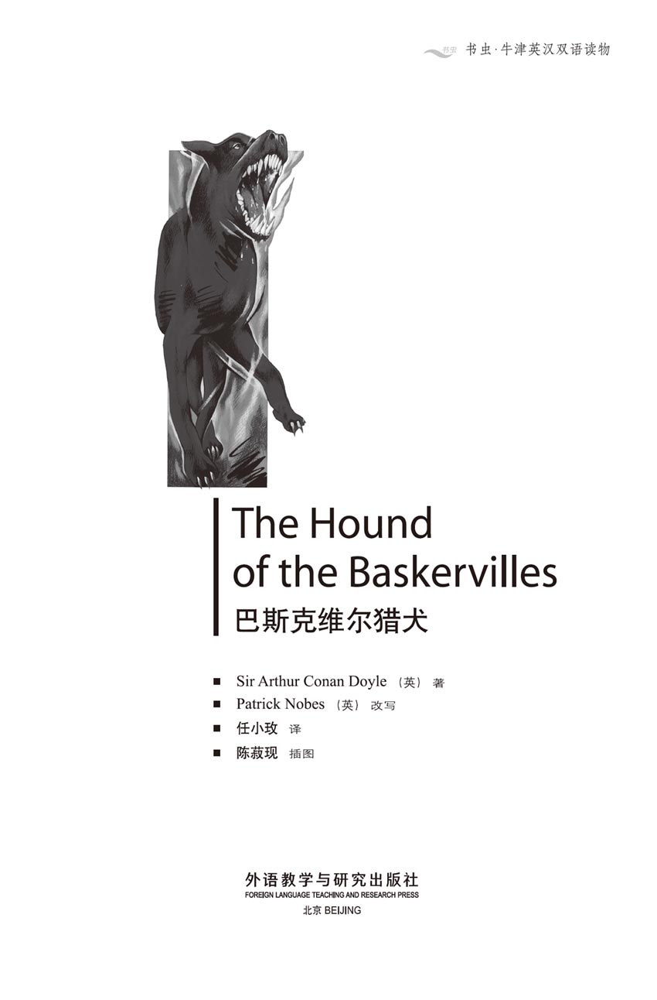
版权页
京权图字01-96-1575
Originally published by Oxford University Press, Great Clarendon Street, Oxford. © 1989
This edition is licensed for sale in the People's Republic of China only and not for export therefrom.
'Oxford' is a registered trademark of Oxford University Press.
只限中华人民共和国境内销售，不包括香港特别行政区、澳门特别行政区及台湾省。不得出口。
图书在版编目（CIP）数据
巴斯克维尔猎犬 = The Hound of the Baskervilles／（英）柯南道尔（Conan Doyle, A.）著；（英）诺巴斯（Nobes, P.）改写；任小玫译．—北京：外语教学与研究出版社，1996.12（2014.9 重印）
（书虫·牛津英汉双语读物）
ISBN 978-7-5600-1179-0
Ⅰ．巴… Ⅱ．①柯…②诺…③任… Ⅲ．小说—对照读物—英、汉 Ⅳ．H319.4：I
中国版本图书馆CIP数据核字（97）第25589号
出版人： 蔡剑峰
责任编辑：田 娜
封面设计：刘 莎
出版发行：外语教学与研究出版社
社 址：北京市西三环北路19号（100089）
网 址：http://www.fltrp.com
版 次：1997年4月第1版
书 号：ISBN 978-7-5600-1179-0
* * *
凡侵权、盗版书籍线索，请联系我社法律事务部
举报电话：（010）88817519
电子邮箱：banquan@fltrp.com
法律顾问：立方律师事务所 刘旭东律师
中咨律师事务所 殷 斌律师
简介
简介
这也许是世界上最驰名的侦探故事。夏洛克·福尔摩斯当然是最负盛名的侦探了。阿瑟·柯南·道尔爵士是在一百多年以前塑造了这个人物的。但是，福尔摩斯的种种奇特经历迄今依旧是既生动有趣又扣人心弦。
为了更好地理解这个故事，我们有必要对达特沼地有一番了解：这是英格兰西南地区的一个确有其名的地方。它是由岩石和沼地组成的一片旷野，在日头当空时分一股浓雾会突如其来地向你迎面扑来，并且将你笼罩起来。它是稀软的沼泽遍布之地，是松软的、长着绿色植被的地带，可以把人拖进去进而吞灭掉。它是英国安全保障最好的监狱所在地。它也是一百多年前那条最为庞大的狗——巴斯克维尔猎犬出没的地方。
阿瑟·柯南·道尔爵士（1859—1930）作为夏洛克·福尔摩斯这位人物的塑造者而享誉于世。他本人也是一名医生，而且在现实生活中还是一位侦探。
目录
1 The Case Begins
1
The Case Begins
The September sun was shining brightly into the windows of 221B Baker Street, and London was enjoying a beautiful late summer. I had finished my breakfast and was reading the newspaper. As usual, Holmes had got up late, and was still eating. We were expecting a visitor at half past ten, and I wondered whether Holmes would finish his breakfast before our visitor arrived.
Holmes was in no hurry. He was reading once again a letter he had received three days ago. It was from Dr James Mortimer, who asked for an appointment with Holmes.
'Well, Watson,' Holmes said to me, 'I'm afraid that a doctor from Devonshire won't bring us anything of real interest. His letter doesn't tell us anything about his business though he says it's very important. I hope we can help him.'
At exactly half past ten there was a knock on our front door.
'Good,' said Holmes. 'Dr Mortimer is clearly a man who will not waste our time.'
We stood up as our visitor was brought into the room.
'Good morning, gentlemen,' he said. 'I'm Dr James Mortimer, from Grimpen in Devonshire, and I think you must be Mr Sherlock Holmes.' He shook hands with Holmes, who said:
'How do you do, Dr Mortimer? May I introduce my good friend, Dr John Watson, who helps me with my cases. I hope you will allow him to listen to our conversation.'
'Of course,' said Mortimer, as he turned to me and shook hands. 'I need your help very badly, Mr Holmes. If it will be useful for Dr Watson to hear what I have to say, please let him stay and listen.'
Mortimer did not look like a country doctor. He was very tall and thin. He had a long thin nose. His grey eyes were bright, and he wore gold glasses. His coat and trousers were old and worn. His face was young, but his shoulders were bent like an old man's and his head was pushed forward. He took some papers from his pocket, and said:
'Mr Holmes, I need your help and advice. Something very strange and frightening has been happening.'
'Sit down, Dr Mortimer,' said Holmes, 'and tell us your problem. I'll help you if I can.'
case n. something (a problem or a crime) investigated by the police or detectives. 案件。
expect v. think or believe that sth. will happen or come, that sb. will come. 预期，料想。
as usual 一如既往。
appointment n. arrangement to meet sb. 约会。
well int. 表示惊愕、慰藉、无可奈何、了解、让步或同意等。
conversation n. talking. 谈话，交谈。
badly adv. very much. 非常地。
country n. land used for farming, land consisting of open spaces; the contrary of town and suburb. 乡间；田野（与城市及城郊相对）。
1 这宗案件开始了
1 这宗案件开始了
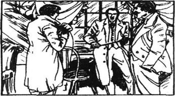
9月的阳光明媚地照进了贝克街221号B门的窗户里，整个伦敦都在享受晚夏的美好时光。我已吃过早餐，此时正在看报纸。福尔摩斯同往常一样，总是很晚才起床。他这时正在进餐。我们正等待着一位预约好要在10点半时前来拜访的客人；我不知道福尔摩斯在客人到来之前是否吃得完他的早餐。
福尔摩斯并不匆忙行事。他又看了一遍三天之前收到的那封来信。这是詹姆斯·摩梯末医生写来的。他请求能够约个时间和福尔摩斯见次面。
“啊，华生，”福尔摩斯对我讲道，“恐怕德文郡的这位医生是不会给我们带来任何有趣的事情的。虽然他说事情举足轻重，但是他的信中并未说明他的来意。我希望我们能够帮他的忙。”
正好10点半时，有人敲了敲我们的前门。
“嘿，”福尔摩斯道，“摩梯末医生显然不会浪费我们的时间。”
当客人被带进屋时，我们起身迎接了他。
“早上好，先生们。”他讲道，“我是詹姆斯·摩梯末医生，是从德文郡的格林盆来的；我想您一定就是夏洛克·福尔摩斯先生了。”他与福尔摩斯握了握手，福尔摩斯道：
“您好吗，摩梯末医生？我来介绍一下我的好朋友约翰·华生医生，他一直在帮我办案。我希望您能允许他来听我们的谈话。”
“当然可以，”摩梯末边说着话边回头与我握手。“我急需您的帮助，福尔摩斯先生。如我的话对华生医生有用的话，那就请他留下来听吧！”
摩梯末看上去并不像是一位乡间医生。他身材高大，身体瘦削，长着细长的鼻子。他那灰色的眼睛炯炯有神，他还戴着一副金丝眼镜。他的外衣和裤子都已破旧、磨损不堪了。他的脸看上去还很年轻，但是身体已像老人一样佝偻，而且头还向前探着。他从口袋里取出一些手稿，并说道：
“福尔摩斯先生，我需要您的帮助和建议。发生了一件既奇怪又恐怖的事情。”
“坐下，摩梯末医生，”福尔摩斯道，“吿诉我您的疑难问题。我将尽力帮助您。”
2 The Baskerville Papers
2
The Baskerville Papers
'These papers were given to me by Sir Charles Baskerville,' said Dr Mortimer. 'He asked me to take good care of them. You may remember that Sir Charles died suddenly three months ago. His death caused much excitement in Devonshire, the county where Baskerville Hall is. Sir Charles was a sensible man, but he believed the story which is told in these papers.'
Dr Mortimer went on: 'The story is about the Baskerville family. I have come to see you because I need your help. I think that something terrible is going to happen in the next twenty-four hours. But you can't help me unless you know the story in these papers. May I read them to you?'
'Please continue, Dr Mortimer,' said Holmes, and sat back in his chair with his eyes shut.
Mortimer began to read in his high, rather strange, voice:
I, William Baskerville, write this for my sons in the year 1742. My father told me about the Hound of the Baskervilles. He told me when it was first seen, and I believe his story was true. I want you, my sons, to read this story carefully. I want you to know that God punishes those who do evil. But never forget that He will forgive those who are sorry for any evil they have done.
Over a hundred years ago, in 1640, the head of the Baskerville family was Sir Hugo Baskerville. He was a wild and evil man. He was cruel and enjoyed hurting people. Sir Hugo fell in love with the daughter of a farmer who was a neighbour of his. The young woman was afraid of the evil Hugo, and avoided him. one day, Hugo heard that her father and brothers were away. He knew that she would be alone. So he rode to the farm with five or six of his evil friends. They made the girl go back to Baskerville Hall with them, and locked her in a room upstairs. Then they sat down in the great dining hall to drink. As usual, they drank bottle after bottle and soon they began to sing and laugh and shout evil words.
The girl upstairs, who was already very frightened, felt desperate when she heard the terrible things they were shouting. So she did a very brave thing. She opened the window, climbed out of the room and down the ivy on the wall. Then she started to run across the moor towards her home.
A little while later, Hugo left his friends and went upstairs to the room to take her some food and drink. When he found an open window and an empty room, he behaved like a man who was mad. He ran down the stairs. He screamed that he would give himself to the Devil if he caught the girl before she reached home. Some of Hugo's drunken friends told him to let the hounds chase her, and so he ran from the house and unlocked the dogs. Then he jumped onto his black horse, and rode off over the moor with the hounds running and crying around him.
Hugo's friends fetched their horses and followed him. There were thirteen of them. After a mile or two they passed an old farmer and asked him if he had seen Sir Hugo and the hounds. The man looked half mad with fear and spoke with difficulty. He said that he had seen the girl and the hounds running close behind her. Sir Hugo had been riding just behind the hounds. 'But I have seen more than that,' the old man said. 'Behind Sir Hugo I saw a huge and terrible hound running silently. May God keep me safe from that hound of hell.'
The thirteen men laughed at the old man and rode on. But their laughter soon stopped when they saw Sir Hugo's horse running wildly towards them without a rider.
The thirteen men moved closer together as they rode on. They were suddenly afraid. over the moor they went until, at last, they caught up with the hounds.
Everyone in the county knew that the Baskerville hounds were brave and strong. But now they were standing at the head of a deep valley in the moor with their ears and tails down. They were very frightened. Hugo's friends stopped. Most of them would not go on, but three were brave enough to go down into the valley.
The valley had a wide flat floor. In the middle of the flat ground stood two great stones. They had stood there for thousands of years. The moon was shining brightly on the great stones, and between them, on the flat ground, lay the girl. She had fallen there, dead of fear and exhaustion. Sir Hugo's body was lying near her. But it was not the sight of Sir Hugo or the girl that filled the men with fear. It was the sight of the huge animal that was standing over Sir Hugo. Its teeth were at his throat. It was a great black creature that looked like a hound. But it was larger than any hound they had ever seen.
As they watched, it tore out Hugo Baskerville's throat. Then it turned towards them. Its eyes were burning brightly. Its body shone with a strange light. Blood ran from its mouth. The men screamed and kicked their horses. They rode back up the valley as fast as they could go. Later that night one died from the horror he had seen. The other two were mad for the rest of their lives.
That was the first time the Hound appeared, my sons. It has been seen many times since then, and many of the Baskervilles have died in strange and terrible ways. Because of this I warn you not to cross the moors at night. The Devil finds it easy to do his work when the world is dark.
county n. a large area or part of a country. 郡，州，县。
Sir n. 头衔：爵士。
sensible adj. 明智的。
unless conj. if not, except when. 除非。
hound n. dog used for hunting and racing. 猎犬。
God n. creator and ruler of the universe. 上帝。
He pron. 大写时常指上帝。
daughter n. one's female child. 女儿。
evil adj. wicked, harmful. 邪恶的，有害的。
desperate adj. filled with despair and ready to do anything. 因绝望而不惜冒险的。
ivy n. 常春藤。
behave v. act. 行动。
Devil n. the most wicked spirit of evil (Satan), and the enemy of God. 魔王；撒旦。
moor n. open, uncultivated land. 荒野，旷野。
fetch v. go for and bring back. 接来。
may v. 用以表示愿望和希望。
head n. upper end. 上端。
frightened adj. afraid. 害怕的。
dead of 死于（饥饿、疾病、情感）。
exhaustion n. total loss of strength. 疲惫。
throat n. front part of the neck. 喉头。
horror n. sth. that causes fear or dislike. 令人恐怖或厌恶的事物。
2 巴斯克维尔家族的手稿
2 巴斯克维尔家族的手稿
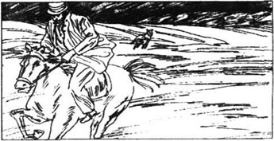
“这些手稿是查尔斯·巴斯克维尔爵士托付给我的，”摩梯末医生道。“他要我保管好这些手稿。您可能还记得，查尔斯爵士于三个月前突然逝去。他的去世在德文郡引起了很大的关注，德文郡就是巴斯克维尔庄园的所在地。查尔斯爵士是个很理智的人，但是他相信这些手稿中所讲述的故事。”
摩梯末医生继续讲道：“这个故事与巴斯克维尔家族有关。因为我需要您的帮助，所以来见您。我认为在即将到来的24小时之内将会发生一桩可怕的事情。但是，如果您不了解手稿中所讲述的故事的话，那么您就不可能帮得了我。我可以将它读给您听吗？”
“请讲下去吧，摩梯末医生。”福尔摩斯说道，闭着眼睛向后坐了坐。
摩梯末开始以他那高亢、奇特的嗓音读道：
本人，威廉·巴斯克维尔，于1742年为后代写下了这些。我的父亲告诉了我有关巴斯克维尔猎犬的事情。他告诉了我它第一次被人看见的经过，我认为他讲的故事是真实的。我希望你们，我的孩子们，认真看一看这个故事。我想让你们知道：上帝一贯惩罚那些为非作歹的人们。但是，永远不要忘记：上帝将宽恕那些悔过的人们。
一百多年前，在1640年，巴斯克维尔家族的头面人物是雨果·巴斯克维尔爵士。他既放荡又邪恶。他残忍，以伤害别人为乐。雨果爵士爱上了与他毗邻的一位农夫的女儿。这位少女害怕这个邪恶的人，而且还躲着他。一天，雨果听说她的父兄几人都出门去了。他知道她将独自一人在家了。因此，他与五六个下流的狐朋狗友策马去了这个农场。他们把她弄回了巴斯克维尔庄园，还把她关在楼上的一个房间里。然后他们便在楼下的大饭厅里坐下痛饮了起来。同往常一样，他们喝了一瓶又一瓶的酒，不久便开始狂歌乱笑并吐起脏话来。
楼上的这位姑娘，这时已是惊恐万分了，听到他们所讲的那些不堪入耳的脏话时便感到十分绝望。在此情形之下她竟干出一件勇敢的事来。她打开窗户，从房间里爬出来，顺着墙上的常春藤一直爬了下来。然后她就穿过沼地径直往家中跑去了。
过了不多一会儿，雨果离开了他的那帮朋友，到楼上的那个房间给她送食物和酒去了。当他发现窗户大开、室内空空时，他就像中了魔一般。他冲下楼，大叫大嚷着说，只要他能在这个女孩赶回家之前追上她，他就愿把自己献给魔王。雨果的那些已经喝得酩酊大醉的朋友们让他把猎狗放出去追她，因此他就从屋里跑出去把狗放了出来。接着，他跳到了那匹黑马的背上，由那群狂奔乱吼的狗簇拥着在沼地上策马而去。
雨果的朋友们找到了自己的马匹，跟着他追去了。他们一共是13个人。在他们跑了一两英里路之后，遇到了一位老农夫，便问他看到了雨果爵士与他的那群猎狗没有。这个人看上去被吓得有些发疯，几乎都说不出话来。他说他曾看到过那位少女以及一群紧追她不放的猎犬。雨果爵士就骑着马跟在这些猎犬后面。“但是我看到的还不止这些，”这位老人说道。“我看到一条硕大而可怕的猎犬正一声不吭地跟在他的后面。但愿上帝别让这条地狱之犬伤害我！”
这13个人对这位老人嘲笑了一番，接着又策马往前。但是当他们不久看到雨果爵士的那匹马独自朝他们狂奔而来时就笑不出声来了。
这13个人骑着马，同时往一起靠了靠。他们突然间感到很害怕。他们在这片沼地上一直朝前骑着，直到最终赶上了那群猎狗。
巴斯克维尔家的猎犬骁勇而又强壮，在郡里是家喻户晓的。但它们这时却耷拉着双耳和尾巴站在沼地里的一条深谷的尽头。它们十分惊恐。雨果的这帮朋友们停了下来。他们大多数人都不愿意再往前骑了，但有三人比较胆大，朝山谷里走了过去。
这个山谷的底部是一片宽阔的平地。在平地的中央立着两块大岩石。它们已经在那儿竖立了几千年之久。月光明朗地照在这两块大岩石上，而那位少女就躺在它们之间的平地上。她已因惊恐和疲惫倒地而死。雨果爵士的尸体躺在她旁边。但是，使这些人毛骨悚然的不是那位少女或雨果爵士的那幅景象，而是站在雨果爵士身旁的一只形体硕大的畜生。它的牙齿撕扯着他的喉咙。它是一个样子像猎狗的又大又黑的畜生。可是他们谁也没见过这么大的猎犬。
在他们注视的时候，它扯断了雨果·巴斯克维尔的喉咙。然后，它转过身来面朝着他们。它的眼睛冒着火。身体也闪烁着一种奇特的光芒。鲜血从它的嘴里淌了出来。这几个人大叫起来并且踢了踢马。他们调转马头以最快的速度跑出了山谷。在这之后，其中的一个人就在当天夜里因自己所看到的恐怖景象而吓死了，另外两个则终身精神失常。
那就是那只猎犬初次露面的经过，我的孩子们。从那以后，人们曾多次目睹过它的踪迹，而且巴斯克维尔家族里有许多人都以蹊跷和恐怖的方式死去。因此，我警告你们不要在黑夜里走过沼地。魔鬼发现黑夜里正易于它嚣张一番。
3 How Sir Charles Died
3
How Sir Charles Died
When Dr Mortimer had finished reading this strange story, he looked across at Sherlock Holmes. Holmes looked bored.
'Did you find the story interesting?' asked Dr Mortimer.
'It may interest a collector of stories to frighten children,' said Holmes.
Dr Mortimer took a newspaper from another pocket.
'Now, Mr Holmes, let me read you something which was written only three months ago. It is from the Devonshire County Newspaper, and it is about the death of Sir Charles Baskerville.'
Holmes looked more interested. Dr Mortimer began to read:
The sudden death of Sir Charles Baskerville has caused great sadness in the county. Although he had lived at Baskerville Hall for only two years, everyone liked him. Sir Charles had lived abroad and made his money there. He came back to spend his fortune on repairing Baskerville Hall and its farms and villages, as the buildings and lands were in very poor condition. He was a friendly and generous man, who gave freely to the poor.
The official report of his death does not explain everything that happened. However, it does show that there was no question of murder. Sir Charles died from natural causes, and the strange stories people are telling about his death are not true. His friend and doctor, Dr James Mortimer, said that Sir Charles' heart had been weak for some time.
The facts are simple. Every night before going to bed, Sir Charles went for a walk in the gardens of Baskerville Hall. His favourite walk was down a path between two hedges of yew trees, the famous Yew Alley of Baskerville Hall on the night of 4th June he went out for his walk to think and to smoke his usual cigar.
Sir Charles was going to London on the next day, and Barrymore, his butler, was packing his suitcases. By midnight Barrymore was worried that Sir Charles had not returned, so he went to look for him. He found the door of the Hall open. The day had been rainy and wet so Barrymore saw the prints left by Sir Charles' shoes as he had walked down the Alley. Half way down the Alley is a gate, which leads to the moor. There were signs that Sir Charles had stood there for some time. Barrymore followed the footprints to the far end of the Alley. And there he found Sir Charles' body.
Barrymore reported something interesting about the footprints. He said that they changed between the moor gate and the end of the Alley. As far as the moor gate there was a whole footprint for each of Sir Charles' steps. After he passed the gate, only toe prints could be seen. Barrymore thought that Sir Charles had walked on his toes.
A man called Murphy, who buys and sells horses, was not far away at the time of Sir Charles' death. He had been drinking a lot of beer, but he says he heard cries. He is not sure where they came from.
Dr Mortimer was called to look at Sir Charles' body. There were no signs that Sir Charles had been murdered, but Dr Mortimer did not recognize his friend's face. The whole shape of it was changed. However, this often happens with deaths which are caused by weak hearts. When Dr Mortimer looked at the body, he found that this was, in fact, what had happened. Sir Charles' weak heart had failed, and this had caused his death.
Everyone hopes that the new head of the Baskerville family will move quickly into the Hall. Sir Charles' good work must go on.
The new head of the Baskerville family will be Sir Henry Baskerville, if he is still alive and if the lawyers can find him. He is the son of Sir Charles Baskerville's younger brother, who died some years ago. The young man has been living in the USA. The Baskerville lawyers are trying to contact him to tell him about his good fortune.
Dr Mortimer put the newspaper back into his pocket.
'Those are the official facts about the death of Sir Charles. They are the facts that everyone knows, Mr Holmes,' he said.
'Thank you for informing me about this interesting case,' Holmes said. 'I read about it at the time, but I heard none of the details. The newspaper gives the facts that everybody knows. Now I want you to tell me all the other facts that you know. What do you know about the strange stories?'
'I haven't told anyone these other facts,' said Dr Mortimer. 'I am a man of science, as you know. I have always believed that there are sensible explanations for everything. I didn't want to say anything that could stop Sir Henry from coming to live at the Hall. But I will tell you the details that were not in the report.'
'In the months before his death,' Dr Mortimer went on, 'Sir Charles was a very worried man. He was near to breaking down. He believed the story of the Hound of the Baskervilles. He refused to go out at night. He often asked me whether I had seen any strange animal or heard the cry of a hound on the moor at night. He always got very excited when he asked this question.
'I remember driving up to the Hall one evening about three weeks before he died. He was standing at the door. I went up to him, and saw him staring at something behind me. There was a look of horror on his face. I turned quickly and saw something moving between the trees. It looked like a small black cow. He was so frightened that I went to look for the animal. It had disappeared but Sir Charles was very worried. I stayed with him all the evening. It was then he gave me the old papers I have read to you. What I saw that evening may be important when you consider what happened on the night of his death.
'When Barrymore, the butler, found Sir Charles' body, he sent someone to fetch me. I checked all the facts. I have just read them to you, and they are all true.
'But Barrymore said one thing that was not true. He said that there were no other prints on the ground around the body. He did not notice any. But I did. They were not close to the body, but they were fresh and clear.'
'Footprints?' asked Holmes.
'Yes. Footprints,' said Mortimer.
'A man's or a woman's?' asked Holmes.
Dr Mortimer looked at us strangely for a moment. His voice became a whisper as he answered:
'Mr Holmes, they were the footprints of a huge hound!'
now adv. 与时间无关，用以表示说话者的语气，或解释、警告、安慰等。
cause v. make happen. 致使；n. that makes sth. happen. 原因。
building n. house or other structure. 房屋，建筑物。
generous adj. ready to give; noble-minded. 愤慨大方的；思想高尚的。
murder n. unlawful killing of a human being on purpose. 谋杀；v. 谋杀。
weak adj. not strong. 虚弱的。
favourite adj. best liked, preferred above all others. 最受喜爱的。
hedge n. 树篱。
yew n. 紫杉，水松。
alley n. a narrow road or path. 小径；小巷，弄，胡同。
cigar n. 雪茄。
butler n. head manservant. 管家，仆役长。
suitcase n. 手提衣箱，小提箱。
fail v. be unsuccessful. 失败。
contact v. get in touch with. 接触，联系；n. 联系。
lawyer n. 律师。
fortune n. 运气，成功，巨富。
detail n. small fact or item. 细节。
near to 近于。
break down v. collapse. 崩溃。
whether conj. 是否。
check v. examine in order to learn if it is correct. 检查，验证。
fresh adj. newly made. 新鲜的。
whisper n. 低声耳语；v. 低语，秘密告诉。
3 查尔斯爵士是如何死的
3 查尔斯爵士是如何死的
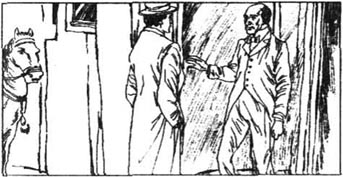
摩梯末医生读完这个奇怪的故事后望着对面的夏洛克·福尔摩斯。福尔摩斯看上去显得很不耐烦。
“你没觉得这个故事有趣吗？”摩梯末医生问道。
“它可能会让那些收集故事吓唬孩子们的人感兴趣。”福尔摩斯讲道。
摩梯末医生从另一个衣袋里掏出一张报纸。
“福尔摩斯先生，现在让我来读给您听听就在三个月之前撰写的东西吧。它刊登在《德文郡纪事报》上，并与查尔斯·巴斯克维尔爵士的死有关。”
福尔摩斯看上去更专注些了。摩梯末医生开始读了起来：
查尔斯·巴斯克维尔爵士之暴卒，使本郡不胜哀悼。尽管他来巴斯克维尔庄园不过两年时间，但是大家都非常喜爱他。查尔斯爵士曾旅居国外，并在那里发了财。他致富后还乡，想把自己的资产用来修复巴斯克维尔庄园及其农场和村庄，因为这些建筑和土地都已处于潦倒不堪的境地了。他待人友善而又慷慨大方，还毫无吝啬地资助穷人。
官方对他死亡的报告没有说明所发生的一切事情。然而，它的确表明其中并没有谋杀的成分。查尔斯爵士死于自然原因；人们讲述的关于他的死亡的种种故事都是不真实的。他的朋友兼医生詹姆斯·摩梯末医生说查尔斯爵士的心脏虚弱已颇有一段时日了。
实情甚为简单。查尔斯爵士在每晚就寝前，总要在巴斯克维尔庄园的花园里散步。他喜欢沿着夹在水松树篱之间的那条小路即巴斯克维尔庄园里那条出名的水松小道散步。6月4日晚，他出去散步来思考些问题并和往常一样抽根雪茄。
查尔斯爵士次日将去伦敦，他的管家白瑞摩当时正在为他准备行装。午夜时分，白瑞摩因查尔斯爵士还未回来而焦虑不安，于是便去找他。他发现庄园的门还开着。那天下了雨，还很潮湿，因此白瑞摩看到了查尔斯爵士沿着那条小道散步时留下的脚印。在小道的中途有一个栅门，它通向沼地。有种种迹象说明查尔斯爵士曾在此站过一会儿。白瑞摩循着足迹走到了小道的尽头。而且就在那儿他发现了查尔斯爵士的尸体。
白瑞摩报告了一件有关脚印的有趣的事情。他说，脚印在栅门和小道的尽头之间变样了。到栅门为止，查尔斯爵士的每个脚印都是完整的。但过了栅门之后，则只能看到他脚趾的印记了。白瑞摩觉得查尔斯爵士曾用脚尖走过。
一位名叫摩菲的马贩子在查尔斯爵士死时正在距出事地点不远之处。他当时已喝了许多啤酒，但是他说他那时曾听到呼喊声。他不清楚呼喊声来自何方。
摩梯末医生被叫来查看查尔斯爵士的尸体。没有迹象说明查尔斯爵士是被谋杀的，但是摩梯末医生已认不出他朋友的面容了。整个脸已经变形了。然而，这对因心脏衰竭而导致的死亡来说是常有的。当摩梯末医生察看尸体时，他发现这事实上正是所发生的情况。查尔斯爵士虚弱的心脏已无力承受重荷，这导致了他的死亡。
大家都期盼巴斯克维尔家族的新主人能快速入住巴斯克维尔庄园。查尔斯爵士的善行必须继续进行下去。
巴斯克维尔家族的新主人将是亨利·巴斯克维尔爵士，如果他尚在人世而律师们又能找到他的话。他是查尔斯·巴斯克维尔爵士已故弟弟的儿子。这位年轻人一直居住在美国。巴斯克维尔家族的律师们正试图与他联系以将他的好运告诉他。
摩梯末医生将这份报纸放回了口袋里。
“那些便是有关查尔斯爵士之死的官方报导。它们是些众所周知的事实，福尔摩斯先生。”他说道。
“感谢您告知我有关这个饶有趣味的案件，”福尔摩斯说道。“当时我曾看到过有关它的报导，但是我从未听到过相关的细节。报纸提供了那些众所周知的事实。现在我想让您告诉我您所知道的其他事实。你对那些怪诞的故事知道些什么呢？”
“我从未告诉过任何人这些内幕，”摩梯末医生道。“如您所知，我是一位从事科学工作的人。我从来都认为凡事都有理智的解释。我当时不想说出任何阻止亨利爵士前来庄园定居的话。可是我将告诉您那些从未在报导中写进去的种种细节。”
“在他去世之前的几个月里，”摩梯末医生接着说道，“查尔斯爵士已是非常焦虑不安。他几乎濒于崩溃的境地。他相信巴斯克维尔猎犬的故事。他拒绝在晚上外出。他常常问我是否在夜间看到过什么奇怪的动物或是听见过一只猎狗在沼地上的嗥叫声。每当他问起这个问题的时候他总是变得非常亢奋。
“我记得，在他死之前大约三个星期的一天傍晚，我驾着马车去他的庄园。他正站在门前。我走到他面前，看到他正盯着我背后的什么东西。他的脸上带着恐怖的神情。我赶快转过身去，看到有个东西正在树林之间移动。它看似一头黑色的小牛。他是如此恐惧不安，我便不得不去那儿四下里寻找那个东西。它已经消失了，可是查尔斯爵士非常担心。整个晚上我都陪着他。就是在那时，他将我已读给您听的那篇古老的手稿交给了我。在您考虑他死去的那个晚上所发生的情况时，我在那个傍晚看到的情况也许会是重要的。
“当白瑞摩，那个管家，发现了查尔斯爵士的尸体时，他派人叫我去了。我核实了所有的情况。我刚才已把它们念给你们听了，而且这些事实都是确凿的。”
“但是白瑞摩有一件事没讲真话。他说，在尸体周围的地面上没有别的痕迹。他没有注意到其他痕迹。可是我注意到了。虽没有挨着尸体，可是新留下的而且很清晰。”
“是足迹吗？”福尔摩斯问道。
“是的。是足迹。”摩梯末说道。
“是男人的还是女人的？”福尔摩斯问道。
摩梯末奇怪地望了我们一会儿。他回答时声音变得犹如耳语：
“福尔摩斯先生，是一个极大的猎犬的爪印！”
4 The Problem
4
The Problem
I felt a moment of fear as Mortimer spoke these words. Holmes sat forward in his excitement, and his eyes showed he was very interested indeed.
'Why did nobody else see these footprints?' he asked.
'The footprints were about twenty metres from the body, and nobody thought of looking so far away,' Mortimer replied.
'Are there many sheep dogs on the moor?' asked Holmes.
'Yes, but this was no sheep dog. The footprints were very large indeed—enormous,' Mortimer answered.
'But it had not gone near the body?'
'No.'
'What kind of night was it?' Holmes asked.
'It was wet and cold, though it wasn't actually raining.'
'Describe the Alley to me.'
'The Alley is a path between two long yew hedges. The hedges are small trees that were planted very close together. They are about four metres high. The distance between the two yew hedges is about seven metres. Down the middle is a path of small stones. The path is about three metres wide, with grass on each side of it.'
'I understand there is a gate through the hedge in one place,' said Holmes.
'Yes, there is a small gate, which leads to the moor.'
'Is there any other opening through the hedge?'
'No.'
'So you can enter or leave the Yew Alley only from the Hall, or through the moor gate?' asked Holmes.
'There is a way out through a summer house at the far end.'
'Had Sir Charles reached the summer house?'
'No. He lay about fifty metres from it,' said Mortimer.
'Now, Dr Mortimer, this is important. You say that the footprints you saw were on the path and not on the grass?'
'No footprints could show on the grass,' said Mortimer.
'Were they on the same side of the path as the moor gate?'
'Yes. They were.'
'I find that very interesting indeed. Another question: was the moor gate closed?'
'Yes. It was closed and locked.'
'How high is it?' asked Holmes.
'It is just over a metre high.'
'Then anyone could climb over it?'
'Yes.'
'What prints did you see by the moor gate?'
'Sir Charles seems to have stood there for five or ten minutes,' said Mortimer. 'I know that because his cigar had burned down and the ash had dropped twice off the end of it.'
'Excellent,' said Holmes. 'This man is a very good detective, Watson.'
'Sir Charles had left his footprints all over that little bit of the path where he was standing. I couldn't see any other prints.'
Sherlock Holmes hit his knee with his hand angrily.
'I like to look closely at these things myself,' he said. 'Oh, Dr. Mortimer, why didn't you call me immediately?'
'Mr Holmes, the best detective in the world can't help with some things,' said Mortimer.
'You mean things that are outside the laws of nature—supernatural things?' asked Holmes.
'I didn't say so exactly,' replied Mortimer. 'But since Sir Charles died, I have heard about a number of things that seem to be supernatural. Several people have seen an animal on the moor that looks like an enormous hound. They all agree that it was a huge creature, which shone with a strange light like a ghost. I have questioned these people carefully. They are all sensible people. They all tell the same story. Although they have only seen the creature far away, it is exactly like the hell-hound of the Baskerville story. The people are very frightened, and only the bravest man will cross the moor at night.'
'And you, a man of science, believe that the creature is supernatural—something from another world?' asked Holmes.
'I don't know what to believe,' said Dr Mortimer.
'But you must agree that the footprints were made by a living creature, not a ghost?'
'When the hound first appeared two hundred and fifty years ago, it was real enough to tear out Sir Hugo's throat... but it was a supernatural hell-hound,' said Dr Mortimer.
'If you think that Sir Charles' death was caused by something supernatural, my detective work can't help you,' said Holmes, rather coldly.
'Perhaps,' said Mortimer. 'But you can help me by advising me what to do for Sir Henry Baskerville. He arrives in London by train in exactly,' Dr Mortimer looked at his watch, 'one hour and a quarter.'
'Sir Henry is now head of the Baskerville family?' asked Holmes.
'Yes,' said Dr Mortimer. 'He is the last of the Baskervilles. The family lawyers contacted him in the USA. He has come to England immediately by ship. He landed this morning. Now, Mr Holmes, what do you advise me to do with him?'
'Why should he not go to the family home?' asked Holmes.
'Because so many Baskervilles who go there die horrible deaths. But Sir Charles' good work must go on. If it doesn't, all the people on the Baskerville lands will be much poorer. If the Baskerville family leaves the Hall, that is what will happen. I don't know what to do. That is why I came to you for advice.'
Holmes thought for a little while. Then he said: 'You think it is too dangerous for any Baskerville to live at the Hall because of this supernatural hell-hound. Well, I think you should go and meet Sir Henry Baskerville. Say nothing to him about this. I shall give you my advice in twenty-four hours. At ten o'clock tomorrow morning, Dr Mortimer, I would like you to bring Sir Henry Baskerville here.'
Dr Mortimer got up from his chair. As he was leaving the room, Holmes said: 'One more question, Dr Mortimer. You said that before Sir Charles' death several people saw this strange creature on the moor?'
'Three people did,' said Mortimer.
'Did anyone see it after the death?'
'I haven't heard of anyone.'
'Thank you, Dr Mortimer. Good morning.'
After Mortimer had left us, Holmes sat down in his chair. He looked pleased. He always looked pleased when a case interested him.
I knew that he needed to be alone to think about all that he had heard. I went out for the day, and came back to find the room full of thick smoke from Holmes' pipe.
'What do you think of this case?' I asked him.
'It is hard to say. Take, for example, the change in the footprints. Did Sir Charles walk on his toes down the Alley? Only a stupid person is likely to believe that. The truth is he was running—running for his life. He ran until his heart stopped and he fell dead.'
'What was he running from?' I asked.
'That is the difficult question,' said Holmes. 'I think he was mad with fear before he began to run. He didn't know what he was doing. That explains why he ran away from the house instead of towards it. He was running away from help. The next question: who was he waiting for that night? And why was he waiting in the Yew Alley and not in the house?'
'You think he was waiting for someone?'
'Sir Charles was old and unwell. We can understand why he took a walk each evening. But why did he stand in the cold, on wet ground, for five or ten minutes? Dr Mortimer cleverly noted the cigar ash, so we know how long Sir Charles stood there. We know that he kept away from the moor, so it's unlikely that he waited at the moor gate every evening. I am beginning to understand some things, Watson. But I'll think no more about it until we meet Dr Mortimer and Sir Henry Baskerville in the morning. Please give me my violin.'
And Holmes began to play his violin. He had done all the thinking he could. Now he needed more details of the case to help him.
forward adv. onward. 向前，前进。
enormous adj. very, very huge. 巨大的，硕大的。
describe v. say what it is like. 描写。
distance n. measure of space between two points, places, etc. 距离。
detective n. person whose business is to detect criminals. 侦探。
help with avoid, prevent. 避免，阻止。
supernatural adj. of that which is not controlled or explained by physical law. 神奇的，不可思议的，超自然的。
ghost n. spirit of a dead person appearing to sb. still living. 鬼，幽灵。
hell n. home of devils and of souls after death. 地狱，冥府。
advise v. give advice to; recommend. 劝告。
land v. go to the ground (from a ship, a plane, etc.) 登陆；n. solid part of the earth's surface (sometimes used for farming) 陆地，田地。
lands （复）地产。
hear of 听说。
Good morning. 早安。（此处为告别语）
for example 例如。
toe n. each of the five divisions of the front part of the foot. 脚趾；动物的足趾。
likely adj. that is expected. 很可能发生的，有希望的。
instead of in place of. 代替。
unwell adj. 身体不好的。
note v. notice, pay attention to. 注意，留心。
unlikely adj. impossible. 不太可能的。
4 疑难问题
4 疑难问题
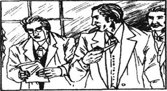
摩梯末说出这些话时我感到一阵恐惧。福尔摩斯向前探着身子，他的两眼也表明他对这件事真的很感兴趣。
“为什么没有别人看到这些爪印呢？”他问道。
“这些爪印距尸体约20米之远，也没有人想到要查看这么远的地方。”摩梯末回答道。
“沼地里有许多牧羊犬吗？”福尔摩斯问道。
“有，但是这绝不是牧羊犬。爪印的确很大——极大。”摩梯末回答道。
“但是它并没有在尸体附近吧？”
“没有。”
“那是个什么样的夜晚？”福尔摩斯问道。
“又潮又冷，不过并没真正下雨。”
“把那个小道描述给我听听。”
“那个小道位于两排长长的水松树篱之间。树篱是种得很密的矮小的树种。它们大约有4米高。两排水松树篱之间的距离大约为7米。在树篱中间是一条由小石子铺就的小道。这条小道大约为3米宽，两旁都种着草。”
“我想树篱的某处有一个栅门通道吧。”福尔摩斯说道。
“是的，有一个小门，它通向沼地。”
“树篱之中还有其他的通道吗？”
“没有。”
“因此，要想进出水松小道就只能经由庄园或是由开向沼地的栅门啰？”福尔摩斯问道。
“穿过另一头的凉亭还有一个出口。”
“查尔斯爵士走到那里了吗？”
“没有。他倒下的地方距那里约50米。”摩梯末说道。
“我说，摩梯末医生，这点是很重要的。您说您所看到爪印是在小道上而不是在草地上吧？”
“草地上看不到爪印。”摩梯末道。
“是在与开向沼地的栅门同一边的路上吗？”
“是的。是在与栅门同一边的路上。”
“我发现这确实有趣。还有一个问题：栅门是关着的吗？”
“是的。它关着，还锁上了。”
“门有多高？”福尔摩斯问道。
“刚一米出头高。”
“那么说，任何人都能爬过去啰？”
“是的。”
“你在栅门处看到了什么痕迹？”
“查尔斯爵士似乎在那里站了5至10分钟，”摩梯末说道。“我之所以知道这个，是因为他抽的那支雪茄是点着的，还曾两次掉下烟灰。”
“太妙了，”福尔摩斯道。“此人是位好侦探，华生。”
“查尔斯爵士在他所站的那一小片路面上到处都留下了自己的脚印。我看不出其他痕迹。”
夏洛克·福尔摩斯生气地用手一拍膝盖。
“我想亲自去仔细查看一番这些事情，”他说道。“唉，摩梯末医生，你当时为何不马上叫我去呢？”
“福尔摩斯先生，连世上最好的侦探对有些事情也是无能为力的。”摩梯末说道。
“您是指那些超乎自然规律——超自然的事情啰？”福尔摩斯问道。
“我并不完全是这个意思，”摩梯末回答道。“可是，自从查尔斯爵士死后，我就听到了一些似乎超自然的事情。有人曾在沼地上看到一个类似一条硕大猎犬的动物。他们都认为那是一只大家伙，它像幽灵似地发着一种奇怪的光。我曾仔细地询问过那些人。他们都很理智。他们都讲了同一个故事。虽然他们都只是从远处见过那个畜生，但它的样子的确像巴斯克维尔故事中的那只地狱之犬。人们现在都非常害怕，只有最大胆的人才敢在夜间走过沼地。”
“那么您，一位从事科学工作的人，相信这个东西是超乎自然的——是从另一个世界而来的家伙吗？”福尔摩斯问道。
“我也不知道应该相信什么。”摩梯末医生道。
“但是您总得承认那些爪印是活生生的东西而不是鬼怪留下的吧？”
“那条猎犬在250年前最初出现时也是活生生的，它撕断了雨果爵士的喉咙……但是它是一条超乎自然的恶犬。”摩梯末医生说道。
“要是您认为查尔斯爵士的死是某种超自然因素造成的话，那我的侦探工作可帮不了您什么忙，”福尔摩斯相当冷淡地说道。
“也许吧，”摩梯末道。“可是您能帮助我，建议我该为亨利·巴斯克维尔爵尔做些什么。他将正好在，”摩梯末看了看他的表，“1小时15分钟之后乘火车抵达伦敦。”
“亨利爵士现在是巴斯克维尔家族的主人吗？”福尔摩斯问道。
“对，”摩梯末道。“他是巴斯克维尔家族的最后一位成员。家族的律师们与他在美国联系上了。他已立即乘船前来英格兰。他是今早靠岸的。现在，福尔摩斯先生，您建议我对他做些什么呢？”
“为什么他不该到他祖祖辈辈居住的家里去呢？”福尔摩斯问道。
“因为巴斯克维尔家族里去了那儿的这么多人都恐怖地死去了。可是查尔斯爵士的慈善工作必须继续下去。否则的话，巴斯克维尔家族土地上的人们将要穷困得多。要是巴斯克维尔家族离开庄园的话，那将是即将发生的事实。我不知道该怎么办。这便是我前来向您讨教的原因。”
福尔摩斯考虑了一小会儿。然后他说：“您认为由于那条神秘的恶犬因而巴斯克维尔家的人住在那个庄园里都不安全。唔，我认为您该去接亨利·巴斯克维尔爵士。对他只字不提这些。24小时之后我将给您提供我的建议。明天早上10点钟时，摩梯末医生，我希望您能偕亨利·巴斯克维尔爵士同来此处。”
摩梯末医生从椅子上站起身来。在他即将离开之时，福尔摩斯说道：“再问您一个问题，摩梯末医生。您曾经说过，在查尔斯爵士死去之前曾有几个人在沼地上看到那个奇怪的动物吧？”
“有三个人看到过。”摩梯末道。
“在他死去之后有人看到过吗？”
“我还没有听说过。”
“谢谢您，摩梯末医生。早安。”
摩梯末从我们这儿走之后，福尔摩斯在他的座位上坐了下来。他显得很高兴。每当有案件让他感兴趣时他总是露出高兴的样子。
我知道他需要独自一人思考一下他所听到的东西。整个白天我就出去了，回来时发现满屋都是福尔摩斯的烟斗里冒出来的浓烟。
“对这个案子你是怎么想的？”我问他。
“很难说。就拿脚印的变化来说吧。查尔斯爵士是踮着脚沿小路走的吗？只有傻瓜才可能相信这种说法。事情的真相是，他当时在奔跑——为了逃命。他一直跑到心脏停止跳动并倒地而死为止。”
“他是为了逃避什么才跑的呢？”我问道。
“那就是难题所在。”福尔摩斯道，“我认为他在开始跑之前已被吓丢了魂了。他并不知道自己当时的举动。这就解释了他为何不朝房子而朝相反的方向跑。他这么跑就离（能得到）帮助（的地方）越来越远。下一个问题是：当晚他在等谁呢？还有，他为什么要在水松小道而不在房子里等人呢？”
“你认为他是在等人吗？”
“查尔斯爵士年事已高，身体又虚弱。我们可以理解他为什么会在每个傍晚出去散步。可是，他为何要在寒冷的夜里在潮湿的地面上站上5至10分钟呢？摩梯末医生很机敏地注意到了雪茄落下的烟灰，因此我们知晓了查尔斯爵士在那儿站立了多长时间。我们知道他是一向躲避沼地的。因此他不大可能每晚都在通向沼地的栅门前伫立等候着。我现在开始明白某些事情了，华生。可是，等明早见到摩梯末医生和亨利·巴斯克维尔爵士后我再考虑这件事吧。请你把我的小提琴拿给我。”
福尔摩斯于是开始拉起了他的小提琴。凡是能考虑到的他都已考虑过了。现在他需要与该案件有关的更多的细节来帮助他侦探这个案子。
5 Sir Henry Baskerville
5
Sir Henry Baskerville
Dr Mortimer and Sir Henry Baskerville arrived at exactly ten o'clock the following morning. Sir Henry was a small, healthy, well-built man. His face showed that he had a strong character. He wore a country suit of thick, red-brown material, and his skin showed that he spent most of his time in the open air.
'I am glad this meeting was already arranged,' Sir Henry said, after we had shaken hands with our visitors. 'I need your help, Mr Holmes. A strange thing happened to me this morning. Look at this letter.'
He put a piece of paper on the table. On it were the words: 'Do not go on to the moor. If you do, your life will be in danger.' The words had been cut out of a newspaper.
'Can you tell me, Mr Holmes, what this means, and who is so interested in me?' Sir Henry asked.
'This is very interesting,' said Holmes. 'Look how badly it has been done. I think the writer was in a hurry. Why? Perhaps because he did not want somebody to see him. I think the address was written in a hotel. The pen and the ink have both given the writer trouble. The pen has run dry three times in writing a short address. There was probably very little ink in the bottle. A private pen and bottle of ink are never allowed to get into that condition. Hullo, what's this?'
He was holding the letter only a few centimetres from his eyes.
'Well?' I asked.
'Nothing,' he said, and threw the letter down. 'Now, Sir Henry, have you anything else to tell us?'
'No,' said Sir Henry. 'Except that I have lost one of my shoes. I put a pair outside my door last night. I wanted the hotel to clean them, but when I went to get them this morning, one had gone. I only bought them yesterday, and I have never worn them. But I wanted a good shine on them.'
'One shoe seems a useless thing to steal,' said Holmes. 'I am sure the shoe will be found in the hotel and returned to you. But now we must tell you some things about the Baskerville family.'
Dr Mortimer took out the old Baskerville papers and read them to Sir Henry. Holmes then told him about the death of Sir Charles.
'So this letter is from someone who is trying to warn me, or frighten me away,' said Sir Henry.
'Yes,' said Holmes. 'And we have to decide if it is sensible for you to go to Baskerville Hall. There seems to be danger there for you.'
'There is no man or devil who will stop me from going to the home of my family,' said Sir Henry angrily. 'I want some time to think about what you have told me. Will you and Dr Watson join me for lunch at my hotel in two hours' time? By then, I'll be able to tell you what I think.'
Dr Mortimer and Sir Henry said goodbye, and decided to walk back to their hotel.
As soon as our visitors had gone, Holmes changed from the talker to the man of action.
'Quick, Watson. Your coat and hat. We must follow them.' We got ready quickly and went into the street. Our friends were not far ahead of us and we followed. We stayed about a hundred metres behind them.
Suddenly Holmes gave a cry. I saw a taxi driving along very slowly on the other side of the road from our friends.
'That's our man, Watson! Come along! We'll have a good look at him.'
I saw a man with a large black beard looking out of the taxi window. He had been following and watching our friends. But when he saw us running towards him, he shouted something to the driver, and the taxi drove off quickly down the road. Holmes looked round for another taxi, but could not see one. He began to run after the first taxi, but it was soon out of sight.
'Well, I got the number of the taxi,' said Holmes. 'So I can find the driver. He may be able to tell us something about his passenger. Would you recognize the man if you saw him again?'
'Only his beard,' I said.
'He wanted us to recognize the beard,' said Holmes. 'I think it was a false one.'
well-built adj. 身体结实的。
character n. personality. 性格。
material n. 材料，原料。
address n. 地址，住址。
private adj. personal. 个人的，私人的。
centimetre n. 厘米（度量单位）。
hotel n. building where meals and rooms are prepared for travellers. 饭店。
frighten... away 把……吓走。
taxi n. 出租汽／马车。
out of sight invisible. 看不见。
passenger n. 乘客。
recognize v. know sth. that one has seen, heard, etc. before. 认识；认出。
false adj. not right or genuine. 错的；假的。
5 亨利·巴斯克维尔爵士
5 亨利·巴斯克维尔爵士
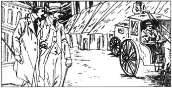
摩梯末医生和亨利·巴斯克维尔爵士于次日早上10点钟准时到达。亨利爵士长得短小精悍，身体健康，体态结实。他的面相表明他性格刚强。他穿着一件厚厚的、棕红色布料制成的外衣，他的肤色表明他大多数时间是在户外度过的。
“我很高兴事先预约好了这次会面，”亨利爵士在我们与他们握手致意之后说道。“我需要您的帮助，福尔摩斯先生。我今天早上遇到了一桩奇怪的事情。看看这封信吧。”
他把一张纸放到了桌上。上面写着：“别前往沼地，不然您将有生命危险。”这些字是从报纸上剪下来的。
“福尔摩斯先生，您能告诉我这究竟是什么意思，还有究竟是谁对我这么感兴趣吗？”亨利爵士问道。
“这很有趣，”福尔摩斯说道。“看看这项工作是干得多么拙劣吧。我认为写信人很慌张。为什么呢？也许他是不想让人看见。我想地址是在一个旅馆里写就的。钢笔和墨水都给这人添了麻烦。写这么短的地址，笔尖上的墨水就干了三次。可能是瓶中的墨水很少。私人的钢笔和墨水是决不会被弄到这个地步的。哎呀，这是什么啊？”
他把信拿到离眼睛只有几厘米远的地方。
“怎么啦？”我问道。
“没什么，”他说道，扔下了那封信，“那么，亨利爵士，您还有别的事情要告诉我们吗？”
“没有了，”亨利爵士说道。“除了我丢了一只鞋以外。昨晚我把一双鞋放在了门外。我本想让旅馆把它们擦一擦的，可是今早当我去取时有一只不见了。我是昨天才买的这双鞋，我还从未把它们穿上脚呢。我只是想给这双鞋好好地上点油。”
“一只鞋似乎偷了也没什么用场，”福尔摩斯说道。“我敢肯定这只鞋将在旅馆中找到并归还给您。但是现在我们得将有关巴斯克维尔家族的某些事情告诉给您。”
摩梯末医生掏出了巴斯克维尔家族的那份古老的手稿，并把它读给亨利爵士听。福尔摩斯接着告诉他有关查尔斯爵士之死的情况。
“这么说来这封信是出自一位想要警告我或是吓跑我的人之手了。”亨利爵士说道。
“是的，”福尔摩斯说道。“我们还不得不决定让您去巴斯克维尔庄园是否明智。那儿对您来说似乎有危险。”
“没有任何人或任何恶魔能够阻止我去我家的房子，”亨利爵士生气地讲道。“我需要时间来考虑考虑你们所告诉我的事情。您和华生医生愿意在两小时以后去我住的旅馆和我共进午餐吗？届时，我将告诉您我的想法。”
摩梯末医生和亨利爵士道别了，决定走回他们下榻的旅馆去。
我们的客人一走，福尔摩斯就由一个言谈者变成了一个行动者。
“快，华生！穿戴好你的衣帽。我们得跟着他们。”我们立刻准备完毕并来到了街上。我们的朋友们在前面不远处，我们尾随着他们。我们保持在他们身后100米处。
福尔摩斯突然叫了一声。我看到有一辆出租马车在街道的另一侧、我们的朋友对面缓缓地前进着。
“就是那个人，华生！来呀！我们来好好地看看他的样子。”
我看到有个长着黑色大胡子的男子正从出租马车的窗户里往外看。他一直盯着我们的朋友。但是，当他看到我们向他跑去时，便向车夫喊了一句什么，马车然后就顺着这条道飞奔而去了。福尔摩斯四下里张望着，想另找一辆出租马车，可是没有看到空车。他于是开始追头一辆马车，可是它不久便不见踪影了。
“哼，我记下车号了，”福尔摩斯说道。“由此我可以找到车夫。他也许可以告诉我们他的乘客的一些情况。要是你再见到那人，你会认出他来吗？”
“我只能认得他的胡须。”
“他本来便是想叫我们认得他的胡须，”福尔摩斯说道。“我认为那是假胡子。”
6 More Mystery
6
More Mystery
Later, we went on to Sir Henry's hotel. He was pleased to see us, but rather angry because another of his shoes had disappeared. This time it was one shoe of an old pair. I could see that Holmes found this both interesting and strange. He thought about it for a few moments, but said nothing except that he did not understand why a second shoe had been stolen.
At lunch, Sir Henry told Holmes that he had decided to go to Baskerville Hall.
'I think you have decided to do the right thing,' said Holmes. 'I know somebody is following you. If someone tries to harm you in London, it will be hard to stop him or catch him afterwards. In the country we have a better chance.'
Holmes went on to tell them about what we had seen that morning. Then he asked Dr Mortimer if anyone with a large black beard lived in or near Baskerville Hall.
'Yes,' said Dr Mortimer, 'Barry more, Sir Charles' butler, has a black beard.'
'We must check whether Barrymore is in London or at Baskerville Hall,' said Holmes. 'I shall send a telegram to Barrymore at the Hall, which will say: 'Is everything ready for Sir Henry?" Then I'll send another telegram to the local post office. This one will say: 'please put telegram to Mr Barrymore into his own hand. If he is away, please return telegram to Sir Henry Baskerville. "I'll give your address at this hotel. We shall know before evening whether Barrymore is in Devonshire or not.'
'Barrymore and his wife have a very fine home and nothing to do while the family is not living in the Hall,' said Sir Henry.
'That's true,' said Holmes. 'Did the Barrymores receive anything from Sir Charles' will? And did they know that they would get some money when he died?'
'Yes,' said Dr Mortimer. 'They each received ￡500，and Sir Charles told everyone what he had written in his will.'
'That's very interesting,' said Holmes.
'I hope you don't suspect everyone who got something from the will,' said Dr Mortimer. 'I received ￡1000.'
'Indeed!' said Holmes. 'And who else received money?'
'A lot of people received a little money. He gave a lot of money to a number of hospitals. The rest all went to Sir Henry, who received ￡740000.'
'I had no idea it was so much,' said Holmes in surprise.
'The Baskerville lands are worth about one million pounds,' Dr Mortimer said.
'Dear me,' said Holmes. 'A man could kill for that much. One more question. If something happened to our young friend here, who would get Baskerville Hall and all its lands?'
'Well, as you know, Sir Charles had two brothers. Sir Henry is the only son of Sir Charles' younger brother. The youngest brother of the three, Roger, was a criminal. The police wanted him, so he had to leave England. They say he looked exactly like the family picture of old Sir Hugo, who first saw the Hound. He was the same kind of man, too. He went to South America, where he died of a fever. So if Sir Henry died, Baskerville Hall would go to James Desmond, who is a cousin of the Baskervilles. James Desmond is an old man, who lives in the north of England. His life is very simple and he would not want to be rich.'
'Thank you, Dr Mortimer,' said Holmes. 'Now, Sir Henry, I agree that you should go to Baskerville Hall as quickly as possible. But you must not go alone. I myself cannot leave London at the present time. I am working on another case. I am trying to save one of the most important men in England from a difficult situation. I hope my friend Watson will go with you. If there is danger, you could not have a better man by your side.'
Sir Henry and I were both very happy with this idea. So we arranged to travel to Devonshire on the following Saturday.
Just as we were leaving Sir Henry's room, he gave a cry and got down on his knees by the table.
'Here's my brown shoe that was lost,' he said, reaching under the table.
'That's very strange,' said Dr Mortimer. 'We both searched the room before lunch, and it wasn't under the table then.'
None of the people who worked at the hotel could explain how the shoe had got back into the room.
So we had another mystery. On the way back to Baker Street in the taxi, Holmes sat thinking deeply. All through the afternoon and the evening he went on thinking silently, and smoking pipe after pipe.
Just before dinner, a telegram arrived. It was from Sir Henry and said: 'Have just heard that Barrymore is at the Hall.'
'So we don't have the answer to the mystery of the man with the beard,' said Holmes.' But perhaps we shall soon have an answer to another question.'
At that moment the door bell rang. It was the driver of the bearded man's taxi.
'I got a message that you wanted to see me,' said the driver.' I hope there's nothing wrong.'
'No, no, my good man,' said Holmes. 'In fact I'll give you some money if you can answer my questions clearly. Tell me all about the man in your taxi this morning. He was watching this house at ten o'clock and then told you to follow the two gentlemen who came out of it.'
The taxi driver was surprised at how much Holmes seemed to know. He answered: 'The man told me that he was a detective, and that I should say nothing about him to anyone.'
'This is a serious business,' said Holmes,' and you will be in trouble if you try to hide anything. What can you tell me?'
'The man told me his name,' said the driver.
Holmes looked like a man who has just won an important game. 'That was not very clever of him,' he said. 'What was his name?'
'His name,' said the taxi driver, 'was Sherlock Holmes.'
I have never seen my friend look more surprised. Then he laughed loudly. 'Tell me where he got into your taxi and everything that happened.'
We already knew most of what the taxi driver told us. But we learned that after we had lost sight of the taxi, it had gone to Waterloo Station, where the man had caught his train. The taxi driver said that the man was well-dressed and had a black beard and pale face. He was about forty and not very tall. The driver did not know the colour of the man's eyes.
Holmes gave the man a pound, and sent him away. Then he said:
'We have a very clever enemy, Watson. He is winning the game at the moment. We have no answers at all to the strange things that have happened in London. I hope you are more successful at Baskerville Hall, but I am not happy about sending you there. There is too much danger in this case.'
mystery n. sth. of which the cause or origin is hidden or impossible to understand. 神秘、难解或不可思议的事物。
disappear v. go out of sight. 消失不见。
beard n. 胡须；髯（不包括髭）。
telegram n. message sent by telegraphy. 电报，电信。
will n. sb.'s written wishes that say who will inherit his money, house, lands, etc. after he dies. 遗嘱。
hospital n. a place where people are nursed through their illness or injuries. 医院。
million n. 百万。
criminal n. 罪犯，犯罪者；adj. 犯罪的，犯法的。
simple adj. 简朴的。
would v. （古用法）表示希望，选择等。
present adj. being in the place in question. 在场的；现在的。
arrange v. see to the details of sth. 安排，整理，筹划。
knee n. joint between the thigh and the lower part of the leg. 膝盖。
pipe n. 烟斗。
bearded adj. 长胡须的。
gentleman n. 先生，绅士。
in trouble 处于困境。
game n. match. 比赛。
pale adj. (of face) bloodless. （脸色）苍白的。
successful adj. 成功的。
6 更大的疑团
6 更大的疑团
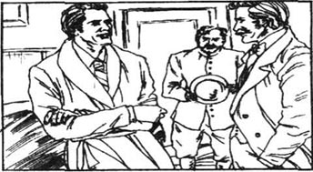
之后，我们继续向前走，到了亨利爵士下榻的旅馆。他见到我们很高兴，可是又因他的另一只鞋也失踪了而相当生气。这次丢的是一只旧鞋。我可以看出，福尔摩斯发现这件事既有趣又古怪。他斟酌了片刻，可是除却说明他不明白为何又被偷了一只鞋之外只字未说。
午餐时，亨利爵士告诉福尔摩斯他已决定去巴斯克维尔庄园。
“我认为您的决定是正确的，”福尔摩斯说道。“我知道有人在盯您的梢。如果他想在伦敦加害您的话，那我们将很难阻止他或在事后捕获他。但在乡下我们的机会就会大一些了。”
福尔摩斯接着告诉他们我们早上所见到的事情。然后，他问摩梯末医生巴斯克维尔庄园之内或附近是否有留着黑色大胡子的人。
“有的，”摩梯末医生道。“白瑞摩，查尔斯爵士的管家，就留着黑胡子。”
“我们必须验证一下白瑞摩此时是在伦敦还是在巴斯克维尔庄园里，”福尔摩斯说道。“我将给在巴斯克维尔庄园的白瑞摩发封电报，就说：‘是否已为亨利爵士准备好了一切？’然后，我再给当地的邮局发封电报。这上面就说：‘发给白瑞摩先生的电报务交其本人。如若不在，请寄回亨利·巴斯克维尔爵士。’我则把您下榻的这个旅馆的地址附上。晚上以前我们便会知道白瑞摩在不在德文郡了。”
“我们家的人不住在庄园里时白瑞摩和他妻子可就有很好的住处而又闲着无事可做了。”亨利爵士说道。
“那是实情，”福尔摩斯道。“白瑞摩夫妇从查尔斯爵士的遗嘱得到了什么没有？他们是否知道他一死他们就能拿到一笔钱呢？”
“是的，”摩梯末医生说道。“他俩每人得了500英镑；查尔斯爵士生前还将遗嘱的内容告诉了众人。”
“这事很有意思。”福尔摩斯说道。
“我希望您不要对每一位从查尔斯爵士的遗嘱得到好处的人都加以怀疑，”摩梯末医生说道。“我得了1000英镑呢。”
“是嘛！”福尔摩斯说道。“那么还有谁也得到钱了呢？”
“许多人得到了一小笔款子。他把许多钱给了许多家医院。余产全归亨利爵士所有。他得了74万英镑。”
“我真没想到会有这么多。”福尔摩斯惊讶地说道。
“巴斯克维尔家族的地产价值大约100万英镑。”摩梯末医生说道。
“天啊，”福尔摩斯说道。“一个人为了这个会杀人的。还有一个问题，假若我们的这位年轻朋友发生不测的话，那么将由谁来继承巴斯克维尔庄园及其地产呢？”
“哦，如您所知，查尔斯爵士有两个兄弟。亨利爵士是查尔斯爵士的弟弟的独生子。兄弟三人中最小的那个罗杰是个罪犯。警察局想缉拿他，于是他不得不离开了英国。人们说他长得和家中的老雨果爵士——即最初见到那个猎犬的那位——的画像一模一样。他和雨果还是同一类人。他去了南美，在那儿死于黄热病。因此，要是亨利爵士不在了的话，巴斯克维尔庄园将归他的表兄詹姆斯·戴斯蒙所有。詹姆斯·戴斯蒙年事已高，住在英格兰北部。他的生活非常简朴，也不想成为富豪。”
“谢谢您，摩梯末医生。”福尔摩斯说道。“现在，亨利爵士，我同意您尽快前往巴斯克维尔庄园。可是，您决不能单独去。我目前尚不能离开伦敦。我正在办理另一宗案子。我正在想方设法制止英格兰的一位极其重要的人士陷于危险的处境之中。我希望我的朋友华生能与您一同前往。如果您的情况危急，没有比他更好的人选陪在您身边了。”
我和亨利爵士对这个主意都感到很高兴。因此我们安排在接下来的星期六动身前往德文郡。
就在我们正要离开亨利爵士的房间时，他叫喊了一声并跪在桌边。
“这正是我丢了的那只棕色的鞋子。”他说道，同时把手伸向桌子底下。
“那真是太怪了，”摩梯末医生说道。“午饭前我们已查找过这屋子了，那时它还不在桌子底下。”
旅馆里的工作人员谁也解释不清这只鞋是如何回到房间里来的。
这样我们又有了一个疑团。我们乘出租马车回贝克街时，福尔摩斯一直在坐着沉思。整个下午乃至傍晚他都一声不吭地思考着，抽了一烟斗又一烟斗的烟。
就是晚饭前，来了一封电报。那是亨利爵士发来的，上面说：“顷悉白瑞摩现在庄园。”
“这么说，我们并没有找到关于那个大胡子的疑团的答案，”福尔摩斯说道。“可是，我们没准很快便会找到另一个疑团的答案。
这时门铃响了。来者是大胡子乘坐的那辆出租马车的车夫。
“我接到通知说您想见我，”车夫说道。“我希望我没有什么做错之处。”
“没有，没有，好伙计。”福尔摩斯说道。“如果你能清楚地回答我的问题，事实上我就会给你一些钱。告诉我今早乘坐你的马车的那个人的所有情况。他在10点时监视这幢房子，后来又让你尾随从这儿出来的两位绅士来着。”
车夫对福尔摩斯看似掌握了很多情况而感到惊诧。他回答道：“那人曾对我说他是位侦探，还对我说不许对任何人讲关于他的事情。”
“这是一件很严重的事情，”福尔摩斯说道。“如果你想对我隐瞒什么的话，你就要倒霉了。你能告诉我什么呢？”
“这人告诉了我他的名字。”车夫说道。
福尔摩斯就像刚刚赢得了一场重大比赛的人一样。“那他可真不太精明，”他说道。“他（说他）叫什么名字啊？”
“他的名字，”车夫说道，“是夏洛克·福尔摩斯。”
我从来没有看到我的朋友那样吃惊过。然后，他纵声大笑起来。“告诉我他在什么地方搭上你的车的以及都发生了些什么事情。”
车夫告诉我们的大多数事情我们都已经知道了。可是我们还得知，在我们那时看不见了马车之后，马车去了滑铁卢车站，那个人在那儿上了火车。车夫说那人衣着考究，留着黑胡须，脸色苍白。他大约40岁年纪，身材不算太高。车夫不知道那人的眼珠的颜色。
福尔摩斯给了他一英镑，然后把他打发走了。接着他说道：
“我们这次搞上了个狡猾的对手，华生。目前来看他是赢了。我们对在伦敦发生的那些怪事毫无答案。我希望你在巴斯克维尔庄园要顺当些，可是派你去那儿我可真是不放心。这宗案子有着太多的危险。”
7 Baskerville Hall
7
Baskerville Hall
Holmes came to Waterloo Station to say goodbye to us. Our friends told him that they were sure nobody had followed them since our last meeting. Sir Henry's other shoe had not reappeared. Holmes repeated his warning that Sir Henry should not go on the moor at night, and should not go anywhere alone. Then Holmes checked with me that I had my gun, an army revolver.
The journey was fast and enjoyable. We were met at Newtown Station and driven to Baskerville Hall. The countryside we drove through was beautiful, but behind it we could see the long, dark, frightening hills of the moor.
As we turned a corner, we were surprised to see a soldier on horseback. He was carrying a gun.
Dr Mortimer asked our driver why the soldier was there.
'A dangerous criminal has escaped from the prison, sir,' he told us. 'He's been free for three days now, and people are frightened. His name is Selden. He's the man who did that murder in London.'
I remembered the case well. It had been a very cruel murder. I thought of this killer out on the empty, wild moor, and I felt more and more uncomfortable about my surroundings. The beautiful green fields with their thick hedges were behind us, and we were now on the cold, open moor. Everything was grey, hard and wild. Huge rough stones stood on the hard ground. The tops of the hills stood sharply like cruel teeth against the sky. A cold wind was blowing, and night was falling. I saw Sir Henry pull his coat closer round him.
At last we reached the gates of Baskerville Hall. From the gates a long, dark road led up to the house, with the black shapes of old trees on each side of it. At the end of this road we could see the great house standing with a pale light round it like a ghost.
'I can understand why my uncle felt that trouble was coming to him here. It's not a welcoming place,' said Sir Henry, and his voice shook as he spoke.
As we got closer, we could see that the Hall was a heavy, dark building with a large main entrance. Most of the building was old and was covered in dark green ivy, but some of it had been built more recently and was of grim, black stone. A dull light shone through the heavy windows. Black smoke was coming from one of the high chimneys of the main building.
'Welcome, Sir Henry! Welcome to Baskerville Hall.'
Barrymore, the butler, and his wife were waiting on the steps at the main entrance. They came down and took our suitcases into the house. Dr Mortimer left us to go home, and we went into the hall, where a fire was burning. It was a fine room, large and high.
'It's exactly as I imagined an old family home,' Sir Henry said.
Barrymore showed us to our rooms. He was a tall, handsome man, with a full black beard. After we had washed and changed our clothes, he brought us to dinner. The dining-room was not very welcoming. It needed more lights to make it brighter. On the walls were the pictures of the Baskervilles of the past. They looked down on us silently, and did nothing to make us feel happier.
After dinner we went to our rooms. Before I got into bed, I looked out of my window. A strong wind sang sadly as it bent the trees in front of the Hall. A half moon shone through the dark, flying clouds onto the wild and empty moor.
I could not sleep. Then, suddenly, in the middle of the night I heard very clearly the sound of a woman crying. It was the crying of a person who was hurt by some deep sadness. The sound was not far away, and was certainly in the house.
revolver n. 左轮手枪。
enjoyable adj. giving joy, pleasant. 令人愉快的。
killer n. 杀手；凶手。
uncomfortable adj. not comfortable, uneasy. 不舒服的，不安的。
surrounding adj. around and about a place. 周围的；n. 环境，周围的事物。
hard adj. rough and not soft. 坚硬的。
entrance n. opening, gate, door by which one enters. 入口；大门。
chimney n. 烟囱，烟筒。
grim adj. looking severe and stern or frightening and unwelcoming. （人）严厉的，险恶的，冷酷的；（物）阴森的。
handsome adj. (of men) good-looking. （男子）漂亮的，英俊的。
bend (bent, bent) v. force into a curve or angle. 弯曲。
7 巴斯克维尔庄园
7 巴斯克维尔庄园
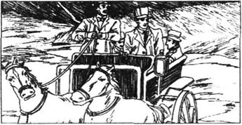
福尔摩斯来滑铁卢车站向我们道别。我们的朋友们告诉他，他们敢肯定，自从上次见面以来就再也没有人跟踪过他们了。亨利爵士的另一只鞋没有再冒出来过。福尔摩斯再次警告亨利爵士不要在夜间到沼地上去，也不要单独去什么地方。接着，福尔摩斯又和我查看了一下我随身带的那把左轮手枪。
旅行迅速而又愉快。有人在纽敦车站迎接我们，并用车把我们送到了巴斯克维尔庄园。我们驱车经过的乡间景色很美，可是我们能看得到远处的沼地上的那些绵长、黝黑和令人惊恐的沼地山丘。
在拐弯处，我们惊奇地看到一个骑在马上的士兵。他拿着一杆枪。
摩梯末医生向车夫询问了那个士兵在那里的缘由。
“一个危险的罪犯越狱逃跑了，先生。”他告诉我们，“他已经逃出来三天了。他叫塞尔登。就是在伦敦杀人的那个家伙。”
那个案子我记得很清楚。杀人手段非常残忍。我想到了在这片空旷、荒芜的沼地上活动着的这个凶手，愈来愈觉得周围的环境叫人不安。那些长着茂密树篱的、美丽的绿色田野已经被奔驰的马车甩在身后了，我们现在到了既寒冷又空旷的沼地上。这里的一切都灰蒙蒙、硬梆梆的，又很荒芜。坚硬的地面上竖立着粗糙的巨石。山顶很尖，在天空的衬托下好像一排排獠牙。正刮着冷飕飕的风，夜幕正在降临。我看到亨利爵士把大衣裹得更紧了些。
我们终于到了巴斯克维尔庄园的门口。大门那儿有一条漫长而又阴暗的路径通向房屋，道路的两旁是一些老树的暗影。我们在道路的尽头处看到一所像幽灵似地闪着微光的房屋。
“我能理解伯父为何在这儿时总是觉得要大难临头了。这并非一个友好的地方。”亨利爵士说道，讲话时声音都在颤抖着。
我们走近时，看到这是一栋结实而又幽暗、主入口处很大的建筑。建筑物的大部分都很古老了，墙壁上爬满了深绿色的常春藤；可是某些部分却是最近刚砌成的，材料是一些阴森的黑色石块。阴暗的光线从结实的窗口透出来。黑烟从主楼的一个高高的烟囱里喷了出来。
“欢迎欢迎，亨利爵爷！欢迎您到巴斯克维尔庄园来！”
总管白瑞摩和妻子正在主入口处的台阶上恭候着我们。他们走下来，把我们的行李箱提到了屋里。摩梯末医生离开我们回家去了。我们便进了大厅，那儿炉火正熊熊燃烧着。那是个华美的房间，又大又高。
“这正是我想象中的一个古老的家族的宅邸。”亨利爵士说道。
白瑞摩把我们带到了各自的房间。他是个高大、英俊的男子，留着满腮的黑胡子。在我们洗漱之后，他带我们去进餐。饭厅不太招人喜欢。需要再点些蜡烛把它照亮些。墙上是巴斯克维尔家族的先辈们的画像。它们消无声息地俯视着我们，丝毫没让我们感觉快活一些。
晚饭过后我们便各自回房去了。我在上床之前向窗外眺望了一番。强风在外面悲鸣，同时还使庄园前面的树木摇晃着。半轮月亮透过阴暗的、飞奔的云朵照到了荒凉、空旷的沼地上。
我无法入睡。后来，突然之间，我在深夜里清楚地听到了一个女人的哭泣声。那哭声是一个陷入深深的悲伤之中的人发出的。声音就在不远处，可以肯定就在这栋房子里。
8 The Stapletons of Pen House
8
The Stapletons of Pen House
The next morning was sunny, and we were much more cheerful.
I told Sir Henry about the crying I had heard. He rang the bell to call Barrymore, and asked him if he could explain the crying. Barrymore's face went white when he heard Sir Henry's question.
'There are only two women in the house, Sir Henry,' he answered. 'One is the maid, who sleeps on the other side of the house. The other is my wife, and she was certainly not crying.'
But he was telling a lie. I saw Mrs Barrymore after breakfast. The sun was full on her face, and it was clear she had been crying.
Why had Barrymore lied? What deep sadness had made his wife cry? There was a mystery surrounding this black-bearded, handsome man. Was it possible that Barrymore was in fact the man who had been watching Sir Henry in London? I decided I must check with the local post office that the telegram had really been put into Barrymore's own hands.
While Sir Henry worked at some papers, I walked to the post office. It was in the nearest village, which was called Grimpen. I spoke to the boy who had taken the telegram to the Hall.
'Did you give it to Mr Barrymore himself?' I asked.
'Well,' the boy said, 'he was working upon the roof, so I couldn't give it to him. I gave it to Mrs Barrymore, and she promised to give it to him at once.'
'Did you see Mr Barrymore?' I asked him.
'No,' said the boy, 'but why did his wife say he was upon the roof if he wasn't?'
It was hopeless to ask any more questions. It was clear that Holmes' cleverness with the telegram had not given us the proof we needed.
I was walking away from the post office when I heard someone running after me. A voice called me by name, and I turned. I expected to see Dr Mortimer, as I knew nobody else in the village. To my surprise it was a stranger. He was a small, thin man, between thirty and forty years old, with fair hair and no beard. He was carrying a butterfly net, and a box for putting butterflies in.
'I hope you will excuse me for introducing myself, Dr Watson,' he said as he came up to me.' My name is Stapleton. I was in Dr Mortimer's house and we saw you. He told me who you are. May I walk along with you? This path back to the Hall goes near my home, Pen House. Please come in and meet my sister, and spend an hour with us.'
I accepted Stapleton's invitation, and we walked together.
'I know that you are a close friend of Sherlock Holmes,' said Stapleton. 'Has Mr Holmes any ideas about Sir Charles' death?'
'I'm afraid I can't answer that question,' I said.
'Will Mr Holmes visit us himself?' he asked.
'He can't leave London at the moment,' I answered. I was rather surprised that he was asking me these questions.
We walked on. Stapleton told me that he and his sister had lived in Devonshire for only two years. They had moved there soon after Sir Charles had begun to live in Baskerville Hall. He also talked about the moor and how it interested him. He told me to look across the moor to a place which was a bright green colour.
'That is the Great Grimpen Marsh,' he said. 'If animals or men go into the marsh, they will sink into it and die. But I can find my way to the very centre of it. Look, there is another of those poor horses.'
Something brown was fighting to get out of the bright green of the marsh. Then a terrible cry came across the moor. The horse's head and neck disappeared under the green.
'It's gone,' Stapleton said. 'The marsh has caught and killed it. That often happens. It is an evil place, the Great Grimpen Marsh.'
'But you say you can go safely in and out of it?' I asked him.
'Yes, there are a few paths, and I have found them. The low hills you can see are like islands surrounded by the marsh. That is where I can find the unusual plants and butterflies. And that's why I found my way through the marsh.'
'I shall try my luck one day,' I said.
He looked at me in surprise. 'Please don't try,' he said. 'You would never return alive, and it would be my fault.'
'Listen,' I said. 'What is that?'
A long, low cry, very deep and very sad, came over the moor. It filled the whole air. Then it died away.
'What is it?' I asked, with a cold fear in my heart.
Stapleton had a strange look on his face. 'The people say it's the Hound of the Baskervilles, which is calling for something to hunt and kill. I've heard it once or twice before, but never so loud.'
'You are a man of science,' I said. 'You don't believe that, do you? Isn't there a natural explanation for the sound?'
'A marsh makes strange noises sometimes. It is the water and the wet ground moving.'
'But that was the voice of a living creature,' I said.
'Well, perhaps it was. There are some very unusual birds on the moors. It was most probably the cry of one of those.'
At that moment a small butterfly flew across the path in front of us. 'Excuse me, Dr Watson,' shouted Stapleton, and ran off to try to catch the butterfly. He ran quickly and followed the butterfly on to the marsh, but he knew exactly where he could go, and was not in any danger.
As I watched him, I heard the sound of steps behind me. I turned and saw a woman near me on the path. I was sure she was Miss Stapleton. She was very beautiful. She was dark and tall, with a lovely face. Before I could say anything, she said:
'Go back! Go straight back to London, immediately. I cannot tell you why, but please do what I ask you, and never come near the moor again. But my brother is coming. Not a word to him.'
Stapleton had caught the butterfly, and was walking back to us.
'Hello, my dear,' he said to his sister, but it seemed to me that his voice was not completely friendly. 'I see that you two have already introduced yourselves.'
'Yes,' she said. 'I was telling Sir Henry that it was rather late in the year for him to see the true beauty of the moor.'
'I am sorry,' I said. 'You have made a mistake. I'm not Sir Henry. I am a friend who is visiting him, and my name is Dr Watson.'
Miss Stapleton was clearly angry with herself. 'I'm sorry,' she said. 'Please forget what I said. But do come with us to our house.'
The house was lonely and rather grim. I wondered why the two of them had come to live so far away from anyone else. Stapleton seemed to know what I was thinking, and said: 'You may think this a lonely, strange place to live, but the moors are very interesting, and we enjoy it here. I owned a school in the north of England, but I had to close it. I miss the boys and girls, but there is plenty to do here, and we have good neighbours. I hope Sir Henry will become one of them. May I visit the Hall this afternoon to meet him, do you think?'
'I'm sure he will be very pleased to meet you,' I said. 'I must go back to the Hall now, and I shall tell him immediately.'
I said goodbye to the Stapletons, and continued on the path back to the Hall. I had been walking for only a few minutes when I was surprised to see Miss Stapleton sitting on a rock ahead of me. She was breathing quickly, and I realized she had run by a quicker way to get ahead of me.
'Dr Watson,' she said. 'I want to say sorry for the mistake I made. I thought you were Sir Henry. Please forget what I said. I did not mean you were in danger. Now I must go, or my brother will miss me.'
'I cannot forget your words, Miss Stapleton,' I said. 'If Sir Henry is in danger, I must tell him.'
'You know the story of the Hound? She asked me.
'Yes, but I do not believe it,' I replied.
'But I think it's true,' she said. 'Please persuade Sir Henry to leave this place. So many of his family have died here mysteriously. He must not put his life in danger by staying here.'
'Sir Henry won't leave this place without a real reason,' I said.
'I can't give you a real reason. I don't know anything for certain.'
'One more question, Miss Stapleton,' I said. 'The story of the Hound is well known. Why didn't you want your brother to hear what you said?'
'My brother wants the head of the Baskerville family to live in the Hall,' she said. 'He wants Sir Henry to continue the good work that Sir Charles began. He doesn't want Sir Henry to go and live in another place. So he doesn't want me to talk about the Hound. I must go now, or my brother will guess I have been speaking to you. Goodbye!'
She turned and went back towards her house, and I walked on to Baskerville Hall.
cheerful adj. happy and contented. 愉快的，高兴的。
maid n. woman servant. 女仆。
roof n. top covering of a building, tent, bus, car, etc. （建筑物、帐篷、公共汽车、车辆之）顶。
when adv. at that time. 其时。
call sb. by name 叫某人的名字。
fair adj. light in colour. （指皮肤、头发）淡色的。
marsh n. low-lying, wet land. 沼泽。
centre n. middle part or point. 中心，中央。
island n. piece of land surrounded by water. 岛屿。
butterfly n. 蝴蝶。
luck n. chance. 运气。
fault n. mistake. 错误。
hunt v. go after, search for. 搜寻；追捕；狩猎。
step n. moving the foot. 步。
miss v. realize, learn, feel regret at the absence of. 发现遗失；惋惜；怀念。
continue v. go on. 继续进行。
realize v. 意识到；实现。
or conj. otherwise, if not. 否则，不然。
mysteriously adv. 神秘地。
know... for certain be sure that.... 对……确信无疑。
toward prep. approaching, in the direction of. 朝……的方向。
8 格林盆宅邸的斯台普顿兄妹
8 格林盆宅邸的斯台普顿兄妹
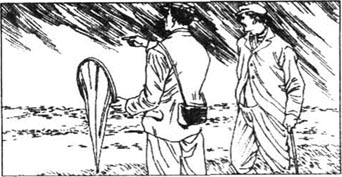
第二天早上阳光明媚，我们也就觉得心情舒畅些了。
我对亨利爵士讲述了我所听到的哭声这件事。他摇铃把白瑞摩叫来，问他可否解释哭声的事。听到亨利爵士的问题时白瑞摩变得脸色煞白。
“亨利爵爷，这个房子里只有两个女人，”他回答道。“一位是女仆，她睡在对面厢房里。另一位就是我的妻子，她当然没有哭了。”
但是他在撒谎。早饭后我见到了白瑞摩夫人。阳光照在她的脸上，清楚地表明她曾哭过。
白瑞摩为何要撒谎呢？是什么样的至深的悲伤使他的妻子哭泣呢？这个蓄着黑须的英俊男人周围萦绕着一团疑云。白瑞摩有可能其实就是在伦敦监视亨利爵士的那个人吗？我决定与当地邮局核实一番，看看那封电报是否送到了白瑞摩手中。
在亨利爵士处理一些文件时，我便步行去了邮局。它在距此最近的一个名叫格林盆的村庄里。我向把电报投送到庄园的那个男孩问了话。
“你把它交给白瑞摩先生本人了吗？”我问道。
“啊，”小男孩说道，“他当时正在屋顶上忙乎，所以我便把它交给了白瑞摩太太，她还答应马上就把它交给他。”
“你看到白瑞摩先生了吗？”我问他。
“没看到，”男孩说，“要是他不在屋顶上他妻子干嘛要说他在呢？”
再继续问下去也是无望的了。很清楚，福尔摩斯在电报上所施的高招并未给我们提供所需的证据。
我从邮局出来正往前走着，这时听到身后有人在跑。有人叫我的名字，我便转过身去。因为我在村里并不认识别人，所以我料想着看到的应是摩梯末医生。令我感到吃惊的是，那是位陌生人。他是个矮小瘦削的男人，大约三四十岁年纪，长着淡黄色头发，没有蓄胡子。他拿着一个捕蝶网和一个用来装蝴蝶的盒子。
“我希望您会原谅我的冒昧，华生医生，”他走到我跟前对我说道。“我叫斯台普顿。当我在摩梯末医生家拜访他时，我们看见了您。他就告诉了我您是谁。我可以与您同行吗？回庄园的这条路正在格林盆宅邸即我的家附近。请进来见见我妹妹，并与我们待一会儿。”
我接受了斯台普顿的邀请，于是我们便同步而行。
“我知道您是夏洛克·福尔摩斯的亲密的朋友。”斯台普顿讲道。“福尔摩斯先生对查尔斯爵士的死有些看法了吗？”
“我恐怕不能回答这个问题。”我说道。
“福尔摩斯先生是否将亲自来这儿呢？”他问道。
“目前他还不能离开伦敦。”我回答道。我对他问我这些问题感到很惊讶。
我们继续前行。斯台普顿告诉我说，他和他妹妹在德文郡住了两年光景。查尔斯爵士刚住进巴斯克维尔庄园没有多久，他们便搬到那儿了。他还谈到了沼地及他对沼地的兴趣。他让我看沼地的尽头一处呈嫩绿色的地方。
“那就是格林盆大泥潭，”他说道。“如果人畜踏进这片泥潭的话，就会陷进去送命的。但是我却能找到通往泥潭中心的道路。瞧，又一匹倒霉的马儿陷进去了。”
有个棕色的东西正在竭力挣扎着，想要从那片嫩绿色的泥潭中挣脱出来。接着，从沼地传来一声可怕的吼声。马的头和颈消失在那片绿色之下了。
“它完了，”斯台普顿道。“泥潭已把它给吞没了。这种情形经常发生。格林盆大泥潭可真是个邪恶的地方。”
“但是您不是说您能安全地进出其中吗？”我向他问道。
“是啊，其中有几条道，我都找到了。您所能看到的那些小山就像是被泥潭环绕着的小岛一样。那便是我能觅到稀有植物和蝴蝶的处所。而且那便是我为何能在泥潭中找到了路的原因。”
“哪天我也去碰碰运气，”我说道。
他带着惊讶的神情看着我。“千万别去试，”他说道。“您是不会活着回来的。那样就是我的错了。”
“听听，”我说道。“是什么东西？”
一声又低又长、非常深沉、相当悲惨的叫声传遍了整个沼地。它响彻空中，接着便消逝了。
“这是什么？”我问道，心里害怕得直打冷战。
斯台普顿的脸上带着一种奇怪的神色。“人们说这是巴斯克维尔猎犬，它正在召唤猎物。我以前曾听到过一两次，可是声音从没有这么大过。”
“您是位科学工作者，”我说道。“谅您也不会相信这些，是吧？难道对这种声音就没有一个符合自然规律的解释吗？”
“泥潭有时会发出奇怪的声音。这是由于水和稀泥在移动。”
“可是那是动物发出的声音呀。”
“啊，也许是。沼地上有些稀有鸟类。极有可能是其中某一种的叫声。”
那时，一只小蝴蝶从我们面前飞过。“对不起，华生医生。”斯台普顿高喊着，同时跑开捉蝴蝶去了。他飞快地跑着，随着那只蝴蝶到了泥潭中，但是他知道自己的脚该落在哪儿，因此便没有什么危险。
正当我注视着他的时候，我听到了身后的脚步声。我转过身去，看到路上离我不远处有一个女子。我敢肯定她便是斯台普顿小姐。她人很漂亮，肤色很深，身材纤长。我还没来得及开口说话，她便说道：
“回去吧！马上回到伦敦去。我不能告诉您缘由，可是请照我说的去做，千万不要再靠近沼地了。但是，我哥哥来了。对他什么也别说。”
斯台普顿已抓到了那只蝴蝶，正向我们这边走回来。
“你好，我亲爱的，”他对他妹妹说道，可是就我看来他的语气并不怎么友好。“我看得出来你们俩已经做过自我介绍了。”
“是啊，”她说道。“我正和亨利爵士说，他来得太晚了，已经看不到沼地的真正美丽之处了。”
“我很抱歉，”我说道。“您弄错了。我不是亨利爵士。我是来拜访他的一位朋友，我是华生医生。”
斯台普顿小姐显然对自己很懊恼。“我很抱歉，”她说道。“请忘掉我所说的话。可是，您一定得和我们一道去屋里坐坐。”
这所房屋既偏僻又相当阴森。我纳闷他们俩为何到这种与他人相隔甚远的地方来居住。斯台普顿似乎知道我在想些什么，于是便说道：“您可能认为这儿要住人的话偏僻和奇特了些，可是这些沼地相当有趣，我们在这儿过得也很快活。我曾在英格兰北部办过一所学校，但是后来被迫关闭了。我很怀念那些孩子们，但在此处有许多事情都有待去做，而且我们还有很好的邻居们。我希望亨利爵士也会成为其中的一员。您认为我今天下午可否冒昧地去庄园拜访一下他呢？”
“我敢说他一定会高兴见到您的，”我说道。“我现在得回庄园去了，我还打算立刻告诉他这个消息。”
我与斯台普顿兄妹道了别，继续沿着回庄园的那条路向前走。没走几分钟便惊奇地看到斯台普顿小姐正坐在我前边的一块岩石上。她呼吸急促，我意识到她是为了赶在我前面而抄近路跑来的。
“华生医生，”她说道。“因我所犯的错误，我想向您致以深深的歉意。我竟把您当成亨利爵士了。请忘掉我说过的话。我当时并不是说您有危险。现在我得走了，否则的话我哥哥就要挂念我了。”
“我不会忘记您的话语的，斯台普顿小姐，”我说道。“如果亨利爵士有危险的话，那我就得告诉他。”
“您知道那个猎犬的故事吧？”她对我问道。
“知道，但是我并不相信它。”我应答道。
“可是我认为它是真实的，”她说道。“请劝说亨利爵士离开这个地方。他家族中的那么多人都在这儿神秘地死去了。他不应该冒生命危险待在这儿。”
“没有真正的理由的话亨利爵士是不会离开此地的。”我说道。
“我给不出真正的理由。我并非确切地知道某些事情。”
“还有一个问题，斯台普顿小姐，”我说道。“猎犬的故事是众所周知的。您为何不愿让您哥哥听到您所说的话呢？”
“我哥哥想让巴斯克维尔家族的主人在这个庄园里住下来，”她说道。“他想叫亨利爵士把查尔斯爵士开创的慈善工作继续下去。他不想让亨利爵士去别处居住。因此他不想让我谈论猎犬的事情。我现在得走了，否则的话我哥哥就会猜到我是在同您谈话了。再见！”
她转身往回走去，我便继续向巴斯克维尔庄园走去。
9 The Escaped Prisoner
9
The Escaped Prisoner
Mr Stapleton came to the Hall and met Sir Henry that same afternoon. The next morning he took us to the place where the evil Sir Hugo died. Then we had lunch at Pen House. Sir Henry clearly thought Miss Stapleton was very beautiful. His eyes followed her everywhere. He liked her very much, and I was sure that she felt the same about him. He spoke about her again and again as we walked home. After the first meeting, we met the Stapletons almost every day.
After a short time it was clear that Sir Henry had fallen deeply in love with the beautiful Miss Stapleton. At first I thought that Stapleton would be very pleased if his sister married Sir Henry. However, I soon realized that he did not want their friendship to grow into love. He did everything he could to make sure that they were never alone. On one or two occasions they did manage to meet alone, but Stapleton followed them and was not pleased to see them together.
I soon met another neighbour of Sir Henry's. His name was Mr Frankland, and he lived about four miles to the south of the Hall. He was an old man with a red face and white hair. He had two hobbies. The first was arguing. He argued with everybody. The second hobby was studying the stars. For this he had a very big telescope. For several days he had been watching the moor through the telescope. He wanted to find Selden, the escaped murderer. Nobody had seen the prisoner for a fortnight, and we all thought that he had probably left the moor.
A few nights later I was woken by a noise at about two in the morning. I heard someone walking softly outside my door. I got up, opened the door and looked out. I saw Barrymore moving carefully and quietly away from me. I followed him, as quietly as I could. He went into one of the empty bedrooms and left the door open. I went quietly up to the door and looked inside.
Barrymore was standing at the window. He was holding a light in his hand and looking out onto the moor. He stood without moving for a few minutes and then he put out the light.
I went quickly back to my room. A few minutes later I heard Barrymore go softly by.
The next morning I told Sir Henry what I had seen.
'We must follow him and find out what he is doing,' said Sir Henry. 'He won't hear us if we move carefully.'
That night we sat in Sir Henry's room and waited. At about three o'clock in the morning we heard the sound of footsteps outside the bedroom. We looked out and saw Barrymore. We followed him as quietly as we could. He went into the same room as before. We reached the door and looked in. There was Barrymore, with the light in his hand, looking out across the moor, exactly as I had seen him on the night before.
Sir Henry walked into the room and said: 'What are you doing here, Barrymore?'
Barrymore turned round quickly, surprise and horror on his face.
'Nothing, sir,' he said. The shadows on the wall from his light were jumping up and down as his hand shook. 'It was the window, sir. I go round at night to see that they are closed, and this one wasn't shut.'
'Come now, Barrymore,' said Sir Henry. 'No lies. What were you doing with that light? You were holding it up to the window.'
I suddenly had an idea. 'I think he was sending a message,' I said. 'Let's see if there's an answer from someone on the moor.'
I held the light up to the window, and looked out into the darkness. Suddenly a light answered from the moor.
'There it is,' I cried. I waved my light backwards and forwards across the window. The light on the moor answered by moving in the same way.
'Now, Barrymore, who is your friend on the moor? What's going on?'
'That's my business,' said Barrymore, 'I won't tell you.'
'Are you making some criminal plan against me?' Sir Henry said.
'No, it's nothing against you, sir,' said a voice behind us. It was Mrs Barrymore. She had followed us and was standing at the door. 'He's doing it for me. My unhappy brother is cold and hungry on the moor. We cannot let him die. Our light is to tell him that food is ready for him. His light shows us where to take it.'
'Then your brother is...' began Sir Henry.
'The escaped prisoner, sir. Selden, the murderer. He is my younger brother. He has done evil things, but to me he is still the little boy I loved and cared for. I had to help him. Everything my husband has done has been for me. Please don't take his job from him. It's not his fault.'
Sir Henry turned to Barrymore and said:
'I cannot blame you for helping your wife. Go to bed, and we'll talk about this in the morning.'
The Barrymores left us.
'The murderer is waiting out there by that light,' said Sir Henry. 'He's a danger to everyone. I'm going to catch him. If you want to come with me, Watson, fetch your revolver and let's go.'
We left the Hall immediately.
'We must surprise him and catch him.' said Sir Henry. 'He's a dangerous man. Now, Watson, what would Holmes say about this? Do you remember what the old papers said? They said the Devil does his work when the world is dark.'
Just as he spoke there came a strange cry from across the moor. It was the same cry I had heard when I was with Stapleton on the edge of the Great Grimpen Marsh.
'What is that noise?' asked Sir Henry. He stopped and put his hand on my arm to hold me back.
'I've heard it before,' I said. 'Stapleton says it's the cry of a bird.'
'Watson,' said Sir Henry, his voice shaking, 'it is the cry of a hound. What do the local people say it is?'
'They say it is the cry of the Hound of the Baskervilles,' I replied.
'Can there possibly be some truth in the story?' said Sir Henry. 'Am I really in danger from such an evil thing? I think I am as brave as most men, but that sound froze my blood. But we have come out to catch that prisoner, and the Devil himself will not make me turn back.'
It was difficult to cross the moor in the dark, but at last we reached the light. It was standing on a rock. Suddenly an evil face, more like an animal than a man, looked at us from behind the rock. The escaped prisoner saw us and screamed as he turned to run.
Sir Henry and I were both good runners and very healthy men, but we soon realized that we had no chance of catching Selden. He knew the way, and was running for his life. Soon we had lost him in the dark, so we stopped and sat down, breathing heavily, to rest.
At that moment a very strange thing happened. The moon was low upon our right, and in its light we could see the top of a hill. On that hill, with the moon behind him, stood a tall, thin man. He was standing perfectly still. He was watching us.
It was not Selden, who had been running away from that hill. This man was much taller. With a cry of surprise I turned to Sir Henry. As I turned, the man disappeared.
I wanted to go across to the hill and search for him, but we were tired and I remembered that Sir Henry might be in danger. So we went back to Baskerville Hall.
Who was the tall man I had seen standing against the moon? Was he an enemy, or a friend who was watching over us?
I wished more and more that Holmes could leave London and come to Baskerville Hall. I wrote to him every few days and gave him the details of everything that happened and everyone I met.
everywhere adv. in, at, to, every place. 各处，到处。
fall in love with sb. 爱上某人。
occasion n. time at which a particular event takes place. 时机。
hobby n. occupation for one's spare time. 嗜好，业余爱好。
telescope n. tube-like instrument with lenses for making distant objects appear nearer and larger. 望远镜。
fortnight n. period of two weeks. 两星期。
put out (the light) 熄灭（灯火）。
softly adv. 轻轻地。
backwards adv. towards the back or the starting point. 向后，背后。
forwards adv. directed towards the front. 向前。
against prep. 表示相反，与某人作对。
by prep. near, beside. 靠近，在……旁边。
immediately adv. at once. 立刻，马上。
edge n. border, outer limit or boundary of a (flat) surface. 边缘。
local adj. of, special to, a place or district. 本地的，当地的。
turn back 后退；改变主意。
run for one's life 逃命。
perfectly adv. completely, quite. 十分地，完全地。
against prep. in contrast to. 表示衬托、相映或对照。
watch over guard, protect. 照看，保护。
9 出逃的囚犯
9 出逃的囚犯
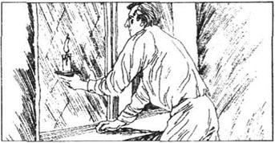
斯台普顿先生于当日下午前来庄园拜访亨利爵士。第二天早晨，他带着我们去看了那个罪恶的雨果出事的地点。然后，我们在格林盆宅邸吃了午饭。亨利爵士显然认为斯台普顿小姐很漂亮。他的目光一直追随着她。他非常喜欢她，我还敢肯定她对他也有此同感。在我们回家的路上，他屡次谈到了她。自从第一次见面之后，我们便几乎每天都能见到斯台普顿兄妹。
不久之后，亨利爵士深深地爱上了漂亮的斯台普顿小姐，这点已相当明显了。我起初以为斯台普顿会为他的妹妹与亨利爵士的结合而大为高兴的。然而，我不久之后便意识到他并不想让他们之间的友谊发展为爱情。他想尽办法避免他俩有独处的机会。他们曾有一两次想方设法单独见面了，可是斯台普顿跟踪了他们，见他们在一起时并不高兴。
我很快又遇到了亨利爵士的另一位邻居。他是福兰克兰先生，住在庄园以南约四英里远的地方。他是一位面色红润、头发银白的老人。他有两个癖好。其一是争辩。他会和所有的人争论一番。其二是研究星相。他为此买了个很大的望远镜。数天来他一直在用这架望远镜注视着沼地。他希望能发现塞尔登，那个逃犯。两周以来没人见过那个囚犯，大家都以为他可能已经离开沼地了。
几天之后的一个晚上，我在凌晨两点钟左右时被响声弄醒了。我听见有人在我的门外轻声走动。我爬起身来，打开房门并向外张望。我看到白瑞摩正小心谨慎而又悄无声息地从我这边走开。我尽量无声无息地跟着他。他走进了一间没人住的卧室并把房门就那么开着。我悄悄地走到房门跟前并向里边瞧去。
白瑞摩正站在窗户旁。他手里拿着蜡烛，透过窗户盯着外面的沼地。他一动不动地站了几分钟，然后弄灭了蜡烛。
我赶快回到了我的房中。几分钟之后我听到白瑞摩轻轻地走过我的门口。
第二天早晨我将我所看到的情景告给了亨利爵士。
“我们得跟踪他并看看他在干些什么，”亨利爵士说道。“要是我们小心走动的话他是不会听见我们的。”
那天晚上我们坐在亨利爵士的房间里等着。大约在凌晨3点钟时，我们听到了卧室外面的脚步声。我们向外望去，看到了白瑞摩。我们尽量无声无息地跟踪着他。他同前一次一样，又到了那个房间里。我们来到房门旁边向里望去。白瑞摩手里拿着蜡烛，正望着窗外的沼地。这和我前一天夜里看到的情景一模一样。
亨利爵士走进屋里并且说道：“你在这里干什么呢，白瑞摩？”
白瑞摩赶快转过身来，脸上露出又惊又怕的神色。
“没干什么，爵爷，”他说道。由于他的手抖动着，墙壁上烛光里的人影也不停地上下跳动着。“是由于窗户，爵爷。我在夜间巡视是想看看窗户是否都已关好了，而这个窗户并没关好。”
“得了吧，白瑞摩，”亨利爵士说道。“不要撒谎。你用那个蜡烛干什么？你刚才可是把它举在窗口了。”
我突然灵机一动。“我想他那时是在传送信号，”我说道。“我们来看一下沼地上是否有人回答信号。”
我把蜡烛高举向窗口并注视着漆黑的外面。突然之间，一个光点从沼地那边回应着。
“就在那儿。”我喊道。我在窗户边前后晃动着蜡烛。沼地上的灯光也以同样的方式移动着以回应我们。
“我说，白瑞摩，沼地上的你的那个朋友是谁？发生着什么事情？”
“那是我个人的事，”白瑞摩说道。“我不会告诉您的。”
“你是在搞什么阴谋加害我吗？”亨利爵士说道。
“不，爵爷，不是害您呀！”从我们身后传来了一个声音。此人是白瑞摩太太。她一直跟踪着我们，现在正站在门口。“是为了我他才这么干的。我那不幸的弟弟正在沼地上忍饥受冻。我们不能让他死。这烛光是告诉他食物已经给他准备好了。他那边的灯光则向我们表明我们该把食物送到什么地点。”
“那么说，你的弟弟是……”亨利爵士开口道。
“是那个潜逃的罪犯，爵爷。塞尔登，那个杀人凶手。他是我弟弟，他干了许多坏事。但是对我来讲他依旧是我曾爱护过的那个小男孩。我得帮他。我丈夫所做的一切都是为了我。请别把他辞掉。这不是他的过错。”
亨利爵士转向白瑞摩，并说道：
“你帮你太太的忙，我不能为此怪你。去上床睡觉吧，我们明早再谈这件事。”
白瑞摩夫妇从我们这儿走开了。
“那个杀人凶手正在外边的那个亮光旁等着呢，”亨利爵士说道。“他对大家都是个危险。我要去抓住他。如果您想和我一道去的话，华生，那就去取您的左轮手枪，然后咱们就去吧。”
我们马上离开了庄园。
“我们必须出其不意地将其抓获，”亨利爵士说道。“他是个危险人物。我说，华生，这样干福尔摩斯会说什么呢？您还记得那份古老的手稿怎么说的吗？说恶魔兴于黑夜。”
他正说话的当中，沼地上传来了一声奇怪的叫声。就是我在格林盆大泥潭边缘与斯台普顿在一起时听到的那种声音。
“那是什么声音？”亨利爵士问道。他停下了脚步，抓住我的胳膊把我往回拽。
“我以前听到过这种声音，”我说道。“斯台普顿说这是一种鸟的叫声。”
“华生，”亨利爵士说道，他的声音这时颤抖着。“这是猎犬的叫声。当地人把它叫什么呢？”
“他们说这是巴斯克维尔猎犬的叫声。”我回答道。
“难道那个故事中真有几分真实的成分吗？”亨利爵士说道。“我真的正受到那个邪恶的东西的威胁吗？我认为我与大多数人一样勇敢，可是这个声音使我毛骨悚然。不过，我们是来抓罪犯的，恶魔本人也不能把我吓回头。”
要在黑暗之中走过沼地是件难事，但是我们最终还是到达了光亮所在之处。蜡烛被搁在了一块岩石之上。突然之间，一张邪恶的、与其说是人不如说是野兽般的面孔从岩石后面探出来张望着我们。这个逃犯看到我们便尖叫着转身逃开了。
我和亨利爵士都是飞毛腿，身体又很健康，可是我们很快便意识到已没机会抓获塞尔登了。他既识路又在逃命。不久之后我们便在黑暗之中看不到他了，因此我们便停下脚步，喘着粗气坐下来休息一会儿。
就在那时，发生了一件非常奇怪的事情。月亮低悬在我们右侧的空中，我们在月光下看到一座小山的尖顶。在山顶上站着一个又高又瘦的男子，他背后的天幕上挂着一轮月亮。他一动不动地站着。他正注视着我们。
此人并非塞尔登，塞尔登已从那座山的旁边跑远了。此人要比他高得多。我惊叫一声，向亨利爵士转过身去。就在我转身时此人便消失了。
我本想去小山那边搜寻一番的，但是我们已精疲力尽了，我还想到亨利爵士可能有危险。于是我们便回巴斯克维尔庄园去了。
我所看到的这位背对月亮而站立的高个男人是谁？他是敌人还是密切注视着我们的朋友？
我越来越希望福尔摩斯能够从伦敦脱身到巴斯克维尔庄园来。每隔不几天我便给他写封信，详尽地告诉他有关这儿所发生的每件事情以及我所见到的每位人士的情况。
10 The Letter
10
The Letter
The following day was dull and foggy. The Hall was surrounded by heavy, low clouds, which opened now and then to show the grim, cold moor and its wet, grey rocks. The weather made us miserable. It was difficult to be cheerful when we felt danger all around us. I thought of Sir Charles' death, and the awful sound of the hound, which I had now heard twice. Holmes did not believe that there was a supernatural hound. But facts are facts, and I had heard a hound. Was there a huge hound living on the moor? If so, where could it hide? Where did it get its food? Why was it never seen by day? It was almost as difficult to accept a natural explanation as a supernatural explanation.
That morning Sir Henry and Barrymore argued about Selden, the escaped prisoner. Barrymore said that it was wrong to try to catch Selden.
'But the man is dangerous,' said Sir Henry. 'He'll do anything. Nobody is safe until he is in prison again. We must tell the police.'
'I promise he won't break into any house,' said Barrymore, 'and he won't cause any trouble. In a few days he will catch a boat for South America. Please don't tell the police about him. If you tell the police, my wife and I will be in serious trouble.'
'What do you say, Watson?' asked Sir Henry, turning to me.
'I don't think he will break into houses, or cause trouble. If he did, the police would know where to look for him and would catch him. He's not a stupid man.'
'I hope you're right,' said Sir Henry. I'm sure we're breaking the law. But I don't want to get Barrymore and his wife into trouble, so I shall not tell the police. I shall leave Selden in peace.'
Barrymore could not find the words to thank Sir Henry enough. Then he said: 'You have been so kind to us that I want to do something for you in return. I have never told anyone else. I know something more about poor Sir Charles' death.'
Sir Henry and I jumped up at once.
'Do you know how he died?' Sir Henry asked.
'No, sir, I don't know that, but I know why he was waiting at the gate. He was going to meet a woman.'
'Sir Charles was meeting a woman? Who was the woman?'
'I don't know her name,' Barrymore said, 'but it begins with L. L.'
'How do you know this, Barrymore?' I asked.
'Well, Sir Charles got a letter on the morning of the day he died. It was from Newtown, and the address was in a woman's writing. I forgot all about it, but some time after Sir Charles died my wife was cleaning the fireplace in his study. She found a Letter. Most of it was burned, but the bottom of one page was not burned. On it was written: "Please, please, burn this letter, and be at the gate by ten o'clock. L. L." The paper fell into pieces as my wife went to move it. We don't know who L. L. is, but if you could find out, you might learn more about Sir Charles' death. We haven't told anyone else. We felt it would not be good for poor, kind Sir Charles. But we thought we ought to tell you, Sir Henry.'
The Barrymores left us and Sir Henry turned to me. 'If we can find L. L., the mystery may be at an end,' he said. 'What do you think we should do, Watson?'
'I must write to Holmes at once,' I said, and I went straight to my room and wrote a letter to Holmes, which gave him all the details of Barrymore's story.
On the following day heavy rain fell without stopping. I put on my coat and went for a long walk on the moor. I thought of Selden out on the cold moor in this weather. And I thought of the other man, the mysterious watcher.
As I walked, Dr Mortimer drove past me. He stopped and said he would take me back to the Hall.
'I expect you know almost everybody living near here,' I said. 'Do you know a woman whose names begin with the letters L. L.?'
Dr Mortimer thought for a minute, and then he said: 'Yes, Mrs Laura Lyons. She lives in Newtown.'
'Who is she?' I asked.
'She's Mr Frankland's daughter.'
'What, old Frankland who has the large telescope?'
'Yes,' said Dr Mortimer. 'Laura married a painter called Lyons who came to paint pictures of the moor. But he was cruel to her, and after a while he left her. Her father will not speak to her, because she married against his wishes. So her husband and her father have made her life very unhappy.'
'How does she live?' I asked.
'Several people who knew her sad story have helped her. Stapleton and Sir Charles gave her some money. I gave a little myself. She used the money to start a typewriting business.'
Dr Mortimer wanted to know why I was asking about Mrs Lyons. However, I preferred to keep the reason secret, and we talked about other things for the rest of the journey.
Only one other thing of interest happened that day. In the evening after dinner I had a few words with Barrymore alone. I asked him whether Selden had left the country.
'I don't know, sir,' Barrymore replied.' I hope he has gone. But I've not heard anything of him since I last left food and some clothes for him, and that was three days ago.'
'Did you see him then?'
'No, sir, but the food and clothes were gone when I next went that way,' Barrymore told me.
'Then Selden was certainly there?' I asked.
'I think so, sir, unless the other man took everything.'
I sat very still and looked hard at Barrymore. 'You know there is another man, then? Have you seen him?'
'No, sir, but Selden told me about him a week or more ago. He is hiding from someone, too, but he is not an escaped prisoner. I don't like it, sir. Something evil is going to happen, I'm sure. Sir Henry would be much safer in London.'
'Did Selden tell you anything more about the other man?' I asked.
'He looked like a gentleman. He was living in one of the old stone huts on the moor. A boy works for him and brings him all the food and things he needs. That's all Selden told me.'
I thanked him, and he left me. I went to the window and looked out at the rain and the clouds. It was a wild night. I knew the huts Barrymore had spoken about. There were many of them on the moor. They had been built many hundreds of years ago by the people who lived on the moor. They would not keep a man warm and dry in bad weather. Selden could not choose to live anywhere else, but why did the other man live in such conditions?
I sat and thought what I should do next. I decided I must try to find the man who had been watching us. Was he the enemy who had been following us since the very beginning in London? If he was, and I could catch him, perhaps our difficulties would be at an end.
I also decided to hunt the man on my own. Sir Henry was still shaken by the terrible cry we had heard on the moor. I did not want to add to his troubles or to lead him into more danger.
dull adj. not clear or bright. 晦暗的；not exciting. 枯燥的。
foggy adj. dense, not clear because of fog. 有雾的，雾色朦胧的。
miserable adj. wretched, very unhappy. 可怜的，愁苦的。
by day during daylight. 白天里。
break into 破门而入。
leave sb. in peace 不打扰某人。
in return 作为报答。
fireplace n. grate or hearth for a fire in a room, usually of brick or stone in the wall. 壁炉。
study n. 书房。
at an end 终结，到头。
straight adv. directly, without turning aside or delay. 直接。
against one's wishes 违背某人意愿。
husband n. man to whom a woman is married. 丈夫。
typewrite v. 用打字机打出。
prefer v. choose rather, like better. 较喜欢，宁愿。
secret adj. not open. 秘密的；n. 秘密，秘诀。
journey n. distance travelled (esp. on land). 旅行（尤指至遥远地方的陆路之行）。
hut n. 简陋的小屋。
on one's own by oneself. 独自。
shake (shook, shaken) v. tremble. 震惊，颤抖。
lead sb. into danger 给某人招致危险。
10 一封信件
10 一封信件
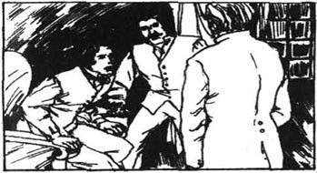
次日阴晦多雾。庄园被低沉的浓雾包围起来。它们时而散开，露出晦暗而又寒冷的沼地及其湿漉漉、灰蒙蒙的岩石。天气使得我们心情沉重。处于危险之中时很难高兴起来。我想起了查尔斯爵士的死，还有猎犬发出的可怕的吼声，这种声音我已听到过两次了。福尔摩斯不相信世上会有一只超乎自然的猎犬存在。但是，事实总归是事实，我本人也听到了猎犬的声音。沼地上确有一只巨大的猎犬吗？假如真有的话，那它藏在什么地方呢？它到哪里去找吃的呢？白天为何没人看到过它呢？合乎自然的解释几乎和超乎自然的解释一样难以叫人接受。
那天早晨，亨利爵士与白瑞摩就那个逃犯塞尔登而争辩了起来。白瑞摩说去抓塞尔登是件错事。
“可是此人很危险，”亨利说道。“他什么事情都干得出来。直到他被重新关押起来，大家才会获得安全。我们必须报告警方。”
“我保证他不会闯进任何人家，”白瑞摩说道，“他也不会惹任何麻烦。几天之后他将乘船去南美。请别向警方告发他。您若报告了警方，我和我妻子就会有很大的麻烦。”
“华生，您有何高见？”亨利爵士转身向我问道。
“我认为他不会闯进任何人家或惹任何麻烦。否则的话，警方就会知道该在何处搜寻并抓获他了。他并不是一个蠢货。”
“我希望您是对的，”亨利爵士说道。“我敢肯定我们现在是在犯法。可是我不想使白瑞摩及其太太陷于困境之中，所以我是不会向警方告发的。我将不再过问塞尔登的事情了。”
白瑞摩找不出足以用来感谢亨利爵士的话语。接着他说道：“您对我们真是太好了，我想因此报答您。有件事我从未对旁人讲过。关于不幸的查尔斯爵爷的死我还知道些别的情况。”
我和亨利爵士立刻跳起身来。
“你知道他是怎么死的吗？”亨利爵士问道。
“不知道，爵爷，那个我可不知道；不过我知道他站在门口等人的缘由。他是为了和一位女士会面。”
“查尔斯爵士要和一位女士会面？那个女人是谁？”
“我不知道她的姓名，”白瑞摩说道，“但是它是以L. L. 开头的。”
“你是如何知道这个的，白瑞摩？”我问道。
“啊，查尔斯爵爷在他去世的那天早上收到了一封来信。这封信发自纽顿，地址还是女人的笔迹。我已把这些忘得一干二净了。但在查尔斯爵爷死去之后过了一段时间，我妻子去清理他书房内的壁炉。她发现了一封信。大部分信已烧焦了，只有一页信纸的底端还未被烧尽。上面写着：‘请您千万将此信烧掉，并在10点钟时到栅门那里去。L. L.’我妻子伸手去碰它时它就变成碎片了。我们不知道谁是L. L.，但是您若能找到那位女士的话，您就会多知道些关于查尔斯爵爷的死的情况了。我们从未把它告诉给别人。我们认为把这件事兜出来对我们的那位可怜的、好心的查尔斯爵爷并没有什么好处。但是我们已觉得应该告诉给您，亨利爵爷。”
白瑞摩夫妇离开了我们，亨利爵士向我转过身来。“要是我们能够查明L. L. 这个人，整个疑团就真相大白了。”他说道，“您认为我们应该干什么呢，华生？”
“我必须马上给福尔摩斯写信，”我说道，于是便径自到房间里给福尔摩斯写信去了。那封信给他提供了白瑞摩所讲的故事的种种细节。
第二天大雨终日。我穿上外衣，到沼地上长途散步去了。我想到了在这种天气里身处寒冷的沼地的塞尔登。我还想到了另一个人，那个神秘的监视者。
我正走时，摩梯末医生从我身旁驱车而过。他停了下来，还说他将把我送回庄园。
“我觉得您认识住在这儿附近的几乎每个人。”我说道，“您认识姓名以L. L. 字母开头的女士吗？”
摩梯末医生思考了片刻，然后说道：“认识，有一位劳拉·莱昂丝夫人。她住在纽顿。”
“她是谁啊？”我问道。
“她是弗兰克兰先生的女儿。”
“什么？就是那个有个大望远镜的老弗兰克兰吗？”
“是的，”摩梯末医生讲道。“劳拉曾和一位名叫莱昂丝的、到沼地写生的画家结了婚。但是他对她很残暴，不日之后还离开了她。她父亲坚决和她不讲话了，因为她当时是违背父亲的意愿而结的婚。因此，她的丈夫和她的父亲已使她的生活非常不幸福。”
“那她怎么生活呢？”我问道。
“知晓她那悲惨故事的几个人帮助着她。斯台普顿与查尔斯爵士给过她一些钱。我本人也给过一点。她用这些钱开始干打字的营生。”
摩梯末医生想知道我问这些问题的目的何在。然而，我还是想把其中的原因保密起来，我们在余下的旅途中便谈了些别的事情。
那一天只发生了另一件有趣的事情。晚上，晚饭过后我私下与白瑞摩聊了几句。我问他塞尔登是否已经离开了这个国家。
“我不知道，先生，”白瑞摩应答道。“我希望他已走了。但是，自从上次给他送食物和衣物以来，我便再也没听到过关于他的情况。那已是三天之前的事了。”
“那一次你看到他了吗？”
“没有，先生，但是当我再到那里去时，食物和衣物已经不见了。”白瑞摩告诉我。
“那么说，他一定还在那里吗？”我问道。
“我是这么认为的，先生，除非是另外那个人拿走了一切东西。”
我静坐着，眼睛直盯着白瑞摩。“那么说，你是知道还有另外一个人的啰？你见过他吗？”
“没有，先生，但是塞尔登大约在一周之前或是更早些时告诉了我有关他的情况。他也在躲藏着呢，但是他并不是个逃犯。我并不喜欢这种局势，先生。我敢肯定，这儿将要发生一件邪恶的事情。亨利爵爷在伦敦则要安全得多。”
“塞尔登还就另外那个人对你讲了些什么？”我问道。
“他看起来像位绅士。他住在沼地上的一个古老的小石屋中。有个小男孩为他服务，给他送来他所需要的食物和其他东西。塞尔登就告诉了我这么多。”
我谢过了他，他就走开了。我走到窗前，望着屋外的雨和云彩。这是个暴风雨夜。我知道白瑞摩谈及的那些石屋。沼地上有许多石屋。它们是在数百年前由住在沼地上的那些人们修建的，天气恶劣时里边的住户会感到又冷又潮。塞尔登是别无他处可住才待在那儿的，但是另外那个人为何要居住在那么恶劣的条件下呢？
我坐下来，思考着我下一步的举动。我已决定了，我一定要竭力找到一直监视着我们的那个人。他是那个从伦敦便开始跟踪着我们的敌人吗？如果是的话，如果我能将其抓获的话，那么我们的困境也许就到头了。
我还决定独自去搜寻那个人。亨利爵士依旧因我们在沼地上听到的那个可怕的吼声而心绪不宁。我不想再给他添什么麻烦或者把他引向更危险的处境。
11 Laura Lyons
11
Laura Lyons
I told Sir Henry about Laura Lyons, and that I wanted to speak to her as soon as possible. Then I went to her house in Newtown.
A maid took me into the sitting room, where a very pretty lady with dark hair was working at a typewriter. I told her who I was, and that I had met her father.
'I have no contact with my father,' she said. 'He gave me no help when I was in trouble. Sir Charles Baskerville and some other kind people helped me when I was poor and hungry.'
'It is about Sir Charles that I have come to see you,' I said. 'I want to know if you ever wrote to him and asked him to meet you.'
She looked very angry, and her face went white.
'What a question!' she said. 'What right have you to ask me about my private life? But the answer is "no".'
'Surely you are not remembering clearly,' I said. 'I think you wrote to him on the day that he died. And your letter said: "Please, please, burn this letter, and be at the gate by ten o'clock."'
For a moment I thought she was going to faint. Then she said in a low voice: 'I asked Sir Charles to tell nobody.'
'You must not think that Sir Charles spoke to anyone about you,' I said. 'He put the letter on the fire, but not all of it was burnt. Now, did you write that letter to him?'
'Yes,' she said. 'Why should I be ashamed of writing to him? I wanted him to help me. I learned that he was going to London early on the following day, so I asked him to meet me before he went. I could not go to the Hall earlier that day.'
'But why did you ask him to meet you in the garden instead of in the house?' I asked.
'Do you think it would be sensible for a woman to go at that time of night into the house of an unmarried man?' she asked.
'Well, what happened when you got there?' I asked.
'I didn't go,' she replied.
'Mrs Lyons!'
'I tell you I did not go. Something happened that stopped me from going. I can't tell you what it was.'
'Mrs Lyons,' I said. 'If you did not see Sir Charles, you must tell me why. If you do not, it will look very bad for you if I have to go to the police with this new piece of information about the letter.'
Mrs Lyons thought for a moment, and then she said: 'I see that I must tell you. Perhaps you know that I married a man who was very cruel to me. I hate him and I wanted to get a divorce. But a divorce is expensive, and I had no money. I thought that if Sir Charles heard my sad story, he would help me to get a divorce.'
'Then why didn't you go to see Sir Charles?' I asked her.
'Because I got help from someone else,' she said.
'Why didn't you write to Sir Charles and tell him?'
'I was going to, but I saw in the newspaper the next morning that he had died.'
I asked Mrs Lyons a number of other questions, but she did not change her story, whatever I asked her. I was sure that she was telling the truth. I could check two important parts of the story. If they were right, there could be no doubt that she was telling the truth. I could check that she had begun to get her divorce at about the time of Sir Charles' death. I could also check that she had not been to Baskerville Hall on the night of Sir Charles' death.
But I was not sure that she had told me the whole truth. Why had she nearly fainted when I had told her about the letter? That was not completely explained by the story she had told me.
I had discovered all I could for the moment. I left her, and went to search for more information in a different place.
as soon as possible 尽快。
faint v. lose consciousness (because of loss of blood, the heat, shock, etc.) 昏厥；adj. weak, indistinct, not clear. （指察觉到的东西）微弱的，模糊的，不清楚的。
be ashamed of feeling shame, lossing self-respect caused by one's folly. 惭愧，感到羞愧。
following adj. next. 下一个的。
divorce v. legal ending of a marriage so that husband and wife are free to marry again. 离婚；n. 离婚。
a number of a lot of. 许多。
whatever n. anything or everything that. 任何事物；adj. （强调）任何种类、程度的。
for the moment 目前，暂时。
11 劳拉·莱昂丝
11 劳拉·莱昂丝
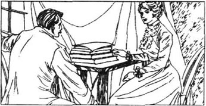
我告诉了亨利爵士关于劳拉·莱昂丝的事情，还说我想尽快与她谈一谈。此后我便到纽顿去了她家。
一位女仆将我带进了起居室，一位非常漂亮的黑发女士正坐在打字机前工作。我告诉了她我是谁，还说我曾见过她父亲。
“我与我父亲之间没什么联系，”她讲道。“在我身处困境时他没有给我丝毫的帮助。查尔斯·巴斯克维尔爵士与别的一些好心肠的人们在我又穷又饿时曾经帮助过我。”
“我就是因为查尔斯爵士的事情才来见您的，”我说道。“我想知道您是否曾经给他写信并请求他来见您一面。”
她看上去十分愤怒，她的面孔还变得苍白。
“岂有此理的问题！”她说道。“您有何权利向我询问有关我的私人生活的事情？但是我的回答是：‘没有。’”
“您肯定没记清楚，”我说道。“我认为您在他临终的那天曾给他写过信。您的信中还是这么写的：‘请您千万将此信烧掉，并在10点钟的时候到栅门那里去。’”
我一度以为她就要晕厥了。接着，她低声说道：“我曾请求查尔斯爵士不要告诉任何人的。”
“您不该认为查尔斯爵士曾同任何人谈起您，”我说道。“他把这封信投在火中了，但并没全烧掉。我说，您曾给他写过那封信吗？”
“是的，我写过，”她说道。“我为何要为曾写信给他而感到羞愧呢？我本想让他帮助我。我听说他第二天一大早就要到伦敦去。那天我又不能早一点到庄园去。”
“但是您为何要求他在花园里而不是在屋里与您会面呢？”我问道。
“您想，一个女人在夜间的那个时候到一个单身汉的家里明智吗？”她问道。
“噢，您到那里去时发生了什么事情？”我问道。
“我并没有去。”她应答道。
“莱昂丝太太！”
“我告诉您我并没有去。发生了一件事使我去不成了。我不能告给您这是件什么事。”
“莱昂丝太太，”我讲道，“如果您并没见到查尔斯爵士的话，您一定要告诉我其中的缘由。要是您不肯说出来的话，而我带着有关这封信件的新线索去警察局，形势将对您非常不利。”
莱昂丝太太斟酌了片刻，接着说道：“我看来得告诉您了。您也许知道我嫁给了一个对我非常残酷的男子。我恨他，我曾想与他离婚。可是离婚是桩昂贵的事情，而我又没有什么钱。我当时觉得，要是查尔斯爵士听到了我那悲惨的故事的话，他就会帮助我离婚。”
“那么您为什么又没有去见查尔斯爵士呢？”我向她问道。
“因为我从别人那儿已得到帮助了。”她说道。
“为什么您没有写信给查尔斯爵士并告诉他呢？”
“我是打算这么做的，但在第二天早上我在报纸上看到了他已死的消息。”
我问了莱昂丝太太许多别的问题，但是她不管我怎么问都不肯改口。我敢保证她讲了实话。我可以验证一下她的叙述中关键的两点。如果这两处正确无误，那么无疑她是在讲真话。我可以调查一下，看看她在查尔斯爵士逝去之时是否真的开始办离婚。我还可以调查一下，看看她是否在查尔斯爵士逝去的当晚真的没去巴斯克维尔庄园。
但是我不敢肯定她是否已告诉了我全部实情。当我告诉她关于这封信的事情时她为何几乎要晕了过去呢？这点由她告诉我的故事不能完全解释得通。
目前我已竭尽全力去发现探索了。我离开了她，到另一个地方搜寻更多的信息。
12 The Man on the Moor
12
The Man on the Moor
I drove out of Newtown and went to begin my search for the mysterious man on the moor. There were hundreds of the old stone huts on the moor. Barrymore did not know in which of them the mysterious man was living. I had seen the man on the night when Sir Henry and I had chased Selden, so I decided to start my search near that place.
The path I took ran past Mr Frankland's house, and I saw him standing at his gate. He called to me, and invited me to go in and have a drink with him. He had been arguing with the police, and was angry with them. He began to tell me about it.
'But they will be sorry,' he said. 'I could tell them where to look for the escaped prisoner, but I am not going to help them. You see, I have been searching the moors with my telescope, and although I have not actually seen the prisoner, I have seen the person who is taking him food.'
I thought of Barrymore and Mrs Barrymore's worried faces. But Mr Frankland's next words showed me that I did not need to worry.
'You will be surprised to hear that a young boy takes food to the prisoner. The boy goes by at about the same time each day, and he is always carrying a bag. Who else can he be going to see—except the prisoner? Come and look through my telescope, and you will see that I am right. It is about this time each day that the boy goes by.'
We went up onto the roof, and we did not have to wait long. There was someone moving on a hill in front of the house. I looked through the telescope and saw a small boy with a bag over his shoulder. He looked around to make sure that nobody was following him, and then he disappeared over the hill.
'Remember that I don't want the police to know my secret, Dr Watson,' Frankland reminded me. I'm too angry with them at the moment to help them.'
I agreed not to tell the police, and said goodbye. I walked along the road while Frankland was watching me, but as soon as I was round the corner, I went towards the hill where we had seen the boy.
The sun was already going down when I reached the top of the hill. I could not see the boy, and there was nothing else in that lonely place. Beneath me on the other side of the hill was a circle of old stone huts. In the middle of the circle was one hut that had a better roof than the others, so it would keep out the wind and the rain. This must be the place where the mysterious man was hiding! I would soon know his secret.
As I walked towards the hut, I saw that someone had certainly been using it. A path had been worn up to the door. I took my revolver out of my pocket, and checked that it was ready to fire. I walked quickly and quietly up to the hut, and looked inside. The place was empty.
But this was certainly where the man lived. As I looked round the hut, I knew that the mysterious man must have a very strong character. No other person could live in conditions as bad as these. There were some blankets on a flat stone where the man slept. There had been a fire in one corner. There were some cooking pots, and a large bowl half full of water. In the middle of the hut was another large flat stone which was used as a table, and on it was the bag the boy had been carrying. Under the bag I saw a piece of paper with writing on it. Quickly, I picked up the paper and read what was written on it. It said: 'Dr Watson has gone to Newtown.'
I realized that the mysterious man had told someone to watch me, and this was a message from his spy. Was the man a dangerous enemy? Or was he a friend who was watching us to make sure we were safe? I decided I would not leave the hut until I knew.
Outside, the sun was low in the sky. Everything looked calm and peaceful in the golden evening light. But I did not feel peaceful or calm. I felt frightened as I waited for the mysterious man.
Then I heard footsteps coming towards the hut. As they came closer, I moved into the darkest corner of the hut. I did not want the man to see me until I had looked closely at him. The footsteps stopped, and I could hear nothing at all. Then the man began to move again, and the footsteps came closer. A shadow fell across the door of the hut.
'It's a lovely evening, my dear Watson,' said a voice I knew well. 'I really think you will enjoy it more out here.'
chase v. run after. 追赶。
although conj. 虽然，即便。
look through try to see sth. by... 透过……看。
shoulder n. 肩膀。
remind v. cause sb. to remember or think. 提醒；使某人想起。
be round the corner 走过拐角处。
circle n. sth. round like a ring. （几何）圆；圆形物。
blanket n. thick, woolen covering used on beds. 毛毯，毡子。
pot n. round vessel for holding liquids or solids, for cooking things in. 锅，罐，盆（当作容器、烹调用）。
spy n. person who tries to get secret information. 间谍。
peaceful adj. quiet, undisturbed. 安宁的，不受打扰的。
shadow n. area of shade, dark shape, thrown on the ground, a wall, floor, etc. 影子、阴影。
12 沼地上的那个人
12 沼地上的那个人
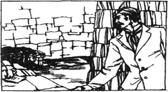
我驶出了纽顿，去开始搜寻沼地上的那位神秘人。沼地上有成百上千的古老的石屋。白瑞摩不知道那位神秘人住在其中的哪一栋里。在我与查尔斯爵士追赶塞尔登的那个晚上我曾见过那个人，所以我决定从那个地方附近开始找起。
我所走的这条小路经过弗兰克兰先生的家，我还看到他正站在门口。他叫我一声，并邀请我进屋和他喝一杯。他一直与警方争讼着，而且对警方十分气愤。他开始告诉我这些事情。
“但是他们将会后悔的，”他说道。“我本来能告诉他们该到哪里去找那个逃犯，但是我不想帮他们的忙。您是知道的，我一直在用我的望远镜搜寻这些沼地，而且虽然我没有真正地看到过那个罪犯，但是我已经学看见了给他送饭的那个人。”
我想到了白瑞摩及他太太焦虑的面容。但是，弗兰克兰下边的话语表明我不必为此担忧了。
“当您听到一个小男孩给罪犯送食物的时候，您一定会感到吃惊吧。那个男孩每天都在同一时间经过，还总提着一个包。他还会去见谁呢——除了那个罪犯之外？过来，向我的望远镜里瞧瞧，您就会知道我是对的。每天就在这个时候那个男孩路过此处。”
我们到了屋顶上，我们并不需久等。有人正在屋前的小山上移动着。我透过望远镜看到肩上扛着一个包的小男孩。他向四处张望着以确保没人跟踪他，后来就在山那边不见了。
“记住：我不想叫警方知道我的秘密，华生医生，”费兰克兰提醒我说，“我现在对他们太生气了，都不想帮他们的忙。”
我同意不告诉警方并道了别。弗兰克兰望着我时我便顺着大路走，但是一转过弯我就朝着看到小男孩的那座小山走去。
当我到达山顶时，太阳就要落山了。我看不见那个小男孩，在这个荒凉的地方也没有旁人。在我下面山坡的另一旁有一些围成一圈的古老的石屋。中间有一栋屋顶比其他的要好一些，可以挡风避雨。这一定就是那位神秘人的藏身之处了。我不久就可知晓他的秘密了。
当我朝着石屋走去时，我意识到一定有人用过这地方。一条小路已被人踩出，一直通向房门。我从衣兜里取出了左轮手枪，并确认它可以随时射击。我快速、轻盈地向小屋走去，并向屋里望了望。里面空空如也。
这显然是那个人居住的地方。我在石屋四周察看着，知道那位神秘人士一定有着坚强的性格。再无旁人可以在如此恶劣的条件下住下去了。在那人睡觉的石板上放着几条毛毯。小屋的一角曾生过火。屋角有一些餐锅和一个装了半碗水的大碗。在小屋的中央另有一块平平的、被当做桌子用的石板，桌上放着那个男孩扛着的那个包。我在包下看到了一张写着字的纸。我赶快拿起纸来，看看上面写些什么内容。上面写着：“华生医生已去纽顿了。”
我意识到那位神秘人已叫人去监视我，这便是从他的密探那里得来的消息。那他是个危险的敌人呢，还是密切关注着我们以确保我们安全的朋友呢？我下定决心，不弄清一切决不离开这小屋。
外面，太阳已经落得很低了。在金色的夕阳的照耀下，一切都显得那么安详、恬静。可是我丝毫感受不到这种宁静。我在等待那位神秘人之时感到很害怕。
后来，我听到了走向小屋的脚步声。当声音逼近时，我挪到了小屋里最阴暗的角落。在我没有仔细看清那人之前我并不想叫他看见我。脚步声停住了，我也什么都听不到了。后来，那个人又开始走动起来，脚步声也愈来愈近了。一条黑影由石屋的门那里投射进来。
“真是个可爱的傍晚，我亲爱的华生，”我很熟悉的一个声音说道。“我真觉得你到外边这儿来要享受些。”
13 Too Late
13
Too Late
For a moment or two I could neither breathe nor move. Then I felt my fear and unhappiness disappear, as I knew that I was no longer alone in my responsibility for Sir Henry. The dangers all around me did not seem so frightening. The cool voice could belong to only one man in the world.
'Holmes!' I cried. 'Holmes!'
I went outside the hut, and there was Holmes. He was sitting on a stone, and his grey eyes were dancing with amusement. He was thin and worn, but bright and wide-awake. His skin was brown from the wind and the sun. But his chin was smooth, and his shirt was white. He did not look like a man who had been living in the middle of the moor.
'I have never been so glad to see anyone in my life,' I said, 'nor so surprised.'
'I am surprised, too,' Holmes said, as he shook me warmly by the hand. 'How did you find me?'
I told him about Frankland, and how I had seen the boy with the food.
Holmes went into the hut, and looked at the food, and at the note with it. 'I guess that you have been to see Mrs Laura Lyons,' he said, and when I told him that he was right, he went on: 'When we put together everything that each of us has discovered, I expect we shall know almost everything about this case.
'But how did you get here?' I asked him. 'And what have you been doing? I thought you had to finish your case in London.'
'That is what I wanted you to think,' he said.
'Then you have tricked me, and have no confidence in me,' I said. I was upset and angry because he had not told me his plans.
'I am sorry if it seems I have tricked you, my dear Watson. I did not want our enemy to know I was here, but I wanted to be near enough to make sure that you and Sir Henry were safe. You are a kind person—too kind to leave me alone out here in bad weather. Our enemy would guess I was here if he saw you coming out with food, or with important news. You have been a very real help to me. Your letters with all their valuable information have been brought to me. You have done excellent work, and without you I would not have all the important details I needed.'
Holmes' warm words of thanks made me feel much happier, and I saw that he was right.
'That's better,' he said, as he saw the shadow lift from my face. 'Now tell me about your visit to Mrs Laura Lyons.'
I told Holmes everything Mrs Lyons had said.
'This is all very important,' Holmes said. 'It answers questions I have been unable to answer. Did you know that Mrs Lyons and Stapleton are very close friends? They often meet, and they write to each other. Perhaps I can use this information to turn Stapleton's wife against him...'
'His wife?' I asked. 'Who and where is she?'
'The lady called Miss Stapleton, who pretends to be his sister, is really his wife,' said Holmes.
'Good heavens, Holmes! Are you sure? If she is his wife, why did Stapleton allow Sir Henry to fall in love with her?'
'Sir Henry hurt nobody except himself when he fell in love with her. Stapleton took care that Sir Henry did not make love to her. I repeat that the lady is his wife, and not his sister. They came here only two years ago, and before that he had owned a school in the north of England. He told you that, and you told me in your letter. I checked on the school, and found that the man who had owned it went away with his wife when the school closed. They changed their name, but the couple who were described to me were without doubt the Stapletons.'
'But why do they pretend to be brother and sister?' I asked.
'Because Stapleton thought that she would be very much more useful to him if she appeared to be a free woman.'
Suddenly I saw behind Stapleton's smiling face a heart with murder in it. 'So he is our enemy! He is the man who followed us in London! And the warning note to Sir Henry came from Miss Stapleton.'
'Exactly,' said Holmes.
'But if Miss Stapleton is really his wife, why is he a close friend of Mrs Laura Lyons?'
'Your excellent work has given us the answer to that question, Watson. When you told me that Mrs Lyons was getting a divorce, I realized that she hoped to marry Stapleton. He told her that he was unmarried, and that he wanted to make her his wife. When she learns the truth, she may decide to help us. We must go and see her tomorrow.'
'One last question, Holmes,' I said. 'What is Stapleton trying to do?'
Holmes dropped his voice as he answered: 'Murder, cold-blooded murder. That is what Stapleton is trying to do. Do not ask me for details. I am about to catch him in a trap. There is only one danger—that he will act before I am ready. Another day, or perhaps two, and I shall complete my case. Until then you must guard Sir Henry very closely. You should be with him today. However, what you have discovered is very valuable.'
As he finished speaking, an awful scream—a long cry of pain and horror—broke the silence of the moor. The sound turned my blood to ice.
'Oh, my God,' I whispered. 'What is that?'
Holmes had jumped to his feet. 'Where is it, Watson?' he whispered, and I could see that he was shaken by the scream.
The hopeless cry came again, louder, nearer, and more terrible than before. With it came a new sound—deep and frightening.
'The hound!' cried Holmes. 'Come, Watson, come! Great heavens! If we are too late...'
neither... nor 既不……也不……。
responsibility n. duty. 责任，义务。
amusement n. 快乐。
brown adj. 棕色／褐色的。
chin n. the face below the mouth. 下巴。
trick n. mischievous or evil action. 诡计；计谋。
confidence n. trust. 信赖，信任。
valuable adj. of great value, worth or use. 有很大价值的；贵重的；很有用的。
turn against turn hostile to. 作对。
change one's name 改名换姓。
without doubt 无疑。
cold-blooded adj. purposefully cruel. 蓄意残忍的。
trap n. device for catching animals, etc. 陷阱。
complete v. end. 终结，了断；adj. total. 完全的。
jump to one's feet 跳起身来。
Great Heavens! （惊呼语）天哪！
13 太晚了
13 太晚了
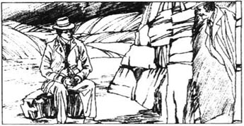
有那么一小会儿我既喘不过气来也动弹不了身子。后来，我觉得我的恐怖与不快之情消失了，因为我知道我不再是独自承担对亨利爵士的责任了。四伏的危机似乎不那么令人恐惧了。这种冷静的声音在世上只可能属于一个人。
“福尔摩斯！”我喊道。“福尔摩斯！”
我走出小屋，福尔摩斯就在眼前。他正坐在一块石头上，他那灰色的眼珠高兴地转动起来。他显得又瘦又累，可是既机灵又清醒。他的皮肤由于风沙和日晒的侵袭变成了棕色。但是他的下巴刮得光光的，衬衫也很干净。他看上去并不像是一位在沼地里居住的人。
“在我的一生里，还从来没有因为看见任何人这么快活过，”我说道。“也从来没有这么吃惊过。”
“我也感到很吃惊，”福尔摩斯一边说着，一边温和地与我握手。“你是如何找到我的？”
我告诉他有关弗兰克兰的事情，还有我是如何看到带着食品的男孩的。
福尔摩斯进了石屋，并看了看食品，还看了看与它在一起的那个纸条。“我揣测你已去见过劳拉·莱昂丝太太了，”他说道，并在我告诉他他说对了时继续说道：“如果我们把每人发现的一切凑到一起，我期望我们就能知道有关这个案子的几乎一切内情了。”
“可是你是怎么到这儿来的呢？”我对他问道。“还有，你一直在干什么？我以为你得在伦敦办完你手头的那个案子呢。”
“那正是我希望你所想的。”他说道。
“那么说，你是在骗我，并不信任我呵！”我说道。我因他没有告诉我他的计划而气恼。
“如果看上去是我对你耍了什么花招的话，那就请你原谅我吧，我亲爱的华生。我不想叫咱们的对手知道我就在此地，但是我又想在附近来保证你和亨利爵士安然无恙。你是个好心肠的人——好得不能容忍我独自一人身处恶劣的环境之中。如果咱们的对手看到你带着食物出来了或带着重要的消息出来了，他就会猜到我在此地。你对我来说一直是种无可估量的帮助。你的那些带着宝贵信息的信件都已被送到我这儿。你干得很出色，要是没有你我就不会得到我所需要的那一切详情了。”
福尔摩斯的那些温暖的感谢话语使我觉得高兴多了，我还意识到他是对的。
“这样就好了，”他看到阴影已从我的脸上消失时这么说道。“现在告诉我你造访劳拉·莱昂丝太太的情况吧。”
我把莱昂丝太太所讲的全部内容告诉了福尔摩斯。
“这点至关重要，”福尔摩斯说道。“它回答了我一直不能回答的那些问题。你已知道莱昂丝太太和斯台普顿是关系密切的朋友了吧？他们常见面，还常通信。也许我可以用这条信息使斯台普顿的妻子与他作对……”
“他的妻子？”我问道。“她是谁，又在哪儿呢？”
“那位被称做斯台普顿小姐、装作是他妹妹的女士其实是他的妻子。”福尔摩斯讲道。
“天哪，福尔摩斯！你敢肯定吗？如果她是他的妻子的话，他为何让亨利爵士爱上了她呢？”
“亨利爵士坠入情网之时，他除了对本人之外对谁都不会构成伤害。斯台普顿曾特别留意避免亨利爵士对她调情。我再说一遍，那位女士就是他的妻子不是他的妹妹。他们在两年之前才来到这儿，但是在那之前他曾在英格兰北部办过一所学校。他告诉你那些事，你又在信中讲给了我。我将那个学校调查了一下，还发现办学校的那个男子在学校关闭之后就和他的妻子一道远走高飞了。他们更改了姓名，但是被描述给我的那对夫妇无疑就是斯台普顿一家。”
“但是，他们为何要装扮成兄妹呢？”我问道。
“因为斯台普顿早就想到了，如果她看似一个单身的自由女子就会对他要有用得多。”
我突然从斯台普顿的笑脸之后看到了他那暗藏杀机的狠毒心肠。“那么说他就是我们的敌人啰！他就是在伦敦尾随咱们的那个人！还有，送给亨利爵士的那个警告纸条是由斯台普顿小姐发出的。”
“正是。”福尔摩斯讲道。
“但是，如果斯台普顿小姐真是他的妻子的话，他为何会是劳拉·莱昂丝太太的亲密的朋友呢？”
“你杰出的工作已给我们提供了这个问题的答案，华生。当你告诉我莱昂斯太太计划离婚时，我便意识到她是希望嫁给斯台普顿的。他告诉她他还是未婚，而且想娶她为妻。她获悉事情的真相时，也许会下定决心帮助我们。我们明天必须去见她。”
“还有最后一个问题，福尔摩斯。”我讲道，“斯台普顿到底想干什么呢？”
福尔摩斯在回答时放低了声调：
“谋杀，残忍至极的谋杀。那便是斯台普顿的企图所在。别问我细节了。我将设个陷阱将其抓获。现在只有一个危险了——他说不定会在我准备就绪之前就行动。再过一天，或者也许是两天，我就要办完这个案子。在那以前，你必须注意保护好亨利爵士。你今天就该和他在一起。不过，你的发现很有价值。”
他说完话时，一声可怕的尖叫——一声很长的、痛苦和恐惧的喊叫打破了沼地上的沉静。这个声音使我毛骨悚然。
“哦，我的上帝，”我低声说道。“那是怎么回事？”
福尔摩斯已猛地站了起来。“是哪一边，华生？”他低声问道，我知道他被尖叫声震惊了。
绝望的喊声又传来了，比以往更大些，距离更近些，也更恐怖些。和它一起传来的还有一种新的声音——既低沉又恐怖。
“是猎犬！”福尔摩斯喊道。“来呀，华生，来呀！天哪！要是咱们来不及……”
14 Death on the Moor
14
Death on the Moor
Holmes started running over the moor, and I followed him. From somewhere in front of us came one more hopeless scream. It was followed by the sound of something falling heavily. We stopped and listened.
I saw Holmes put his hand to his head. 'He has won, Watson. We're too late. I was mad not to act sooner. And you, Watson, look what, happens when you leave the man I asked you to guard. But if the worst has happened, we shall see that Stapleton doesn't go free.'
We ran through the dark towards the place where the cries had come from. We reached a rocky edge from which a steep side fell away. Below us we saw the body of a man. He was lying with his face down on the ground. He had fallen on his head, which was bent under him, and his neck was broken. Holmes lit a match. We saw with horror the blood running out onto the ground from his head.
We both remembered clearly the suit the man was wearing. It was a thick, red-brown country suit. It was the suit Sir Henry had been wearing on the morning when we first met him in Baker Street. We saw it for a moment and then the match went out. Our hearts turned sick and cold inside us.
'The devil! The murderer! I shall never forgive myself for leaving Sir Henry alone,' I whispered angrily.
'It's more my fault than yours,' said Holmes. 'I have let this good man die because I was busy with the last details of my case. It is the greatest mistake I have ever made. But why did he come out onto the moor? I told him it would lead to his death. Now both Sir Henry and his uncle have been murdered. By heavens, clever as he is, I shall trap Stapleton before another day is past.'
With heavy hearts we stood on either side of the broken body. Then Holmes bent over the body and began to move it. All of a sudden he began to laugh and jump up and down.
'Look at the face!' he shouted, hitting me on the back. 'It is not Sir Henry. It's Selden, the escaped prisoner.'
We turned the body over. There was no doubt about it. I had seen the face before, on the night Sir Henry and I had chased Selden over the moor. Then I suddenly remembered, and everything became clear. Sir Henry had told me how he gave his old clothes to Barrymore. I realized that this suit had been among the clothes Barrymore had left for Selden, and I told Holmes.
'Then the clothes have caused the death of the poor man. The hound had been given something of Sir Henry's to smell so that it would pick up his scent and follow him. I think that is why the shoe was taken from the hotel in London. So the hound followed the scent and hunted this man. But there is one thing I don't understand. How did Selden know that the hound was following him? We know he ran a long way. He was screaming for a long time before he fell, and we could hear that he was running as he screamed. So the hound was a long way behind him when he began to run. How could he see it in the dark? How did he know it was there, until it was close behind him?'
'I cannot answer that,' I said, 'but there is something else I don't understand. Why was the hound out on the moor tonight? Stapleton would not let it go out unless he thought Sir Henry was there.'
'We may know the answer to that question very soon,' said Holmes. 'Here comes Stapleton.'
His sharp eyes had seen a figure moving in the darkness in front of us, and as the man came closer, I could see that it was indeed Stapleton.
'We must be very careful not to show that we suspect him,' Holmes warned me.
Stapleton stopped when he saw us, and then walked forward again. 'Dr Watson, is that you? I didn't expect to see you on the moor at this time of night. But, dear me, what's this? Somebody hurt? Not—don't tell me that it's our friend Sir Henry!'
He went past me and bent over the dead man. I heard him breathe in quickly.
'Who... who is this?' he asked, his voice shaking.
'It's Selden, the escaped prisoner.'
Stapleton quickly managed to hide the look of surprise and disappointment on his face as he turned towards us. He looked sharply from Holmes to me. 'Dear me! How terrible! How did he die?'
'We think he broke his neck by falling over the edge of these rocks,' I said.
'I heard a cry, and that is why I came out. I was worried about Sir Henry,' Stapleton said.
'Why were you worried about Sir Henry?' I asked.
'Because I had invited him to my house. When he did not come I was surprised. Then, when I heard cries on the moor, I began to worry about him. I wonder' —his eyes went quickly from my face to Holmes'— 'did you hear anything else at all?'
'No,' said Holmes. 'Did you?'
'No,' said Stapleton.
'What do you mean, then?'
Oh, you know the stories about the supernatural hound. I wondered if it had been here tonight.'
'We heard nothing of that kind,' I said.
'How do you think this poor man fell to his death?' Stapleton asked.
'I think cold and hunger, and his fear that the police would catch him, drove him mad. He ran round the moor in his madness, and fell over this edge,' I said.
'Do you agree, Mr Sherlock Holmes?' asked Stapleton.
'You're quick to guess who I am,' said Holmes.
'We're been expecting you ever since Dr Watson arrived.'
'I have no doubt my friend is right about the way Selden died,' said Holmes. 'It's a sad death, but it will not prevent me from returning to London tomorrow.'
'Before you return, will you be able to explain the mysteries that we've experienced here?'
'I am not always as successful as I hope. I need facts, not stories of the supernatural. This hasn't been a good case for me.'
Stapleton looked hard at him, but Holmes had spoken very seriously and his words sounded true.
We covered the body. Then Stapleton turned to go home, and Holmes and I walked towards Baskerville Hall.
'He's a very clever man, and a dangerous enemy, who will be difficult to trap,' said Holmes. 'Look how he controlled his disappointment when he found that the dead man was not Sir Henry.'
'I'm sorry that he has seen you,' I said.
'So am I, but there was nothing we could do about it. Now he knows I am here he may be more careful, or he may act more quickly than he planned.'
'Why can't we give him to the police at once?'
'Because we can't prove anything against him. Sir Charles was found dead because his heart failed. Again, tonight we could not prove that there was a hound. Selden died from a fall. We have no case at present. We shall see Mrs Lyons tomorrow, and she may help us. But whatever happens, I have my own plan. There will be some danger, but by the end of tomorrow I hope to have won this battle.'
He would say nothing else.
'Are you coming to the Hall?' I asked.
'Yes,' he replied. 'There is no reason for me to hide any longer. But one last word, Watson. Say nothing of the hound to Sir Henry. Let him think that Selden died from a fall. If he knows about the hound, he will find it harder to face the dangers of tomorrow. I think you told me in your last letter that he is having dinner with the Stapletons tomorrow evening.'
'And they have invited me, too,' I reminded him.
'Then you must excuse yourself, and he must go alone. That can easily be arranged. And now I think we are both ready for some food.'
hopeless adj. helpless. 无望的，无助的。
rocky adj. hard like rock or full of rock. 硬如石的或多石的。
steep adj. sharp. （指斜坡）陡峭的，险峻的。
go out （火，灯等）熄灭。
sick at heart deeply sad. 深为悲伤。
leave sb. alone 让某人独自待着。
lead to cause. 导致。
By heavens! （感叹语）上苍啊！
scent n. smell, esp. of sth. pleasant. 气味（尤指香味）。
figure n. human form, esp. the appearance and what it suggests. 人形；（尤指）体态，身材。
suspect v. doubt. 怀疑；n. 嫌疑犯。
Dear me! （感叹语，表示惊讶）天哪！
manage v. control; try and succeed. 控制；尽力并设法办到。
disappointment n. sadness at not getting what was hoped for. 失望。
drive sb. mad 驱使某人发狂。
experience v. go through. 经历。n. 经历；经验。
plan v. arrange to do sth. in advance. 计划；n. 计划，策略，方案。
at present right now. 目前。
hard adj. difficult, not easy. 困难的。
excuse oneself give a reason (true or invented) to explain or defend one's past / present action. 辩白；开脱；借故脱身走开。
14 沼地上的一起死亡事件
14 沼地上的一起死亡事件
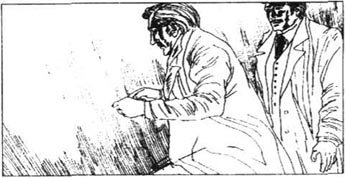
福尔摩斯开始在沼地上跑了起来，我跟在他的后面。从我们前面的某处又发出了一声绝望的尖叫，然后就是一个东西重重地栽在地上的声音。我们站住了并倾听着。
我看到福尔摩斯把手按在头上。“他已经赢了，华生。我们来得太晚了。我真是发疯了，竟不及早采取行动。而你呢，华生，看到离开我让你保护的那个人会有什么后果了吧。可是，要是最不幸的事情已然发生了的话，那么我们就不能叫斯台普顿给逃脱了。”
我们在黑暗之中朝发出喊叫声的那个地方跑去。我们到了一条岩脊边上，那儿有个很陡的悬崖伸展下去。我们由那里向下看到了一个人。他脸朝下躺在地上。他是头向下摔倒的，头在身体下面窝着，脖子也给折断了。福尔摩斯点着了一根火柴。我们惊恐地看到了一滩血正从他的头颅里冒出来汩汩地流到地上。
我们俩都清楚地记得那个人的衣着。那是一件厚厚的、棕红色的、带有土风色彩的外套。就是亨利爵士在我们第一次在贝克街见到他的那个早上穿着的那一件。我们只看了一眼，那根火柴接着就灭了。我们感到深为悲伤、深为恐怖。
“这个恶棍！这个凶手！我永远也不能原谅自己，我竟离开了他的身旁，让他独自一人待着。”我愤怒地低声说道。
“我的罪过比你还要深重，”福尔摩斯说道。“因为我正忙于做好破案之前的工作，我竟任这位好人死去。这是我一生中所犯的最大的错误。可是，他为何要从屋里溜到沼地上来呢？我告诉过他，这会要他的命的。现在，亨利爵士及他伯父都已被人谋杀了。苍天在上，过不了另一天我就要诱捕他，虽然他很狡猾。”
我们心情沉重地站在这具血肉模糊的尸体的两侧。接着，福尔摩斯在尸体旁边弯着腰，并且开始挪动它。突然之间，他开始又笑又跳起来。
“看看这张面孔！”他喊叫道，在我后背上击了一下。“此人并非亨利爵士。是塞尔登，那个逃犯。”
我们把死尸翻了过来。无疑是这么一回事。在我与亨利爵士在沼地上追赶塞尔登的那个晚上我曾见过这张脸。然后，我忽然记起了什么，一切都清楚明白了。亨利爵士曾告诉我他把自己的旧衣物送给了白瑞摩。我意识到这件外套就是白瑞摩留给塞尔登的那些衣物中的一件，于是便把事情的来由告诉了福尔摩斯。
“那么说，这身衣服导致了这个可怜的人的死。那个猎犬曾闻过亨利爵士的某件东西，以便它能嗅出他的气味并追踪他。我认为这就是那只鞋子在伦敦的旅馆里被偷的原因了。如此一来猎犬就循着气味搜寻这个人。可是，有一件事情我不大明白。塞尔登如何知道那猎犬跟在他后面呢？我们知道他跑了很长的一段路。他在摔倒在地之前已尖叫了很长一段时间，我们也能听出他尖叫时正在跑着。因此，他开始跑时那个猎犬还在他的身后很远。他是怎么在黑暗之中看到猎犬的呢？在猎犬追上他之前他是怎么知道它就在那儿的呢？”
“我回答不上来，”我说道。“但是，还有一事我不大理解。为什么猎犬单单在今晚被放出来在沼地上活动呢？除非是斯台普顿觉得亨利爵士会到那里去，否则他是不会把它放出来的。”
“我们可能很快就能知道问题的答案了，”福尔摩斯讲道。“斯台普顿来了。”
他那敏锐的眼睛已经看到了黑暗之中在我们的前面移动的一个轮廓，而且在这个人走近时，我可以看出正是斯台普顿。
“我们必须谨慎行事，不要表现出怀疑他的样子。”福尔摩斯警告我说。
斯台普顿看到我们时停下了脚步，然后又向前走了起来。“华生医生，是您吗？我没想到会在晚上的这个时候在沼地上看到您。可是，天哪，这是怎么回事？有人受伤了吗？不——不要告诉我这就是咱们的朋友亨利爵士！”
他由我们身旁走过，并在那个死人的身旁弯下腰来。我听到他的呼吸急促。
“这是谁……谁呀？”他问道，声音颤抖着。
“是塞尔登，那个逃犯。”
斯台普顿向我们转过身来时迅速地、设法掩饰着惊慌和失望的表情。他两眼死盯着福尔摩斯，又转向我。“天哪！多么可怕啊！他是怎么死的？”
“我们认为他从岩脊边上掉下来便摔断了脖子。”我说道。
“我听到了一声叫喊，那便是我跑了出来的原因。我很替亨利爵士担心。”斯台普顿说道。
“您为何要替亨利爵士担心呢？”我问道。
“因为我已邀请他到我家来。他没有来时我感到很惊讶。接着，当我听到沼地上的叫喊声时，我就开始为他担忧了。我想知道”——他的眼神从我的脸上忽地转向了福尔摩斯的脸——“您还听到了什么声音没有？”
“没有，”福尔摩斯说道。“您呢？”
“没有。”斯台普顿说道。
“那么，您这是什么意思？”
“噢，您知道关于那只鬼怪似的猎犬的种种故事的。当时我正在纳闷它今晚是否就在此地。”
“我们没有听到过那一类声音。”我说道。
“你们怎么以为这个可怜的家伙是摔死的呢？”斯台普顿问道。
“我认为饥寒交迫和怕被警方抓获的恐惧之情已经攫住了他，把他逼得发疯了。他一定曾在沼地里疯狂地奔跑，又摔下了岩脊。”我说道。
“您同意这种看法吗，夏洛克·福尔摩斯先生？”斯台普顿问道。
“您猜人猜得真快。”福尔摩斯说道。
“自从华生医生到达之后，我们一直在期待着您的光临。”
“我确信我的朋友有关塞尔登死去的方式的说法是正确无误的，”福尔摩斯说道。“死得很惨，可是这也不能阻止我明天就回到伦敦去。”
“在您离去之前，您能解释我们在此经历的种种神秘事件吗？”
“我不像自己希望的那样总能取得成功。我需要事实，而不是有关鬼怪的种种故事。对我来说这个案子办得并不好。”
斯台普顿死盯着他，但是福尔摩斯说话时一本正经，他的话语听上去也像真的。
我们把尸体遮盖起来。然后，斯台普顿就转身回家了，我和福尔摩斯朝巴斯克维尔庄园走去。
“他是个聪明人，同时也是个危险的对手，很难被诱捕的，”福尔摩斯讲道。“看看，当他发现那个死去的家伙不是亨利爵士时，他是多么镇定地克制自己的失望之情啊。”
“我感到很遗憾，他竟看到了你。”我说道。
“我也这么觉得，可是我们当时对此毫无办法。他现在已经知道了我在这里，可能会变得更加谨慎起来，或许会比他事先预谋好的更快地采取行动。”
“咱们为什么不马上把他交给警方处理呢？”
“因为我们没有证据。查尔斯爵士被发现是因为心脏不负重荷才死去的。我们今晚也证明不了这儿曾有过一只猎犬。塞尔登是摔死的。我们目前没有别的案子要办。我们明天去见一趟莱昂丝太太，她或许可以帮助我们。但是，不论发生什么，我都有自己的计划。也许会有些危险，但是我希望明天结束之前就能赢得这场战斗。”
别的话语他就不肯讲了。
“你打算来庄园吗？”我问道。
“是的，”他回答道。“我再没有什么躲起来的原因了。可是，还有最后一句话，华生。可别对亨利爵士谈起那只猎犬的事来。就让他认为塞尔登是摔死的吧。如果他知道了猎犬的事情，他就会发现很难面对明天必须经受的种种危险了。我想，你曾经在最后一封信里告诉过我他在明晚要到斯台普顿家里吃晚饭的吧。”
“还有，他们也邀请了我。”我提醒他道。
“那么你一定得借口谢绝，他必须单身前往。那很容易安排。现在我想咱们俩人都已准备就绪，可以去吃些东西了。”
15 The Trap
15
The Trap
When we reached the Hall, Sir Henry was very pleased to see Holmes. But he was surprised that Holmes had no luggage and that he appeared so unexpectedly.
I had the unhappy job of telling Barrymore and his wife about her brother's death. Mrs Barrymore cried and was very sad indeed.
During dinner Sir Henry told us that he had spent a dull day and evening on his own. He had kept his promise to Holmes, and so he had not accepted the Stapletons' invitation to their house that evening. We did not tell him how glad we were that he had stayed away from the moor!
Holmes started to say something, and then he stopped suddenly. His eyes were fixed on one of the pictures of the past Baskervilles on the wall.
'Sir Henry, could you tell me which Baskerville that is?' he asked. Sir Henry and I both looked at the picture.
'That is Sir Hugo, the one who started all the trouble,' said Sir Henry. 'He was the first to see the Hound.'
Holmes looked hard at the picture, but said nothing more.
Then after Sir Henry had gone to his room, Holmes made me stand in front of the picture. 'Is it like anyone you know?' he asked. He stood on a chair, and with his hands he covered the hat and hair of the man in the picture.
'Good heavens!' I cried in surprise. I was looking at a picture of Stapleton's face.
'Yes,' said Holmes before I could say anything more. 'There's not much doubt about it. Stapleton is a Baskerville. He looks like Sir Hugo, and he has the same evil character. Now I understand why he wants to kill Sir Henry. I am sure we shall find that he will inherit the Baskerville lands. And so we have one more answer. By tomorrow night Stapleton will be caught like one of his butterflies, and we shall add him to the Baker Street collection.'
We soon went to bed. I was up early in the morning, but Holmes was up earlier. He had already sent one message to the police about Selden, and another to his boy to stop him taking food to the hut.
When Sir Henry joined us, Holmes told him that we had to leave for London immediately after breakfast. Sir Henry was very unhappy about this, but Holmes asked him to help us by doing everything Holmes ordered him to do. Sir Henry agreed to help in this way, and to go by himself to the Stapletons that evening. He also agreed to tell the Stapletons that Holmes and I had gone to London, but that we would return to Devonshire soon.
'One more order,' said Holmes. 'I want you to drive to the Stapletons' house and then send the driver away. Let the Stapletons know that you're going to walk home across the moor.'
'Across the moor?' said Sir Henry, very surprised. 'But you have told me again and again not to do that.'
'This time it will be completely safe. I know that you are brave enough to do it, and it must be done.'
'Then I will do it.'
'But you must keep to the path between the Stapletons' house and the Grimpen road, which is your natural way home. Do not leave the path.'
I was very surprised by all this. Holmes had told Stapleton that he would return to London, but he had not said that I was going too. And I was very worried that neither of us would be with Sir Henry when he walked across the moor that night. But we had to obey Holmes' orders.
Holmes and I left Baskerville Hall immediately after breakfast and went to the station at Newtown. A small boy was waiting on the platform.
'Any orders, sir?' he asked Holmes.
'You will take the train to London, my boy. When you get there, you will send a telegram to Sir Henry in my name. It will ask him to send to me at Baker Street the pocket book I left at the Hall.'
I began to understand some of Holmes' plan. When Sir Henry received the telegram sent by Holmes' boy, he would think that we had arrived in London. He would tell Stapleton, who would then also believe that we were far away from Baskerville Hall. In fact, we would be very close in case Sir Henry needed us.
We left the station and went to see Mrs Laura Lyons. I introduced Holmes to her. After they had shaken hands, he said: 'Dr Watson has told me everything, Mrs Lyons. We see Sir Charles' death as a case of murder. Both Stapleton and his wife are suspects.'
Mrs Lyons jumped from her chair. 'His wife!' she cried. 'He has no wife. He is not a married man.'
'I have come here ready to prove that he is married, and the woman who calls herself his sister is really his wife,' said Holmes. He took some photographs and papers from his pocket, and showed them to Mrs Lyons. She looked at the photographs and read the papers. When she put them down, I could see that she had accepted the truth.
'I thought this man loved me,' she said, 'but he has lied to me. Ask me what you like, Mr Holmes, and I will tell you the truth. I never thought any harm would come to Sir Charles. He was a dear old gentleman who was very kind to me. I would do nothing to hurt him.'
'I believe you, Mrs Lyons,' said Holmes. 'Now, let me tell you what I think happened. You can tell me if I'm right or if I'm wrong. First of all, I think Stapleton told you to write the letter to Sir Charles and to ask him for help. He also told you to ask Sir Charles to meet you at the moor gate. Then, after you had sent the letter, Stapleton persuaded you not to meet Sir Charles after all.'
'Stapleton told me that he could not allow any other man to give me the money for my divorce,' Mrs Lyons said. 'He said he was poor, but he would give all his money to bring us together. Then, after I heard about Sir Charles' death, Stapleton told me to say nothing about my letter and the meeting. He said I would be a suspect. He frightened me into staying silent.'
'Yes,' said Holmes. 'But you wondered about him?' She said nothing for a moment, and looked down. 'Yes,' she said. 'But since he has lied to me about marrying me, I will no longer keep his secrets.'
'You are lucky that you have escaped him,' Holmes said. 'You know too much. But I hope you are safe now. Good morning, Mrs Lyons, and thank you. You will hear from us soon.'
'So one by one our questions are answered,' said Holmes as we left Newtown. 'When it is over, this will be one of the most famous cases of our time. And now it has nearly ended. We must hope that it ends safely and successfully.'
luggage n. bags and their contents taken on a journey. 行李。
unexpectedly adv. 意外地，未料到地。
fix on single out (sb.) by looking steadily (at him). 凝视。
Good heavens! （感叹语）天哪！
There is no doubt about... 勿庸置疑，……。
inherit v. receive property, a title, etc. as heir. 继承。
but that except that. 除了……之外。
again and again 一再。
platform n. plat surface built at a higher level than the track in a railway station, used by travellers. （火车站等的）月台，平台。
take the train to a place 乘火车去某处。
in one's name 以某人的名义。
in case in the event of. 如果，万一。
photograph n. 简写为photo，相片。
put down 放下（某物）。
first of all 首先。
persuade v. convince, cause sb. to do or stop doing sth. 劝说。
frighten sb. into doing sth. 威吓某人做某事。
too much greatly, exceeding the normal, expected level. 太，过分。
15 陷阱
15 陷阱
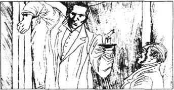
我们到了庄园时，亨利爵士很高兴见到福尔摩斯。可是，他为福尔摩斯既没带行李又是突然到来而感到很惊讶。
我担当起了把白瑞摩太太的弟弟去世的消息透露给他们夫妇俩的令人不快的差使。白瑞摩太太痛哭起来，真的非常悲伤。
晚饭时亨利爵士告诉我们，他独自一人闷闷地待了一个白天和一个傍晚。他恪守了对福尔摩斯所许的诺言，所以他没有接受斯台普顿让他晚上去他们家的邀请。我们没有告诉他，我们为他远离沼地是何等高兴！
福尔摩斯开始说起什么事情来，接着他突然停下了。他的双眼注视着挂在墙上的已故的巴斯克维尔家人的一张画像。
“亨利爵士，您能告诉我那是巴斯克维尔家的哪位吗？”他问道。我和亨利爵士都看着那幅画像。
“那是雨果爵士，开始滋生麻烦的那位，”亨利爵士说道。“他就是最早见到那只猎犬的人。”
福尔摩斯凝视着这幅画像，可是没再说什么别的话。
后来，在亨利爵士回到自己的房间以后，福尔摩斯让我站在画像之前。“他像不像你认识的某个人？”他回道。他站在椅子上，用双手盖住画中的那人的帽子和头发。
“天哪！”我惊奇地叫道。我（好像）正在看着斯台普顿的一幅肖像。
“是这样，”没等我再说什么福尔摩斯就说道。“对这点是没有多少疑问的。斯台普顿是巴斯克维尔家族中的一员。他长得很像雨果，还有着同样邪恶的性格。我现在理解他为何想杀死亨利爵士了。我敢肯定，我们将发现他打算继承巴斯克维尔家的地产。如此一来，我们又有了一个答案。明晚之前斯台普顿就要像他自己所捉的蝴蝶一样被捕获了，我们还将把他的案子添到贝克街的记录中去。”
我们很快就上床睡觉去了。第二天早上我很早就起来了，但是福尔摩斯比我起得还要早些。他已经给警方就塞尔登的事情报了个信儿，还送信给他雇的那个小男孩让他不要给小屋带食品了。
当亨利爵士加入到我们之中时，福尔摩斯告诉他我们在早饭后就得马上出发去伦敦了。亨利爵士对此很不高兴，但是福尔摩斯请他帮助我们，一切按福尔摩斯的吩咐去做。亨利爵士答应通过这种方式帮我们的忙，而且还同意那个傍晚单身前往斯台普顿兄妹那儿。他还同意告诉斯台普顿兄妹我和福尔摩斯已去伦敦，不久之后便可回来的消息。
“还有一个要求，”福尔摩斯说道。“我希望您坐马车去斯台普顿兄妹家，然后就把您的马车夫打发走。让他们知道，您是打算横穿沼地走回家的。”
“走过沼地吗？”亨利爵士说道，显得非常惊愕。“可是您一再告诉我不要那么干的啊。”
“这一次保证安全。我知道您是有足够的勇气这么做的，而且必须得这么干啊。”
“那么，我就这样干吧。”
“可是，您得坚持走从斯台普顿家的宅邸与格林盆大路之间的那条小路，那正是您回家的必经之路。不要离开那条道。”
所有这些叫我大吃一惊。福尔摩斯曾告诉过斯台普顿他将回伦敦去，但在那时并没有说我也将回去。我还为亨利爵士在傍晚走过沼地时我们二人都不能与他做伴而感到担忧。可是我们必须得听从福尔摩斯的吩咐。
我和福尔摩斯在早饭过后马上离开了巴斯克维尔庄园，还去了纽顿的火车站。一个小男孩正在站台上等着。
“有什么吩咐吗，先生？”他对福尔摩斯问道。
“孩子，你就乘这趟火车去伦敦吧。你到了那儿时，就以我的名义向亨利爵士发封电报。请他把我落在了庄园的那个笔记本给我寄到贝克街去。”
我开始明白福尔摩斯的计划中的某些端倪了。亨利爵士收到福尔摩斯雇的男孩发来的电报时，他就会认为我们已抵达伦敦了。他将告诉斯台普顿，那么斯台普顿也就会相信我们已远远地离开了巴斯克维尔庄园。事实上，我们在亨利爵士万一需要我们时就近在咫尺。
我们离开了车站，去见劳拉·莱昂丝太太。我把福尔摩斯介绍给了她。他俩握手之后，他说道：“华生医生告诉了我一切，莱昂丝太太。我们认为查尔斯爵士的死是一桩谋杀案。斯台普顿及其妻子都是该案的嫌疑犯。”
莱昂丝太太从椅子上跳了起来。“他的太太！”她惊叫道。“他没有妻子。他还是个单身汉。”
“我来此地时已经准备就绪，可以证明他已结了婚而自称是他妹妹的那个女子其实是他妻子。”福尔摩斯说道。他从衣兜里掏出几张相片和几张纸来，并把它们给莱昂丝太太看。她看了看相片，又看了看那几张纸。当她把那些从手中放下时，我能看出她已接受了事实。
“我以为这个人爱我，”她说道。“可是他一直在对我撒谎。愿意问我什么就问吧，福尔摩斯先生，我将告诉您事情的真相。我从没有想伤害查尔斯爵士。他是位年迈的、待我非常好的绅士。我决不干什么伤害他的事情。”
“我相信您，莱昂丝太太，”福尔摩斯说道。“现在，让我告诉您我认为已发生的事情。您可以告诉我讲对了还是讲错了。首先，我认为斯台普顿要您给查尔斯爵士写信并向他求救。他还叫您去请求查尔斯爵士在通往沼地的栅门旁见您。接着，在您把信发出去之后，斯台普顿劝阻您根本不要去见查尔斯爵士。”
“斯台普顿对我说，他不能容许别的男人为我的离婚之事而给我出钱，”莱昂丝太太说道。“他说虽然他是个穷人，但是他也要尽自己所有使我们二人得以结合。接着，在我听到查尔斯爵士已死一事之后，斯台普顿叫我决不要把关于我写的信件和约他见面的事情说出去。他说，我会变成嫌疑犯的。他吓得我不敢说话了。”
“正是这样，”福尔摩斯说道。“可是您对他可曾疑惑过？”
她一时没说什么，还低下了头。“是的，”她说道。“可是既然他就娶我一事向我撒谎的话，我也就不再为他保密了。”
“您能脱身幸运得很呢，”福尔摩斯说道，“您了解得太多了。可是我希望您现在能安全无恙。早安，莱昂丝太太，而且非常感谢。不久您就会听到我们的信儿了。”
“因此，我们的问题一个接一个地被回答了，”我们离开纽顿时福尔摩斯说道。“当此案结束时，它将会成为我们所处的时代最著名的案件之一。现在它已几乎结束了。我们必须盼望此案能够平安、顺当地有个了结。”
16 The Hound of the Baskervilles
16
The Hound of the Baskervilles
That evening Holmes and I drove across the moor until we could see the lights of the Stapletons' house in front of us. Then we got out and began to walk very quietly along the path towards the house. When we were very close, Holmes told me to stop. He took his revolver from his pocket, and I did the same.
'We shall hide behind these rocks,' he whispered. 'Watson, you know the house, so I want you to go forward and look through the windows. I want to know where the Stapletons and Sir Henry are, and what they are doing. Take great care, because they must not know that somebody is watching them.'
Very carefully and quietly I moved towards the house. I looked first into the dining-room window. Stapleton and Sir Henry were sitting and smoking their cigars, but there was no sign of Miss Stapleton. I moved round to the other windows, but I could not see her in any of the rooms.
I went back to the dining-room window, and as I looked in again, Stapleton left the room and came out of the house. He went to a hut beside the house, and unlocked the door. I heard a strange sound coming from the hut, but I could not think what was making the noise. Then Stapleton locked the door, and went back into the house and into the dining-room.
I went back to Holmes and told him what I had seen. He wanted to know where Miss Stapleton was, and I had to tell him twice that there was no sign of her in the house.
The moon was shining on the Great Grimpen Marsh, and a fog was rising from it. Holmes watched the fog and began to look worried. The fog was creeping up from the marsh towards the house. We were hidden near the path, which was on the far side of the house from the marsh. 'The fog is moving towards us, Watson, and that is very serious,' said Holmes. 'It is the one thing that could make my plans go wrong.'
As we watched, the fog, which had crept as far as the house, began to flow round it. Angrily Holmes hit the rock in front of us with his open hand.
'If Sir Henry doesn't come out in the next quarter of an hour, the path will be covered by the fog. In half an hour we shall not be able to see our hands in front of our faces. We must move back to higher ground above the fog.'
We moved away from the house and out of the fog, which was creeping slowly along the ground and hiding the path from our view.
'We must not go too far,' said Holmes. 'If we do, Sir Henry may be caught before he reaches us.'
Holmes went down on one knee, and put his ear to the ground. 'Thank heaven, I think I hear him coming.'
Then we heard quick footsteps on the path. After a few moments, Sir Henry appeared out of the fog and walked on in the clear moonlight. He came quickly along the path, passed close to where we were hidden, and began to walk up the hill behind us. As he walked, he looked over his shoulder again and again, like a man who is worried that something is following him.
'Listen!' said Holmes sharply. 'Look out! It's coming!'
I heard him make his revolver ready to fire, and I did the same.
There was a sound of quick, light footsteps from inside the curtain of fog. The thick cloud had crept to within fifty metres of where we were hidden. We tried to see into it, and wondered what horrible thing would appear. I looked at Holmes. His eyes were fixed on the place where the path disappeared into the fog. He was pale, but his eyes were bright. He looked like a man who was going to win the most important game of his life. Then suddenly his eyes nearly jumped out of his head, and his mouth opened in frightened surprise. I looked away from him to see what his eyes were fixed on. When I saw the awful shape that was coming towards us out of the fog, my blood turned cold. The revolver nearly fell from my hands, and my whole body froze with fear.
I saw a hound, an enormous black hound. It was bigger than any dog I had ever seen. But it was something else that filled us with terror. No human eye had ever seen a hound like this one. Fire came from its open mouth. Its eyes were burning. Flames covered its head and body, it was a more horrible sight than anyone could imagine—a hell-hound sent by the devil. It was not a creature of the natural world.
The huge, black, burning hound ran quickly and silently after Sir Henry. Far away along the path we saw him turn and look back at the hound. His face was white in the moonlight and his hands were lifted in horror. He watched helplessly as the terrible creature got closer to him. We were so frozen by the ghostly and unnatural sight that we let the hound go past us, and we could not move. Our friend was near to death, and we were helpless with fear.
smoke v. draw in and let out the air by burning the cigar, tobacco, etc. 抽烟。
sign n. mark. 标志，迹象。
fog n. vapour suspended at or near the earth's surface. 雾。
creep (crept, crept) v. move along with the body close to the ground. 爬行。
hide sth. from sb.'s view 把某物从某人眼前藏开。
look out be careful. 当心。
fire v. cause the gun to shoot. 开火。
awful adj. terrible, dreadful. 可怕的。
make one's blood turns cold fill one with fear or horror. 使某人感到恐惧或恐怖。
flame n. visible part of a fire. 火焰。
imagine v. form a picture in the mind. 想像。
ghostly adj. like, suggesting, of, a ghost. 似鬼的，鬼状的。
16 巴斯克维尔猎犬
16 巴斯克维尔猎犬
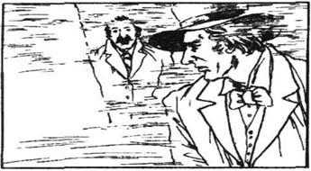
那个傍晚我和福尔摩斯坐着马车驶过沼地，直到看见斯台普顿夫妇家的灯光才停了下来。然后，我们从马车里出来，开始无声无息地沿着那条小道朝那栋房子走去。当我们靠到很近时，福尔摩斯叫我停下来。他从衣兜里掏出了左轮手枪，我也这么干了。
“我们将藏在这些岩石后面，”他低声说道。“华生，你了解这栋房子，所以我想让你上前从窗户向里瞧瞧。我想知道斯台普顿夫妇和亨利爵士现在在什么地方以及他们正在干些什么。谨慎行事，因为他们不该知道有人正在监视他们。”
我非常小心地、轻轻地朝房子挪去。我先从饭厅的窗户向里望去。斯台普顿和亨利爵士正坐着，还抽着雪茄，可是没有斯台普顿小姐的迹象。我又挪向了别的窗户，可看到她不在任何房间里。
我又返回到饭厅的窗户旁；当我又向里张望时，斯台普顿离开了房间，又走出了屋子。他去了屋子旁的一个小屋，还开了门上的锁。我听到了从小屋里发出的一种奇怪的响声，可是我想不出来是什么东西发出了这种响声。接着，斯台普顿锁好了房门，又回到屋里去了，还返回了饭厅。
我回到福尔摩斯那儿，告诉了他我所见到的一切。他想要知道斯台普顿小姐在哪里，我不得不对他说了两遍，说屋内没有她的迹象。
月光正照在格林盆大泥潭上，白雾正从那儿冉冉飘起。福尔摩斯望着白雾，开始露出担忧的神情。雾正从泥潭缓缓地沿着地面飘向这栋房子。我们藏在小路旁，那条小路正坐落在这栋房子离泥潭较远的那一边。
“雾正向我们移来，华生，形势很严峻，”福尔摩斯说道。“这正是会打乱我的计划的那件事。”
在我们注视时，已经飘到了房子旁边的雾开始围着整个房屋飞旋着。福尔摩斯用张开的手掌生气地打了一下我们前面的岩石。
“如果他在一刻钟之内再不出来，这条小路就要被大雾遮住了。再过半小时，咱们都要看不见伸到面前的手了。我们必须后退到高出大雾的一处地方去。”
我们从房子旁退开，也就从那片大雾之中撤出身来。大雾正在慢慢地沿着地面飘移着，还把那条小路遮挡在我们的视野之外。
“我们不该走得太远了，”福尔摩斯说道。“那样的话，亨利爵士就可能在到达我们这儿之前给斯台普顿逮着了。”
福尔摩斯单膝跪着，把耳朵贴在地面上。“感谢上帝，我想我已听到他走来了。”
然后，我们听到了小路上传来急促的脚步声。过了一小会儿，亨利爵士走出了浓雾，在清朗的月色中继续走着。他沿着那条小路快速走来，经过了离我们的隐藏之处很近的地方，又开始走上我们背后的山坡。他一边走，一边不时地转过头来向后张望，就像担心有什么东西跟着他似的。
“听！”福尔摩斯突然尖声说道。“当心！它来了！”
我听到他将左轮手枪做好开火的准备，我也这么做了。
从浓雾里传来了急促而又轻巧的脚步声。那云状的浓雾已经飘到了距我们藏匿的地方不到50米之处。我们努力向雾里张望着，不知道那里将出现什么可怕的东西。我看了看福尔摩斯。他的双眼直勾勾地盯着这条小路被大雾遮没之处。他面色苍白，可是双眼闪闪发光。他看上去像一位即将赢得一生中最重要的比赛的人。接着，他的双眼突然之间几乎要从眼眶里进出来了，嘴巴因惊吓而大张着。我从他的身上移开视线去看他注视的地方。当我看到从雾中窜出、向我们直面扑来的那个形状可怕的怪物时，我便吓得魂飞魄散。左轮手枪几乎要从手中跌落，而我的整个身体也因害怕而发僵。
我看到了一只猎犬，一只大的、黑色的猎犬。它比我所见过的任何狗都要大。可是，是别的原因才使我们充满恐惧之情的。任何人都未见过与此类似的猎犬。火从它那张着的嘴巴里喷了出来。它的眼睛亮得像冒火一样。头和躯体都由火焰笼罩着。这是一幅比任何人的想像所及还要恐怖的景象——一只由恶魔派来的地狱看门犬。它不是自然界的一个生灵。
那只发光的大黑猎犬快速地、悄无声息地在亨利爵士后面跑着。我们从这条小路的远处看到，亨利爵士转身向后看到了那只猎犬。他的脸色在月光下惨白，双手恐惧地举了起来。那个可怕的家伙逼近他时他绝望地瞪着眼睛。我们被这个幽灵鬼怪似的景象惊得发呆，以至于听任它从我们身旁跑过，我们自己还丝毫动弹不得。我们的朋友正濒于死亡的边缘，而我们则因恐怖而无能为力。
17 The Search for the Murderer
17
The Search for the Murderer
Then our fear for Sir Henry became greater than our terror. Holmes and I fired our revolvers together. The creature gave a loud cry of pain, and we knew we had hit it. But it did not stop, and ran on, after Sir Henry.
When we heard the cry of pain, our fears disappeared. This was no supernatural hound. Our bullets could hurt it, and we could kill it. We ran after it as fast as we could. I have never seen anyone run as quickly as Holmes ran that night, and I could not keep up with him. In front of us on the path we heard scream after scream from Sir Henry, and the deep voice of the hound. I saw the creature jump at Sir Henry and throw him to the ground. Its teeth went for his throat. But the next moment Holmes had emptied his revolver into the hound's body. It gave a last deep cry, Its teeth closed on the empty air, and it fell to the ground. I put my revolver to its head, but I did not need to fire. The hound was dead.
Sir Henry lay unconscious where he had fallen. Quickly we opened the neck of his shirt. Holmes had fired just in time, and the hound's teeth had not reached our friend's throat. Already his eyes were beginning to open and he looked up at us.
'My God,' he whispered. 'What was it? What in heaven's name was it?'
'It's dead, whatever it was,' said Holmes. 'We've killed the family ghost for ever.'
The creature that lay before us was as large as a small lion. Its mouth and teeth were huge. They shone with blue flames. There were rings of blue fire round its cruel eyes, too. I touched the hound's burning coat. When I held up my hand, it, too, seemed to be on fire.
'Phosphorus,' I said,' That is why the hound appears to burn in the dark. Stapleton put phosphorous paint on the hound in the hut beside the house.'
But Holmes was thinking more about Sir Henry than about Stapleton's cleverness.
'I must apologize to you, Sir Henry,' he said. 'I put your life in danger. I expected to see a huge hound, but not a creature like this. The fog gave us a very short time to control our fear, and for moments we could not move.'
'Never mind,' said Sir Henry. 'You saved my life, and I thank you. Please help me stand up. What are you going to do now?'
Sir Henry's legs were shaking so much from his terrible experience that he could not stand. We helped him to a rock. He sat there and held his head in his hands.
'We must leave you here, Sir Henry, and try to catch Stapleton. We shall come back as quickly as possible and take you to the Hall. Our case is complete, but we must now catch our man.'
I followed Holmes along the path back to the house.
'We must search the house,' said Holmes, 'but almost certainly he won't be there. He probably heard the noise of our guns, so he knows his evil game is finished.'
The front door of the house was open. We went in and looked from room to room. All the rooms downstairs were empty, so we went upstairs and looked in all the rooms except one, which was locked.
'There's someone in there,' I said. 'I heard someone move. Help me break open this door.'
We threw ourselves against the door, and as the lock broke we went in. We held our revolvers ready to fire.
In the middle of the room was a figure tied to a post. We could not see whether it was a man or a woman, as it was completely covered with sheets. Only the eyes and nose were free.
We pulled off the sheets and untied the prisoner from the post. It was Miss Stapleton. As we untied her, we could see long red bruises across her neck.
'That cruel devil Stapleton has beaten her,' Holmes said. 'Put her into a chair.' Miss Stapleton had fainted from the beating and exhaustion. As we put her into the chair, she opened her eyes.
'Is he safe?' she asked. 'Has he escaped?'
'He cannot escape us, Miss Stapleton,' Holmes said.
'No, no, I don't mean my husband. I mean Sir Henry. Is he safe?'
'Yes,' I said,' and the hound is dead.'
'Thank God,' she said. 'Thank God. Oh, the cruel devil. Look what he has done to me.' She showed us her arms, and we saw with horror that her skin was black and blue where she had been beaten. 'But he has hurt me more in other ways. While I thought he loved me, I accepted many things. But he doesn't love me. He has used me.'
'Then help us now,' said Holmes. 'Tell us where he has gone.'
'There is an old house on an island in the middle of the marsh,' she said. 'He kept his hound there. He also had the house ready in case he needed to escape. He will be there, I'm sure.'
'Nobody could find his way into the Grimpen Marsh in this fog tonight,' said Holmes, looking out of the window.
The fog lay like white wool against the glass, and we knew we could not try to follow him until it cleared. We decided to take Sir Henry back to Baskerville Hall. We had to tell him everything about the Stapletons, and he was deeply hurt when he heard the truth about the woman he loved. The news that she was married, and the awful fear he had experienced, brought on a fever. We sent for Dr Mortimer, who came and sat with Sir Henry throughout the night.
On the following morning Miss Stapleton took us to the path through the marsh. The fog had lifted, and she showed us the sticks which she and her husband had put in to mark the way. We followed them through the marsh, which smelled of dying plants. The wet ground pulled at our feet as we walked. From time to time one of us stepped from the path and sank up to his waist in the marsh. One man on his own could not hope to escape the pull of the marsh; without help he would sink to his death.
But we did not find any sign of Stapleton. We searched and searched without success. There is no doubt that he lost his way in the fog, and sank in the marsh. Somewhere, deep down, his body lies to this day.
We reached the island Miss Stapleton had described, and searched the old house.
'This place tells us nothing that we do not already know,' said Holmes. 'These bones show that he hid the hound here, but he could not keep it quiet, so people heard its cries. Here is the bottle of phosphorous paint. Stapleton used it very cleverly on the hound. After what we saw and felt last night, we cannot be surprised that Sir Charles died of fright. And now I understand how Selden knew that the hound was following him in the dark. It's not surprising the poor man screamed and ran as he did. The old story of the supernatural hound probably gave Stapleton the idea of using phosphorus. Very clever. I said it in London and I say it again, Watson. We have never had a more dangerous enemy than the one who is lying out there' —and he pointed to the great marsh that was all round us.
go for try to reach. 尽力去够（某物）。
shirt n. a man's loose-fitting garment for the upper part of a body, usually worn under a jacket, with long sleeves or half sleeves. 衬衫。
unconscious adj. losing all senses. 失去知觉的。
as... as 与……一样。
ring n. 环状物，圆圈；v. give out a clear sound. 响，鸣。
phosphorous adj. 含磷的。
mind v. be troubled by. 介意。
game n. scheme or trick. 策略；诡计。
post n. upright piece of wood, metal, etc. supporting or marking sth. 柱；标竿。
sheet n. 散页纸；被单，褥单。
untie v. make sth. loose. 解开。
bruise n. showing the effects of a blow or knock though the skin is discoloured but not broken. 伤痕、瘀伤。
black and blue 又青又紫。
bring on cause... to happen. 致使。
lift (of clouds, fog, smoke) rise, pass away. 消散（特指云、烟、雾等）。
stick n. thin branch broken, cut or fallen from a bush, tree, etc. for a special purpose. 小树枝；杖，棍，棒。
waist n. part of the body between the ribs and the hips. 腰，腰部。
sink (sank, sunk) v. go down, esp. below the soft substance. 沉落。
to this day till now. 直到现在。
point to 指向。
17 搜寻杀人凶手
17 搜寻杀人凶手
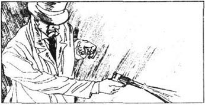
接着，我们为亨利爵士的担忧胜过了我们自身的恐惧感。我和福尔摩斯一齐开了枪。那个家伙痛苦地大叫一声，我们便知道我们已打中它了。可是它并没有停下脚步，还继续向前窜去，追着亨利爵士。
在我们听到了它那痛苦的嗥叫时，我们的恐惧便烟消云散了。这并非什么魔犬。我们的子弹既能打伤它，我们也就能杀死它。我们尽力追赶它。我从没见过谁能像福尔摩斯在那天夜里跑得那样快，我也跟不上他。我们听到了前面路上亨利爵士一声接一声的喊叫和那只猎犬发出的低沉的吼声。我看到那个家伙扑向亨利爵士，并将其掀翻在地上。它的牙齿直扑他的咽喉。可是就在这之后，福尔摩斯一连气将手枪里的子弹都打进了那只猎犬的身体。它发出了最后一声低沉的嗥叫，向空中咬了一口，随后就倒在地上了。我用手枪抵住它的头部，可是我不必开枪了。猎犬已经死了。
亨利爵士躺在他摔倒的地方，毫无知觉。我们赶快把他的衣领解开。福尔摩斯开枪开得正及时，那只猎犬还没够着我们的朋友的喉咙。他的眼睛已经开始睁开了，他仰视着我们。
“我的上帝啊，”他低声说道，“那是什么？究竟是什么东西啊？”
“不管它是什么，它已经死了，”福尔摩斯说道。“我们已经把您家的妖魔永远地消灭了。”
躺在我们面前的那个家伙同一只小狮子一般大小。它的嘴巴和牙齿很大。它们闪烁着蓝色的光芒。它那残忍的眼睛周围也有圈蓝色的火苗。我摸了摸它那发光喷火的皮毛。我抬起手来时，手似乎也着火了。
“是磷，”我说道。“那便是那只猎犬在黑暗之中看上去冒火光的原因。斯台普顿在房子旁边的那个小屋里给那只猎犬涂上了含磷的涂料。”
可是福尔摩斯对亨利爵士比对斯台普顿的狡猾考虑得要多些。
“我必须向您抱歉，亨利爵士，”他说道。“我使您遭受了生命危险。我预计看到的是一只大猎犬，可没想到会是这样的一只。大雾留给我们克制恐惧感的时间很短，还有一会儿我们都惊讶得动弹不了身子。”
“没关系，”亨利爵士说道。“您救了我的性命，我还得感谢您呢。请扶我站起来。你们现在打算怎么办呢？”
亨利爵士的双腿因这次可怕的经历而抖得很厉害，他自己都站不起来了。我们把他扶到了一块石头旁。他坐在那儿，双手捂着头。
“我们现在得把您留在这儿了，亨利爵士，还要去想方设法抓住斯台普顿呢。我们将尽快回来并把您带到庄园去。案子已经了结了，可是我们现在必须抓住那个人。”
我跟着福尔摩斯沿着那条小路返回了那栋屋子。
“我们必须搜搜这栋屋子，”福尔摩斯说道，“可是几乎可以肯定他是不会在的。他可能已听到了我们的枪声，于是便知道他那罪恶的勾当已经结束了。”
前门开着。我们进去一间一间地察看。楼下的房间都空着，于是我们上了楼，除了那个锁起来的房间之外都查看过了。
“里面有人，”我说道。“我听到有人在动。帮我把这扇门打开。”
我们用身体撞门，门锁一松动我们就进去了。我们握着手枪，准备随时开枪射击。
在房间的中央有一个人被绑在柱子上。我们无法看出来是男是女，由于那人被床单蒙住了。只有眼睛和鼻子没被蒙住。
我们解开床单，把这个被捆着的人从柱子那儿松开。是斯台普顿小姐。我们给她松绑时可以看到她脖子上几道长长的、红色的伤痕。
“那个残忍的恶魔斯台普顿打了她，”福尔摩斯说道。“把她安置在椅子上。”斯台普顿小姐已因毒打和疲惫而昏过去了。在我们把她安置在椅子上时，她睁开了双眼。
“他安全了吗？”她问道。“他逃脱了吗？”
“他从我们手里是逃不掉的，斯台普顿小姐。”福尔摩斯说道。
“不，不，我不是指我丈夫。我指亨利爵士。他安全吗？”
“安全，”我说道，“而且，那只猎犬已经死了。”
“感谢上帝，”她说道。，“感谢上帝。噢，这个坏蛋。看看他是怎么对待我的。”她给我们看了她的双臂，我们惊恐地看到遭受毒打的地方皮肤又青又紫的。“但是，他还用别的途径伤害我。我以为他爱我时，我能接受许多事情。可是他并不爱我。他利用了我。”
“那么现在就请帮助我们吧，”福尔摩斯说道。“告诉我们他去哪儿了。”
“在泥潭中央的一个小岛上有一栋古老的房子，”她说道。“他以往把猎犬安置在那里。他还把那屋子准备好等万一躲避藏身时用。他一定在那儿，我敢肯定。”
“今晚在这样的大雾之中谁也找不到走进格林盆泥潭的路。”福尔摩斯望着窗外说道。
雾像雪白的羊毛似的紧围在窗户外面；我们知道，在大雾蒸发散尽之前我们是不能够试着去追他的。我们决定将亨利爵士带回巴斯克维尔庄园。我们被迫告诉他有关斯台普顿夫妇的一切详情，他听到关于他所钟爱的那个女子的实情时受到了很大的伤害。她已结婚的消息和他所经历的恐怖之事使他发起高烧来。我们派人请摩梯末医生来，他来了并在亨利爵士身旁守了一整夜。
第二天早上，斯台普顿小姐带我们到了贯穿泥潭的一条小路旁。雾散了，她给我们看了她和她丈夫为标记路途而插的一根根木棍。我们随着这些小木棍穿过泥潭，那儿散发着腐败的植物的臭味。我们走的时候湿乎乎的地面扯着我们的双脚。我们不时从小路旁走歪，陷入了泥潭，直到齐腰那么深。独自一人是不敢奢求自己能逃脱泥潭的拖陷的；没有别人的帮助就会陷进去没命了。
但是，我们没有发现斯台普顿的任何迹象。我们搜啊搜，可是一无所获。勿庸置疑，他在大雾中迷了路，陷进泥潭中去了。在泥潭深处的某个地方，他的尸体将永远躺在那里。
我们到达了斯台普顿小姐描述过的那个小岛，还搜寻了一番那栋古老的屋子。
“这个地方只能告诉我们已知的一切详情，”福尔摩斯说道。“这些骨头表明他曾把猎犬藏在这儿，可是他不能使它默不出声，所以人们听到了它的叫声。这儿是瓶含磷的涂料。斯台普顿狡猾地把它抹在了猎犬身上。有了我们昨晚的所见所感以后，我们对查尔斯爵士因恐慌而暴死就不足为奇了。我现在也明白塞尔登是怎么知道那只猎犬在黑暗中跟在他后面的了。那个可怜的家伙就那么大叫着向前跑，这并不奇怪。关于那只魔狗的那个古老的故事使他萌发了使用磷的念头。十分狡猾。我曾在伦敦这么说过，我现在再这么说一遍，华生。咱们还从来没有一个比躺在那边的那个人更为危险的对手呢。”——他指了指散布在我们四周的那片大泥潭。
18 Looking Back
18
Looking Back
It was the end of November, more than a month after our return from Baskerville Hall. Holmes and I were sitting on either side of a bright fire in our sitting room in Baker Street. Since our return, Holmes had been working hard on two other cases, and he had been too busy to discuss the Baskerville case. But now the other cases were finished, and he had been successful in both of them. I decided it was a good time to ask him the final questions about Stapleton and the hound.
'The picture showed us that Stapleton was indeed a Baskerville,' Holmes began. 'He was the son of Roger Baskerville, who was Sir Charles' younger brother. Roger was a criminal who escaped from prison and ran away to South America. Everyone thought he had died unmarried, but that was not true. He had one son, also called Roger, whom we knew as Stapleton. Stapleton married a beautiful South American, and came to England, where he started a school in the north. He discovered that he would inherit the Baskerville lands and fortune if Sir Charles and Sir Henry both died. That is why he moved to Devonshire when the school closed.
'When he met Sir Charles, he heard the story of the hell-hound. He also learned that Sir Charles believed these supernatural stories, and that he had a weak heart.
'Stapleton had the idea of buying a huge hound, and of using the phosphorus to make it shine like the hound in the story. I have found the place where he bought the animal. He took it by train to Devonshire and walked many miles over the moors with it so that it would not be seen near Baskerville Hall.
'He needed to get Sir Charles out of the Hall at night. This would be easy to do if his wife made Sir Charles fall in love with her. But, although he beat her, she refused to help him with his evil plan.
'Then Stapleton met Laura Lyons. We know that he made her write a letter to bring Sir Charles to the moor gate on that sad night. The hound, which was shining with phosphorus, chased Sir Charles down the Yew Alley. Sir Charles' terror was so great that his weak heart stopped, and he died, but the animal did not touch the dead body.
'The hound had run on the grass, so it left no footprints, except the one found by Dr Mortimer. You see how clever Stapleton was. Neither he nor the hound had touched Sir Charles so there was no sign of murder. The only two people who might suspect him—his wife and Mrs Lyons could not be certain about what he had done. Anyway, neither of them would inform the police about him.
'Next, Stapleton learned that Sir Henry had reached England, so he went to London. He hoped to murder Sir Henry there. He took his wife with him, but he wasn't sure that she would keep his secret, so he did not tell her the truth. He locked her up in their hotel. She knew that he had some evil plan, but she was too frightened to give Sir Henry a clear warning. Instead, she sent him the letter made of words cut from a newspaper.
'Meanwhile, Stapleton was wearing a false beard and following Sir Henry. He needed something to give the hound Sir Henry's scent, so he paid a maid at Sir Henry's hotel to steal one of his shoes. The first one was a new one, and didn't have Sir Henry's scent on it. It was no use for the hound, so he put it back, and another, older, shoe was stolen. When the shoes were changed, I knew that the hound must be a natural and not a supernatural creature.
'Next there was the letter made of words cut from a newspaper. When I looked at it, I held it close to my eyes. I noticed a smell of perfume, so I guessed that a woman had sent the letter.
'By the time I went to Devonshire I knew that there was a real hound, and I knew we were looking for a man and a woman. I guessed that the Stapletons were the pair. I had to watch Stapleton, but I had to hide myself. As I have explained, I could not tell you what I was doing. I stayed in Newtown and used the hut on the moor only when necessary.
'Your letters were sent to me immediately from Baker Street, and were very helpful. When you told me that Stapleton had owned a school in the north of England, I checked on him and where he had come from. I discovered he had come from South America. And then everything became clear.
'By the time you found me on the moor, I knew everything, but I could prove none. We had to catch the man doing something criminal, and so I had to put Sir Henry in danger.
'Dr Mortimer tells me that Sir Henry will be completely better after some rest. As you know, the two of them have become good friends, and are going on a long holiday together. Sir Henry will take some time to forget Miss Stapleton. He loved her deeply and it hurt him badly when he learned the truth about her.
'She was very frightened of her cruel husband, but she suspected that he was responsible for Sir Charles' death. She knew about the hound, and when Selden died she guessed that the hound had killed him. She knew her husband had the hound at their house on the night Sir Henry came to dinner. They argued about the hound that evening, and as they argued Stapleton told her about Mrs Lyons. Any love she had for her husband disappeared at that moment. He knew that she wanted to help Sir Henry, so he beat her and tied her up.
'He probably hoped that when he inherited the Baskerville lands, she would love him again. He certainly thought that she would keep silent if she became Lady Baskerville. But I think he was wrong. He had been too cruel to her. She could not forgive him or love him again, nor, I think, allow him to enjoy the results of his crime.
'Of course, he could not frighten Sir Henry in the same way as Sir Charles. Sir Henry was a young and healthy man. So he kept the hound hungry. He knew that the animal would either kill Sir Henry or would hurt him so badly that it would be easy to complete the murder.'
I had one last question for Holmes. 'But Stapleton was living so close to Baskerville Hall and using a false name. It looked very strange. How would he explain that to the police, if after Sir Henry's death he then inherited the Baskerville lands and fortune?'
'I don't know how he planned to explain the false name and why he was living at Pen House,' said Holmes. 'I can only say that he was a very clever man. I am sure he had thought of an answer to the problem.
'But that's enough work for the evening, Watson. I have two tickets for the theatre. If we get ready now, we shall have time to stop at my favourite restaurant for some dinner on the way.'
look back 回顾。
too... to do sth. 太……以致不能做某事。
learn v. be told or informed. 获悉。
mile 英里（长度单位）。
inform v. give knowledge to. 通知，告诉。
take sth. / sb. with... 随身带着某物／人。
lock up 锁起来。
meanwhile adv. at the same time. 与此同时。
perfume n. kinds of prepared liquids with sweet smell, esp. from an essence of flowers. 香味；香水。
lady n. （头衔）贵妇；对一般女士的尊称。
result n. outcome, effect. 结果。
crime n. offence for which there is severe punishment by law. 犯罪行为。
healthy adj. well, strong and able to resist disease. 健康的，健壮的。
That's enough work for the evening. 今晚的工作就到此为止吧。
on the way being engaged in going or coming. 在路上，在途中。
18 回顾
18 回顾
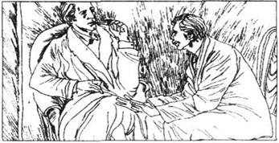
已经是11月底，我们从巴斯克维尔庄园回来之后一个多月的时候了。我和福尔摩斯坐在贝克街上的那栋房子的客厅中的熊熊的炉火两旁。我们回来之后，福尔摩斯不辞辛苦地办理了另外两件案子，他都忙得没有时间讨论巴斯克维尔庄园里发生的那件案子。可是，现在这两件案子都已了结了，他办得也都非常成功。我决定，这该是向他询问有关斯台普顿和那只猎犬的最后一些问题的大好时机了。
“那幅画像向我们表明斯台普顿真的是巴斯克维尔家族中的一员，”福尔摩斯开腔了，“他是罗杰·巴斯克维尔即查尔斯爵士的弟弟的儿子。罗杰是越狱潜逃、跑到了南美洲的囚犯。大家都以为他没结婚就死了，可是那不是真的。他有一个儿子，也叫罗杰，就是我们所认识的斯台普顿。斯台普顿娶了一位南美美女，又来到了英格兰，在那儿的北部开办了一所学校。他发现，要是查尔斯爵士和亨利爵士都已死的话，自己就能继承巴斯克维尔家族的地产了。那就是他在学校关闭之后搬到德文郡的原因所在。
“他遇见查尔斯爵士时听到了有关魔狗的故事。他还得知，查尔斯爵士相信这些鬼怪故事，心脏也很虚弱。
“斯台普顿就起了买一只大猎犬并用磷来使猎犬像故事中的那只那样闪闪发光的念头。我已找到他买狗的地点。他乘火车将它带到德文郡，又牵着狗穿过沼地走了很长的路，如此一来在巴斯克维尔庄园附近就没被人们看见。
“他需要让查尔斯爵士在夜间走出庄园。如果他的妻子使得查尔斯爵士爱上她的话，这就好办了。可是，即使是他揍她，她也拒绝帮助他实施他那邪恶的计谋。
“后来，斯台普顿遇到了劳拉·莱昂丝。我们知道，他让她写了封信，把查尔斯爵士在那个令人伤心的夜晚带到了通往沼地的栅门那里。那只猎犬闪着磷光，顺着水松小道就向查尔斯爵士追了过来。查尔斯爵士恐怖过度，导致原本就很虚弱的心脏停止跳动，他就死了，可那只动物是不碰死尸的。
“那猎犬是在草地上跑的，于是便没有留下什么爪印，除了摩梯末医生发现的那一个之外。你看看斯台普顿是何等狡猾。他和猎犬都没碰过查尔斯爵士，因此没有谋杀的一丝影子。可能会怀疑他的只有两个女人——他的妻子和莱昂丝太太——她们也不敢肯定他干了些什么。无论如何，她们俩都不会向警方告发他的。
“接下来，斯台普顿获悉亨利爵士已到达英格兰，于是便去了伦敦。他希望能在那儿将亨利爵士干掉。他带着他的妻子，可是他不敢肯定她会保守他的秘密，因此他没有告诉她实情。他把她锁在他们居住的旅馆里。她知道他有个邪恶的计划，可是她太害怕了，以致不敢向亨利爵士发出一个清楚明了的警告。反之，她寄给他一封由报纸上剪下来的字拼凑成的信。
“与此同时，斯台普顿正戴着假胡须跟踪亨利爵士。他需要亨利爵士的一件能使猎犬闻味跟踪的东西，因此贿赂了亨利爵士下榻的那个旅馆里的一个女仆，让她偷出他的一只鞋子来。第一只是新鞋，上面没有亨利爵士的气味。它对猎犬丝毫无用，他因此就把它送回去了，而另一只旧一点的鞋就被偷去了。鞋被换了时，我就知道那只猎犬是自然界的一只动物而不是什么鬼怪神魔。
“接下来就有了由报纸上剪下来的字拼成的那封信。我看它时，把它举在了眼前。我注意到了一股香水味，于是猜到是一位女士寄的那封信。
“在我去德文郡之前我已知道那儿有只活生生的猎犬，还知道我们将要寻觅一位男子和一位女士。我揣测到斯台普顿兄妹就是要找的那对。我得监视斯台普顿，可还得埋伏起来。正如我所解释的那样，我不能告诉你我的所作所为。我待在纽顿，只有必要时才用一下沼地上的那个小屋。
“您寄给我的信件被立即从贝克街送到了我的手中，它们非常有帮助。当你告诉我斯台普顿曾在英格兰北部办过一所学校时，我查了一下他本人的身世。我发现他来自于南美。那么，一切都弄清楚了。”
“你在沼地上发现我时，我已知道了全部事实，可是我什么也证明不了。我们必须在那个人作案的当场将其抓获，因此我不得不将亨利爵士置于危险的境地。
“摩梯末医生告诉我说，亨利爵士在休息之后就会彻底地恢复了。如你所知，这两人已成了好朋友，正准备一起进行长途旅行。亨利爵士要经过一段时间才能忘掉斯台普顿小姐。他深深地爱着她，得知有关她的真相时受到了很大的伤害。
“她非常害怕她那残酷的丈夫，可是她又怀疑到他应对查尔斯爵士的死负责。她知道那只猎犬的事情，塞尔登死去时她猜到是猎犬害死了他。她知道她丈夫在亨利爵士来吃饭的那个晚上把狗安顿在了家里。他们在那个傍晚因猎犬的事情吵了起来，争吵时斯台普顿告诉了她有关莱昂斯太太的事情。她对她丈夫的任何爱意都在那一刻消失了。他知道她想帮亨利爵士的忙，因此揍了她，又把她捆了起来。
“他可能指望在他继承了巴斯克维尔家族的地产时，她就又会爱他了。他理所当然地认为要是她能成为‘巴斯克维尔男爵夫人’的话她就会对此默不作声的。可是我认为他错了。他对她一向太残忍了。她不会原谅他或再爱他了，我认为她也不会容许他享受他的犯罪所得。
“当然了，他不能用吓唬查尔斯爵士的方式对待亨利爵士。亨利爵士是位既年青又健康的人。因此他使那只猎犬处于饥饿状态。他知道，那个动物要么会咬死亨利爵士，要么会重伤他，而那么一来就可以轻松地将他谋杀完事大吉了。”
我对福尔摩斯还有最后一个问题。“但是，斯台普顿住得离巴斯克维尔庄园那么近，还用着化名。这看上去非常奇怪。他怎样才能向警方解释得通那个，要是在亨利爵士死后他就继承了巴斯克维尔家族的地产和其他财产呢？”
“我不知道他是打算如何解释他更名改姓和住在格林盆宅邸的原因的，”福尔摩斯说道。“我只能说他是个非常狡猾的人。我敢肯定他已想出了解决这一问题的答案。”
“然而，今晚就干这么多吧，华生。我有两张戏票。如果现在准备好了，咱们还有时间中途到我喜欢的那个饭馆吃晚餐。”
Exercises
Exercises
A Checking your understanding
Chapters 1-4 Find answers to these questions in the text.
1 When was the Hound of the Baskervilles first seen?
2 What was interesting about Sir Charles' footprints in the Yew Alley?
3 Who saw the footprints of a huge hound in the Yew Alley?
4 How did Dr Mortimer know that Sir Charles had stood for five or ten minutes by the moor gate?
Chapters 5-9 Are these sentences true (T) or false (F)?
1 The man with the large black beard in the taxi was Barrymore.
2 Roger Baskerville was Sir Henry's uncle.
3 Holmes stayed in London while Dr Watson and Sir Henry went to Baskerville Hall.
4 Miss Stapleton thought that Dr Watson was in danger.
5 Selden, the escaped prisoner, was Mrs Barrymore's brother.
Chapters 10-14 How much can you remember? Check your answers.
1 Who had written a letter to Sir Charles to ask for a meeting?
2 What did Mr Frankland see through his telescope?
3 Why did Holmes live secretly in a hut on the moor?
4 Why did Holmes and Dr Watson think that Selden's body was Sir Henry?
Chapters 15-18 Write answers to these questions.
1 Who did the picture of Sir Hugo look like?
2 Why did Holmes say that he and Dr Watson were going to London?
3 How did Stapleton get Mrs Lyons to help him?
4 Why did the Hound seem supernatural?
5 Why did Stapleton beat his wife and tie her up?
6 How did Stapleton die?
7 Why did Stapleton want to murder Sir Henry?
B Working with language
1 Choose the best linking word and complete these sentences with information from chapters 1-7.
1 Dr Mortimer went to see Sherlock Holmes because/ although...
2 Because/although Dr Mortimer was a man of science, he...
3 Sir Henry's old shoe was stolen before/after...
4 Holmes thought Sir Henry's life would be in danger if/unless...
5 Holmes himself could not leave London until / since...
2 Put this summary of chapters 15 and 16 in the right order, and then join the parts together to make five sentences.
1 who told them the truth about her letter to Sir Charles
2 and Sherlock Holmes shot and killed it
3 as soon as Sherlock Holmes and Dr Watson left Baskerville Hall in the morning
4 then Holmes and Watson went to visit Mrs Lyons
5 and hid behind some rocks
6 they went to the station at Newtown
7 Holmes and Watson ran after the Hound
8 where Holmes told his boy to go to London
9 Stapleton let the Hound out and it chased Sir Henry
10 in the evening Holmes and Watson drove to the Stapletons' house
11 and from there to send a telegram to Sir Charles
12 when Sir Henry left the house and began to walk back to the Hall
C Activities
1 You are Dr Watson. Write a letter to Sherlock Holmes to tell him everything that happened in chapters 7, 8，and 9.
2 You are a newspaper reporter. Ask the maid at Baskerville Hall for her story. Write the dialogue of your interview.
3 Write a short description of a character you like in the story.
4 Write a letter to the author of the book and say what you like and what you don't like about it.
封底
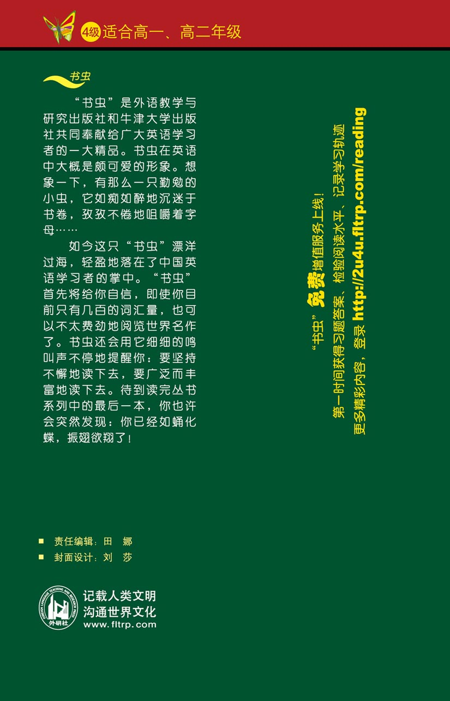